VSAG Documentation
VSAG is a high-performance, production-grade vector indexing library for similarity search. It powers vector retrieval in OceanBase and other projects at Ant Group, and is released under the Apache 2.0 license.
Features
- Multiple index types:
hnsw,hgraph,diskann,ivf,pyramid,sindi,brute_force, covering in-memory, memory-disk hybrid, sparse and multi-tenant scenarios. - Rich quantization: fp32 / fp16 / bf16 / int8 / sq8 / sq4 / pq, with SIMD dispatch on x86_64 and AArch64.
- Advanced capabilities: range search, filtered search, serialization, conjugate graph
enhancement, online
Tune-based optimization, custom allocator / thread pool. - Language bindings: native C++, Python via
pyvsag, Node.js / TypeScript via the npm packagevsag.
How to Read This Documentation
- User Guide — start here if you are new to VSAG: install, create an index, and run search.
- Indexes — compare supported index types and look up their parameters.
- Advanced Features — deep dives into specific search, serialization, memory, and hybrid-index capabilities.
- Performance and Tuning — best practices,
Tune, benchmarks, and evaluation tooling. - Developer Guide — building from source, running tests, and contributing.
- Resources — release notes, roadmap, community links, related projects, papers, and contributors.
The Chinese version of the same documentation is available under docs/docs/zh/.
Project Links
- Source: https://github.com/antgroup/vsag
- Issues: https://github.com/antgroup/vsag/issues
- Releases: https://github.com/antgroup/vsag/releases
Installation
VSAG can be installed as a C++ library, a Python package (pyvsag), or a Node.js/TypeScript
package (vsag).
Using Docker (Recommended for Development)
The official development image includes the full toolchain (GCC 9.4+, CMake 3.18+,
clang-format/clang-tidy 15, HDF5, etc.):
docker pull vsaglib/vsag:ubuntu
docker run -it --rm -v $(pwd):/work -w /work vsaglib/vsag:ubuntu bash
Building from Source
Requirements
- Operating System: Ubuntu 20.04+ or CentOS 7+
- Compiler: GCC 9.4.0+ or Clang 13.0.0+
- CMake: 3.18.0+
- clang-format / clang-tidy: exactly version 15 (enforced by
make fmt/make lint)
Build
git clone https://github.com/antgroup/vsag.git
cd vsag
make release
Other common Makefile targets:
make debug— plain debug build (no sanitizers; tests/tools/examples disabled by default).make dev— developer configuration: debug + tests + tools + examples.make test— build with tests enabled and run the unit + functional suites.make cov— build with coverage instrumentation; run tests afterwards to generate the report.make asan/make tsan— sanitizer-enabled builds.make pyvsag PY_VERSION=3.10— build the Python wheel.make dist-pre-cxx11-abi/dist-cxx11-abi/dist-libcxx— build redistributable tarballs.
See Building for details.
Python (pyvsag)
pip install pyvsag
Node.js / TypeScript
npm install vsag
The bindings source lives under typescript/ and the npm package name is vsag.
Optional Features
Enable or disable at CMake configure time with these cache options:
ENABLE_INTEL_MKL=ON— Intel MKL acceleration.ENABLE_LIBAIO=ON— Linux AIO for DiskANN async IO.ENABLE_TOOLS=ON— build tools undertools/(includingeval_performance).ENABLE_EXAMPLES=ON— build sample programs underexamples/cpp/.
If you build through the project Makefile, the corresponding environment variables are
VSAG_ENABLE_INTEL_MKL=ON, VSAG_ENABLE_LIBAIO=ON, VSAG_ENABLE_TOOLS=ON, and
VSAG_ENABLE_EXAMPLES=ON.
Creating an Index
All VSAG indexes are built through vsag::Factory::CreateIndex(name, build_params_json). The
name selects the implementation; build_params_json configures dimension, metric, and
index-specific options.
Supported Index Types
| Name | Description | Page | Example |
|---|---|---|---|
hgraph | Improved graph index with richer quantization options | HGraph | examples/cpp/103_index_hgraph.cpp |
ivf | Inverted file with quantization | IVF | examples/cpp/106_index_ivf.cpp |
sindi | Sparse-vector index (e.g. BM25, SPLADE) | SINDI | examples/cpp/109_index_sindi.cpp |
pyramid | Multi-tenant / tag-partitioned graph index | Pyramid | examples/cpp/107_index_pyramid.cpp |
brute_force | Exact exhaustive search; useful as baseline | — | examples/cpp/105_index_brute_force.cpp |
hnsw | Classic HNSW graph index (deprecated — prefer hgraph) | — | examples/cpp/101_index_hnsw.cpp |
diskann | Memory-disk hybrid (deprecated — prefer ivf) | — | examples/cpp/102_index_diskann.cpp |
Common Top-Level Fields
| Field | Values | Notes |
|---|---|---|
dim | positive integer | Fixed after build |
dtype | float32 / fp16 / bf16 / int8 | Public API currently uses float32 |
metric_type | l2 / ip / cosine | Must match at query time |
Examples
HGraph
HGraph uses index_param as the build-time sub-object (hgraph is reserved for search-time
parameters like ef_search). See examples/cpp/103_index_hgraph.cpp.
std::string params = R"(
{
"dim": 128,
"dtype": "float32",
"metric_type": "l2",
"index_param": {
"base_quantization_type": "fp32",
"max_degree": 32,
"ef_construction": 400
}
}
)";
auto index = vsag::Factory::CreateIndex("hgraph", params).value();
HGraph with SQ8 quantization
Switch base_quantization_type to sq8 to store base vectors as 8-bit scalar-quantized codes
(roughly a 4× reduction versus fp32) with minimal recall impact; other quantization types
(fp16, bf16, pq, …) are selected the same way.
std::string params = R"(
{
"dim": 768,
"dtype": "float32",
"metric_type": "ip",
"index_param": {
"base_quantization_type": "sq8",
"max_degree": 32,
"ef_construction": 400
}
}
)";
auto index = vsag::Factory::CreateIndex("hgraph", params).value();
See Index Parameters for the full reference.
k-Nearest Neighbor Search
This page assumes VSAG is already installed. Examples are available in C++, Python, and TypeScript
under the examples/ directory. This page
uses the C++ BruteForce index for illustration; the full source is at
examples/cpp/105_index_brute_force.cpp.
In most cases, your program should call
vsag::init()once at startup to perform one-time initialization (global logger, allocator, etc.). The snippets below omit boilerplate to focus on the essential steps.
Prepare Vectors
VSAG operates on collections of fixed-dimensional vectors (typically a few hundred to a few
thousand dimensions). Vectors are laid out row-major, equivalent to vector[num_vectors][dim] in
C++. The API only requires a pointer (const float*) to the first element, so you can use a raw
array, std::vector<float>, or a custom buffer.
VSAG currently supports 32-bit float vectors for the public API. Other dtypes are available internally via the
dtypeoption.
A k-NN search needs two datasets:
- base: all vectors in the database; size =
num_vectors * dim. - query: the query vector(s) for which to find nearest neighbors; size =
num_queries * dim. Currently the publicKnnSearchAPI processes one query at a time.
int64_t num_vectors = 10000;
int64_t dim = 128;
int64_t* ids = new int64_t[num_vectors];
float* datas = new float[num_vectors * dim];
std::mt19937 rng(47);
std::uniform_real_distribution<float> distrib;
for (int64_t i = 0; i < num_vectors; ++i) ids[i] = i;
for (int64_t i = 0; i < dim * num_vectors; ++i) datas[i] = distrib(rng);
float* query_vector = new float[dim];
for (int64_t i = 0; i < dim; ++i) query_vector[i] = distrib(rng);
Create an Index and Insert Vectors
The Index interface is the central abstraction. Multiple implementations exist; brute_force is
the simplest (exhaustive comparison, used as a baseline).
All indexes must be created explicitly, specifying dimension and metric:
std::string build_params = R"(
{
"dtype": "float32",
"metric_type": "l2",
"dim": 128
}
)";
auto index = vsag::Factory::CreateIndex("brute_force", build_params).value();
Build performs any required training; Add appends vectors. BruteForce supports both:
auto base = vsag::Dataset::Make();
base->NumElements(num_vectors)
->Dim(dim)
->Ids(ids)
->Float32Vectors(datas)
->Owner(false);
index->Add(base);
Search
KnnSearch takes the query, k, and a JSON search-params string. BruteForce has no tunable
search params, so an empty object is passed.
auto query = vsag::Dataset::Make();
query->NumElements(1)->Dim(dim)->Float32Vectors(query_vector)->Owner(false);
int64_t topk = 10;
auto result = index->KnnSearch(query, topk, R"({})").value();
for (int64_t i = 0; i < result->GetDim(); ++i) {
std::cout << result->GetIds()[i] << ": " << result->GetDistances()[i] << std::endl;
}
The result contains up to k neighbors sorted by ascending distance to the query.
pyvsag
pyvsag is the official Python binding for VSAG, implemented with pybind11. Sources live under
python_bindings/ and python/.
Installation
pip install pyvsag
To build from source:
make pyvsag PY_VERSION=3.10
# Build wheels for multiple Python versions:
make pyvsag-all
Quick Start
pyvsag.Index(name, parameters) accepts the index name and a JSON-encoded parameter string,
matching the C++ vsag::Factory::CreateIndex signature:
import json
import numpy as np
import pyvsag
dim = 128
num_elements = 10_000
data = np.random.random((num_elements, dim)).astype(np.float32)
ids = np.arange(num_elements, dtype=np.int64)
index_params = json.dumps({
"dtype": "float32",
"metric_type": "l2",
"dim": dim,
"index_param": {
"base_quantization_type": "fp32",
"max_degree": 32,
"ef_construction": 300,
},
})
index = pyvsag.Index("hgraph", index_params)
index.build(vectors=data, ids=ids, num_elements=num_elements, dim=dim)
query = np.random.random(dim).astype(np.float32)
search_params = json.dumps({"hgraph": {"ef_search": 60}})
result_ids, result_dists = index.knn_search(
vector=query, k=10, parameters=search_params,
)
print(result_ids, result_dists)
Saving & Loading
index.save("index.bin")
new_index = pyvsag.Index("hgraph", index_params)
new_index.load("index.bin")
Relationship with the C++ Library
pyvsag wraps the same vsag::Index API as C++ and shares the underlying index binaries. You can
build an index in Python and load it in C++ (and vice versa) as long as parameters match.
More Examples
See examples/python/ in the repository.
Indexes
VSAG ships a family of index implementations that share a single builder-style API,
one serialization format, and one set of operations (Build, Add, KnnSearch,
RangeSearch, Remove, Serialize / Deserialize, …). They differ in the data
structures and trade-offs they use under the hood.
The pages in this section cover the actively developed indexes:
| Index | Page | Best for |
|---|---|---|
hgraph | HGraph | General-purpose, high-recall graph with rich quantization options |
ivf | IVF | Partition-based search, high-throughput batch queries, large corpora |
sindi | SINDI | Sparse vectors (BM25 / learned sparse) on inner-product |
pyramid | Pyramid | Multi-tenant or tag-partitioned corpora with hierarchical paths |
brute_force is also available as an exact-search baseline (see
Creating an Index and examples/cpp/105_index_brute_force.cpp).
hnsw and diskann are retained for backward compatibility but are deprecated; new
deployments should prefer hgraph (graph-based) or ivf (partition-based) instead.
Parameter conventions
All indexes share the same top-level build fields:
| Field | Values | Notes |
|---|---|---|
dim | positive integer | Vector dimensionality; fixed after build |
dtype | float32 / float16 / bfloat16 / int8 / sparse | sparse is SINDI only |
metric_type | l2 / ip / cosine | Must match at query time (SINDI is ip only) |
Index-specific build parameters live under the index_param sub-object; search-time
parameters live under a sub-object named after the index (e.g. hgraph, ivf,
sindi, pyramid). Concrete schemas are documented on each page and enumerated in
Index Parameters.
Index Parameters
This page summarises the commonly used parameters for every VSAG index type. For the full enumeration, consult the source:
- Build parameter keys:
src/constants.cpp - Public constants:
include/vsag/constants.h - Per-index examples:
examples/cpp/101_index_hnsw.cppand friends.
Common Fields
Every index requires these top-level fields at build time:
| Field | Values | Description |
|---|---|---|
dim | positive integer | Vector dimensionality; cannot change after build |
dtype | float32 / fp16 / bf16 / int8 | Vector data type; determines internal representation |
metric_type | l2 / ip / cosine | Distance metric |
HNSW
HNSW uses the hnsw sub-object for build parameters. It does not accept HGraph-only keys
such as base_quantization_type.
{
"dim": 128,
"dtype": "float32",
"metric_type": "l2",
"hnsw": {
"max_degree": 32,
"ef_construction": 400,
"use_conjugate_graph": false
}
}
| Field | Typical | Description |
|---|---|---|
max_degree | 16–48 | Maximum out-degree per node |
ef_construction | 200–500 | Candidate set size during build; larger = higher recall, slower build |
use_conjugate_graph | bool | Build the conjugate graph |
At search time:
{"hnsw": {"ef_search": 100, "use_conjugate_graph_search": false}}
HGraph
HGraph places its build parameters under the generic index_param key (see
examples/cpp/103_index_hgraph.cpp); the hgraph key is reserved for search-time parameters.
{
"dim": 128,
"dtype": "float32",
"metric_type": "l2",
"index_param": {
"base_quantization_type": "fp32",
"max_degree": 32,
"ef_construction": 400
}
}
| Field | Typical | Description |
|---|---|---|
max_degree | 16–48 | Maximum out-degree per node |
ef_construction | 200–500 | Candidate set size during build; larger = higher recall, slower build |
base_quantization_type | fp32 / fp16 / bf16 / sq8 / sq4 / pq | Quantization of the base storage — see the Quantization chapter for all supported values |
At search time:
{"hgraph": {"ef_search": 100}}
The hgraph search-param object also accepts brute_force_threshold (a float
in [0.0, 1.0], default 0.0). When set above zero and the request carries a
filter whose ValidRatio() is at most this threshold, HGraph skips the graph
traversal and runs an exact scan over the surviving ids. See the
HGraph index page
for details.
DiskANN
{
"diskann": {
"max_degree": 32,
"ef_construction": 400,
"pq_sample_rate": 0.1,
"pq_dims": 32,
"use_async_io": true
}
}
IVF
{
"ivf": {
"nlist": 4096,
"base_quantization_type": "sq8",
"nprobe": 32
}
}
Brute Force
{"brute_force": {}}
No extra parameters.
Pyramid
Pyramid supports organising multiple subgraphs by tag:
{
"pyramid": {
"tag_dim": 1,
"max_degree": 24,
"ef_construction": 300
}
}
SINDI (sparse vectors)
{
"sindi": {
"top_k": 32,
"doc_prune_ratio": 0.1
}
}
Runtime Parameters
Beyond build-time parameters, Index::Tune and SearchParam tweak runtime settings such as
ef_search and nprobe. See Optimizer and the
examples/cpp/3xx_feature_*.cpp examples.
HGraph
HGraph is VSAG’s flagship graph-based index. It builds a hierarchical proximity graph
similar in spirit to HNSW, but with a richer set of quantization options, a unified
build-parameter schema (index_param), and first-class support for reordering,
incremental updates, deletion, and ELP-based runtime tuning.
For most dense-vector workloads (text / image / multimodal embeddings, 64–4096 dims, from a few thousand up to hundreds of millions of points), HGraph is the recommended default.
- Source:
src/algorithm/hgraph.{h,cpp} - Example:
examples/cpp/103_index_hgraph.cpp
How it works
- Graph construction. Vectors are organised in a layered proximity graph; upper
layers act as navigation aids, the bottom layer connects every data point to its
nearest neighbours within a
max_degreebudget. The construction algorithm can be either NSW-style insertion (graph_type: "nsw", the default) or ODescent (graph_type: "odescent"). - Quantization. The base storage is compressed with a configurable quantizer
(
base_quantization_type—fp32,fp16,bf16,sq8,sq4,sq8_uniform,sq4_uniform,pq,pqfs,rabitq,tq). Optionally, a second high-precision copy is kept (use_reorder: truewithprecise_quantization_type) and used to re-rank the candidates returned by the coarse search. - Search. Greedy beam search traverses the graph top-down, expanding the current
frontier up to
ef_searchcandidates. When reordering is enabled, the final list is re-scored against the precise representation.
Quick start
#include <vsag/vsag.h>
std::string params = R"({
"dtype": "float32",
"metric_type": "l2",
"dim": 128,
"index_param": {
"base_quantization_type": "sq8",
"max_degree": 32,
"ef_construction": 400
}
})";
auto index = vsag::Factory::CreateIndex("hgraph", params).value();
// Build.
auto base = vsag::Dataset::Make();
base->NumElements(n)->Dim(128)->Ids(ids)->Float32Vectors(data)->Owner(false);
index->Build(base);
// Search.
auto query = vsag::Dataset::Make();
query->NumElements(1)->Dim(128)->Float32Vectors(q)->Owner(false);
auto result = index->KnnSearch(
query, /*topk=*/10, R"({"hgraph": {"ef_search": 100}})").value();
Build parameters
Build-time parameters live under index_param. The table below highlights the keys
most users need; the exhaustive list is in Index Parameters.
| Parameter | Type | Default | Description |
|---|---|---|---|
base_quantization_type | string | — (required) | fp32, fp16, bf16, sq8, sq4, sq8_uniform, sq4_uniform, pq, pqfs, rabitq, tq — see the Quantization chapter for per-quantizer details |
max_degree | int | 64 | Maximum out-degree per graph node |
ef_construction | int | 400 | Candidate list size during build (higher = better recall, slower build) |
graph_type | string | "nsw" | Graph algorithm: nsw or odescent |
use_reorder | bool | false | Keep a high-precision copy and re-rank after the coarse search |
precise_quantization_type | string | "fp32" | Quantizer used for reordering (takes effect only with use_reorder: true) |
base_pq_dim | int | 1 | Number of PQ subspaces. When using pq / pqfs, set this explicitly instead of relying on the default. |
build_thread_count | int | 100 | Threads used to parallelise build |
support_duplicate | bool | false | Enable duplicate-ID detection on insert |
duplicate_distance_threshold | float | 0.0 | Duplicate-detection distance threshold. When greater than 0, deduplicate by the nearest candidate distance; when 0, fall back to the current code memcmp check |
support_remove | bool | false | Enable graph delete-tracking metadata used by mark-remove recovery paths |
support_force_remove | bool | false | Enable RemoveMode::FORCE_REMOVE and its extra synchronization on the built index |
store_raw_vector | bool | false | Keep the raw vector in addition to the quantized copy (useful for cosine) |
use_elp_optimizer | bool | false | Auto-tune search parameters after build |
base_io_type / precise_io_type | string | "block_memory_io" | Storage backend (memory_io, block_memory_io, buffer_io, async_io, mmap_io) |
base_file_path / precise_file_path | string | — | File path; required when the corresponding *_io_type is disk-backed (buffer_io, async_io, mmap_io) |
hgraph_init_capacity | int | 100 | Initial capacity hint (doesn’t cap the final size) |
Supported input data types
The dtype field in the top-level build config selects how Dataset interprets the raw vector
bytes. HGraph supports four input types; the dtype value, the corresponding Dataset setter,
and the example demonstrating each combination are summarised below.
dtype | Element type | Dataset setter | Example |
|---|---|---|---|
float32 | float | Float32Vectors | 103_index_hgraph.cpp |
int8 | int8_t | Int8Vectors | 316_index_int8_hgraph.cpp |
float16 | uint16_t (IEEE 754 binary16, bit-pattern packed) | Float16Vectors | 321_index_fp16_hgraph.cpp |
bfloat16 | uint16_t (Brain Float, bit-pattern packed) | Float16Vectors (shared with FP16) | adapt 321_index_fp16_hgraph.cpp per the notes below |
The dim value is the logical vector dimensionality (number of elements), not the byte length, so
the same dim is reused across all four data types.
int8 input
Quantized int8 vectors are passed directly via Int8Vectors:
std::vector<int8_t> data(num_vectors * dim); // populate with int8 elements
auto base = vsag::Dataset::Make();
base->NumElements(num_vectors)->Dim(dim)->Ids(ids)
->Int8Vectors(data.data())->Owner(false);
Build config (note dtype: "int8"):
{
"dtype": "int8",
"metric_type": "l2",
"dim": 128,
"index_param": {
"base_quantization_type": "pq",
"max_degree": 26,
"ef_construction": 100,
"alpha": 1.2
}
}
Queries use the same Int8Vectors setter and the same dtype. A runnable example is
316_index_int8_hgraph.cpp.
float16 / bfloat16 input
FP16 and BF16 vectors are both passed through Float16Vectors, which takes a const uint16_t*
that points at the 16-bit storage of each element. Conversion from float is up to the caller;
inside the VSAG source tree there are convenience helpers (vsag::generic::FloatToFP16 in
src/simd/fp16_simd.h
and vsag::generic::FloatToBF16 in
src/simd/bf16_simd.h),
but these are internal headers that are not installed under include/vsag/. Application code
linking against an installed VSAG library should provide its own conversion (for example, copy
the small helper, use _cvtss_sh / F16C intrinsics, or any FP16 library of choice). The snippet
below uses the in-tree helper for brevity:
// The fp16/bf16 helpers below live in src/simd/ and are not part of the public
// installed headers. Replace with your own float -> uint16_t conversion when
// linking against an installed VSAG.
#include "simd/fp16_simd.h" // FloatToFP16 (for BF16, use simd/bf16_simd.h / FloatToBF16)
std::vector<uint16_t> data(num_vectors * dim);
for (size_t i = 0; i < data.size(); ++i) {
data[i] = vsag::generic::FloatToFP16(some_float_source());
}
auto base = vsag::Dataset::Make();
base->NumElements(num_vectors)->Dim(dim)->Ids(ids)
->Float16Vectors(data.data())->Owner(false);
Build config:
{
"dtype": "float16",
"metric_type": "l2",
"dim": 128,
"index_param": {
"base_quantization_type": "pq",
"max_degree": 26,
"ef_construction": 100,
"alpha": 1.2
}
}
To switch the example to BF16, change dtype to "bfloat16" and replace FloatToFP16 with
FloatToBF16; the Float16Vectors setter and the rest of the build/search flow stay the same.
A runnable FP16 example is
321_index_fp16_hgraph.cpp.
Note. The header comment at the top of
321_index_fp16_hgraph.cppcurrently mentions aBFloat16Vectors()setter, but no such setter exists —Float16Vectorsis the single entry point for both FP16 and BF16. Use it for bothdtype: "float16"anddtype: "bfloat16".
Choosing an input type
- Pick
float32when accuracy matters most and memory budget allows; this is the default. - Pick
float16/bfloat16to halve the input storage. FP16 has a smaller exponent range; BF16 has fewer mantissa bits but the same exponent range as FP32, which is often preferable for embedding-style vectors. - Pick
int8when your data is already integer-quantised (e.g. produced by an upstream quantiser or by a model with int8 outputs). Withint8input you typically still combine a coarse quantizer such aspq/sq8for the in-index storage.
The chosen dtype only constrains the input representation. The on-disk / in-memory storage is
still controlled by base_quantization_type (and optionally precise_quantization_type when
use_reorder: true), so e.g. dtype: "float16" + base_quantization_type: "sq8" is valid.
Search parameters
Search-time parameters live under the hgraph sub-object:
| Parameter | Type | Default | Description |
|---|---|---|---|
ef_search | int | — (required) | Size of the search frontier. Larger = higher recall, slower query. |
hops_limit | int | unlimited | Hard cap on the number of hops the beam search performs before returning the current frontier. |
brute_force_threshold | float | 0.0 | Selectivity-aware brute-force fallback. When > 0 and the supplied filter’s ValidRatio() is ≤ brute_force_threshold, the search bypasses the graph traversal entirely and runs an exact scan over the valid ids using the best available flatten codes (see the section below). Must lie in [0.0, 1.0]; the default 0.0 disables the feature and preserves legacy behavior. |
rabitq_one_bit_search | bool | false | RabitQ one-bit search path; see the Quantization chapter. |
auto result = index->KnnSearch(
query, topk, R"({"hgraph": {"ef_search": 200}})").value();
Brute-force fallback under highly selective filters (brute_force_threshold)
Graph traversal is the right strategy when most candidates pass the filter — the
graph quickly reaches the neighborhood of the query. As filter selectivity
increases (only a tiny fraction of vectors survive), the beam has to expand far
more nodes just to fill ef_search with valid candidates, and recall drops.
At some point an exhaustive scan over the surviving ids is both faster and
exact.
brute_force_threshold lets HGraph make that switch automatically on a
per-query basis:
// When the active filter keeps ≤ 1% of ids, run an exact scan instead.
auto params = R"({"hgraph": {"ef_search": 200, "brute_force_threshold": 0.01}})";
auto result = index->KnnSearch(query, topk, params, my_filter).value();
How it works (src/algorithm/hgraph/hgraph_search.cpp):
- The fallback only fires when all of the following hold:
brute_force_threshold > 0.0, and- a filter is supplied, and
filter->ValidRatio() <= brute_force_threshold.
- The accuracy of
Filter::ValidRatio()matters — it is the user-supplied hint the dispatcher checks against the threshold. See Filtered Search for the API contract. - The scan iterates every valid inner id and computes distances in batches of
64 using the most precise flatten storage available (raw vectors if
store_raw_vectorwas set, otherwise the high-precision reorder codes whenuse_reorder=true, otherwise the base quantized codes). - Because the scan already uses precise codes when present, the post-search reorder pass is skipped for queries that took the brute-force branch.
- Applies to
KnnSearch(the non-iterator overload, which is whatSearchWithRequestand the standardKnnSearch(query, k, params, filter)call) and toRangeSearch. It does not apply to the iterator-styleKnnSearch(..., IteratorContext*&, ...), because a single sweep cannot be paged across multiple iterator calls.
Picking a value:
- Leave at
0.0(default) for unfiltered or weakly filtered workloads. - For highly selective filters,
0.01–0.05is a reasonable starting point. Setting it higher than that effectively turns the index into a brute-force scanner whenever a filter is present. - The cost of the brute-force scan is roughly
O(N × dim)whereNis the total number of indexed vectors (regardless of selectivity, because every id is visited to checkCheckValid). The benefit grows when graph search would otherwise need a much largeref_searchto recover recall.
A runnable example is
322_feature_hgraph_brute_force_threshold.cpp.
When to use HGraph
- Dense float vectors with dimensions roughly between 64 and 4096.
- Latency-sensitive queries where high recall matters.
- Mixed workloads with incremental insertion (optionally force removal via
support_force_remove). - Memory-constrained deployments that benefit from
sq8/sq4_uniform/pq— often in combination withuse_reorderto recover recall.
If your workload is partition-heavy (coarse-grained buckets scanned per query) or strongly I/O-bound on a SSD, compare against IVF before committing to HGraph.
See also
IVF
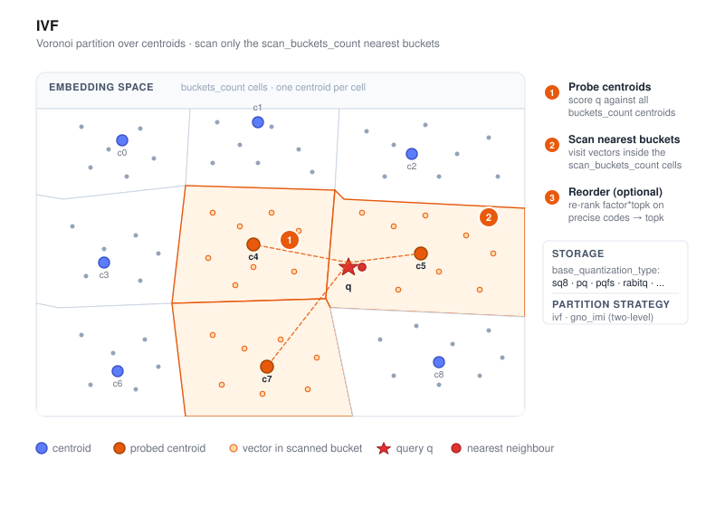
IVF (Inverted File) is VSAG’s partition-based index. It clusters the corpus into
buckets at build time, and at query time only scans the buckets whose centroids are
closest to the query. This turns an O(N) linear scan into O(N · scan_buckets_count
/ buckets_count) with tunable recall/latency.
IVF trades a little recall (compared to graph indexes) for lower memory overhead, higher throughput on batch workloads, and simpler sharding — which makes it a good default when the corpus is large (hundreds of millions or more), when memory is tight, or when queries are naturally parallelizable.
- Source:
src/algorithm/ivf.{h,cpp},src/algorithm/ivf_parameter.{h,cpp} - Example:
examples/cpp/106_index_ivf.cpp
How it works
- Clustering. A sample of the dataset is clustered with k-means (or sampled
randomly,
ivf_train_type: "random") to producebuckets_countcentroids. - Assignment. Every vector is written to the inverted list of its nearest
centroid, stored in the configured coarse quantization (
base_quantization_type). Optionally, a second high-precision copy is kept (use_reorder: true) for post-filter reordering. - Search. For each query, the
scan_buckets_countnearest centroids are computed first, then the vectors in those buckets are scored. When reordering is enabled,factorcontrols how many extra candidates are fetched from the coarse stage before being re-scored with the precise quantizer.
A second partition strategy, GNO-IMI (partition_strategy_type: "gno_imi"),
splits the space into two orthogonal sets of centroids
(first_order_buckets_count × second_order_buckets_count) for even finer
partitioning on very large corpora.
Quick start
#include <vsag/vsag.h>
std::string params = R"({
"dtype": "float32",
"metric_type": "l2",
"dim": 128,
"index_param": {
"buckets_count": 256,
"base_quantization_type": "sq8",
"partition_strategy_type": "ivf",
"ivf_train_type": "kmeans"
}
})";
auto index = vsag::Factory::CreateIndex("ivf", params).value();
// Build.
auto base = vsag::Dataset::Make();
base->NumElements(n)->Dim(128)->Ids(ids)->Float32Vectors(data)->Owner(false);
index->Build(base);
// Search.
auto query = vsag::Dataset::Make();
query->NumElements(1)->Dim(128)->Float32Vectors(q)->Owner(false);
auto result = index->KnnSearch(
query, /*topk=*/10,
R"({"ivf": {"scan_buckets_count": 16}})").value();
Build parameters
Build-time parameters live under index_param. See
Index Parameters for the exhaustive list.
| Parameter | Type | Default | Description |
|---|---|---|---|
partition_strategy_type | string | "ivf" | ivf (single-level) or gno_imi (two-level orthogonal) |
buckets_count | int | 10 | Number of inverted lists (effective for ivf) |
first_order_buckets_count | int | 10 | First-level count (effective for gno_imi) |
second_order_buckets_count | int | 10 | Second-level count (effective for gno_imi) |
ivf_train_type | string | "kmeans" | Centroid training: kmeans or random |
base_quantization_type | string | "fp32" | fp32, fp16, bf16, sq8, sq4, sq8_uniform, sq4_uniform, pq, pqfs, rabitq — see the Quantization chapter for per-quantizer details |
base_pq_dim | int | 1 | PQ subspaces (required with pq / pqfs) |
use_reorder | bool | false | Keep a high-precision copy and re-rank after the coarse scan |
precise_quantization_type | string | "fp32" | Quantizer used for reordering (with use_reorder: true) |
base_io_type | string | "memory_io" | Storage backend for coarse codes |
precise_io_type | string | "block_memory_io" | Storage backend for precise codes (memory_io, block_memory_io, mmap_io, buffer_io, async_io, reader_io) |
precise_file_path | string | "" | File path when the precise IO type is disk-backed |
A rule of thumb for buckets_count is sqrt(N) to 4 * sqrt(N) where N is the
corpus size.
Search parameters
Search-time parameters live under the ivf sub-object:
| Parameter | Type | Default | Description |
|---|---|---|---|
scan_buckets_count | int | — (required) | Number of buckets probed per query. Must be ≤ buckets_count. |
factor | float | 2.0 | With reordering enabled, pulls factor * topk coarse candidates before the precise rescore. |
enable_reorder | bool | true | Set to false to skip the final reorder stage for this request even when the index was built with reorder enabled. |
parallelism | int | 1 | Threads used to scan buckets in parallel for a single query. |
timeout_ms | double | +∞ | Hard cap in milliseconds; partial results are returned once exceeded. |
auto result = index->KnnSearch(
query, topk,
R"({"ivf": {"scan_buckets_count": 32, "factor": 2.0, "parallelism": 4}})").value();
auto fast_result = index->KnnSearch(
query, topk,
R"({"ivf": {"scan_buckets_count": 32, "factor": 2.0, "enable_reorder": false}})").value();
When to use IVF
- Large corpora (hundreds of millions of vectors and above), especially when the working set does not fit comfortably in RAM.
- Batch or high-throughput workloads where per-query latency is less critical than queries-per-second.
- Memory-tight deployments that benefit from aggressive quantization (
sq8,sq4_uniform,pq,pqfs) combined withuse_reorderto recover recall. - Shard-friendly setups: buckets map naturally onto shards or disk blocks.
For latency-sensitive, high-recall workloads on dense embeddings, compare against HGraph first.
See also
SINDI
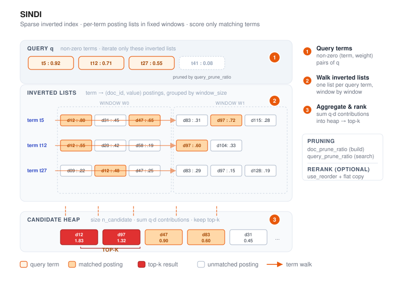
SINDI (Sparse INverted Dense Index) is VSAG’s index for sparse
vectors — the kind produced by BM25, SPLADE, and other learned-sparse encoders.
Unlike the dense indexes (HGraph, IVF), SINDI operates directly on term/value
pairs and is the only VSAG index that accepts dtype: "sparse".
- Source:
src/algorithm/sindi/ - Example:
examples/cpp/109_index_sindi.cpp
How it works
- Window-based inverted lists. Documents are grouped into fixed-size windows
(
window_size). Within each window, an inverted list per term maps a term id to the(doc_id, value)pairs that mention it. - Optional pruning and quantization. During construction,
doc_prune_ratiodrops low-weight terms per document, anduse_quantizationcompresses the term values to shrink memory further. - Scoring. At query time, SINDI iterates the non-zero terms of the query,
walks the corresponding inverted lists in each window, aggregates contributions
into a max-heap of size
n_candidate, and returns the top-k. Whenuse_reorderis enabled, the candidates are re-scored against a high-precision flat copy.
Distance is returned as 1 - inner_product so results sort ascending as in the
dense indexes.
Quick start
#include <vsag/vsag.h>
std::string params = R"({
"dtype": "sparse",
"metric_type": "ip",
"dim": 1024,
"index_param": {
"term_id_limit": 30000,
"window_size": 50000,
"doc_prune_ratio": 0.0,
"use_quantization": false,
"use_reorder": false,
"remap_term_ids": false
}
})";
auto index = vsag::Factory::CreateIndex("sindi", params).value();
// Build a dataset of SparseVector.
auto base = vsag::Dataset::Make();
base->NumElements(n)
->SparseVectors(sparse_vectors) // vsag::SparseVector*
->Ids(ids)
->Owner(false);
index->Build(base);
// Search.
auto query = vsag::Dataset::Make();
query->NumElements(1)->SparseVectors(&query_vec)->Owner(false);
auto result = index->KnnSearch(
query, /*topk=*/10,
R"({"sindi": {"n_candidate": 100}})").value();
Build parameters
Build-time parameters live under index_param. dtype must be "sparse"
and metric_type must be "ip".
| Parameter | Type | Default | Description |
|---|---|---|---|
dim | int | — (required) | Maximum number of non-zero elements per sparse vector. Not the vocabulary size. |
term_id_limit | int | 1000000 | Upper bound on term id values (≥ max term id + 1, up to 50 000 000). |
window_size | int | 50000 | Documents per window (range: 10 000 – 60 000). |
doc_prune_ratio | float | 0.0 | Fraction of lowest-weight terms dropped per doc at build time (0.0 – 0.9). |
use_quantization | bool | false | Quantize stored term values to cut memory; when enabled, uses 8-bit scalar quantization (SQ8). |
use_reorder | bool | false | Keep a high-precision flat copy and rescore results (~2× memory). |
remap_term_ids | bool | false | Remap term IDs before indexing; useful when term IDs are sparse or have large gaps. |
avg_doc_term_length | int | 100 | Hint for memory estimation only. |
dimvsterm_id_limit. For the sparse vector{0:0.1, 2:0.5, 177:0.8},dimis3(three non-zero entries) whileterm_id_limitmust be ≥178(largest term id + 1). Sizingterm_id_limitto your vocabulary is the most common first-time mistake.
Search parameters
Search-time parameters live under the sindi sub-object:
| Parameter | Type | Default | Description |
|---|---|---|---|
n_candidate | int | 0 | Candidate heap size. When 0, defaults to SPARSE_AMPLIFICATION_FACTOR · topk (500×). If set, must satisfy 1 ≤ n_candidate ≤ SPARSE_AMPLIFICATION_FACTOR · topk. |
query_prune_ratio | float | 0.0 | Fraction of lowest-weight query terms skipped (0.0 – 0.9). |
term_prune_ratio | float | 0.0 | Fraction of term-list entries skipped (0.0 – 0.9). |
use_term_lists_heap_insert | bool | true | Term-list-ordered heap insertion; usually faster. |
auto result = index->KnnSearch(
query, topk,
R"({"sindi": {"n_candidate": 200, "query_prune_ratio": 0.1}})").value();
When to use SINDI
- Sparse retrieval with BM25, SPLADE, uniCOIL, or similar learned-sparse encoders.
- Hybrid dense+sparse pipelines where SINDI handles the sparse leg in parallel with HGraph / IVF for dense embeddings.
- Memory-constrained deployments of sparse corpora (
use_quantization: trueroughly halves memory with a small recall loss;use_reorder: truetrades memory for recall).
SINDI does not accept dense vectors and supports only inner-product similarity. Range search and id-based filtering are supported; see the example for usage.
Practical guidance
- For Chinese corpora, we recommend encoding sparse vectors with BGE-M3. For English corpora, SPLADE is the more common default.
- BGE-M3 can emit both sparse and dense vectors. Today SINDI handles the sparse leg, and VSAG plans to support fused sparse+dense scoring in a future release.
- Sparse vectors are not a complete replacement for BM25 full-text retrieval. In practice, three-way recall with BM25 + sparse + dense usually outperforms any two-way combination.
- At the index level, SINDI can also serve BM25-style scoring: use inverse document frequency as the query-side term weight, and use term-frequency-based weights as the document-side term value.
Common configurations
- Flat brute-force sparse index. Keep all non-zero terms in the inverted index
(
doc_prune_ratio: 0.0), disable the flat reranker (use_reorder: false), and disable quantization (use_quantization: false). This is the simplest high-recall baseline. - Pruned high-accuracy index. Prune most low-weight terms during build
(
doc_prune_ratio: 0.4), keep the flat copy for reranking (use_reorder: true), and enable quantization to shrink inverted-list memory (use_quantization: true). This is a common balance between memory and recall. - Very large sparse vocabularies. When term IDs are sparse within the
uint32range, such as hash-based tokenizers, external vocabulary IDs, or vocabularies with large gaps, enableremap_term_ids: true. This avoids managing many empty posting lists and helps stay below theterm_id_limitceiling.
See also
Pyramid
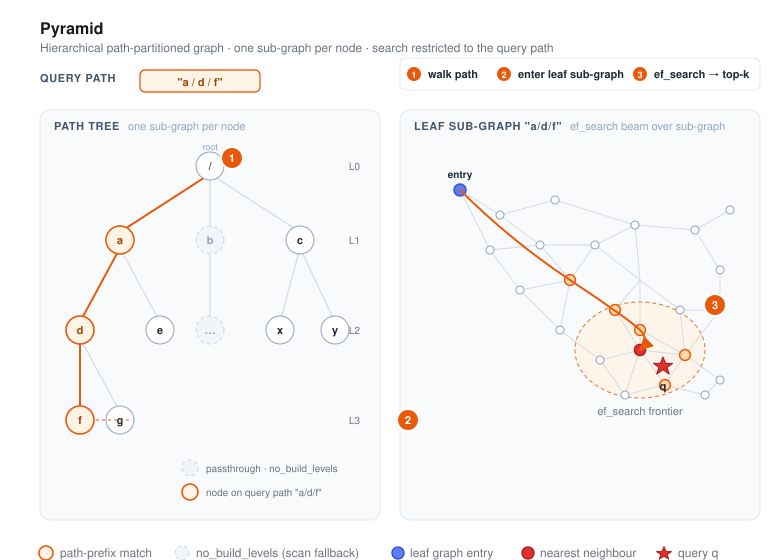
Pyramid is VSAG’s hierarchical, path-partitioned graph index. Every vector is
tagged with a path string such as "a/d/f", and Pyramid builds a graph per node
in that path tree. At query time you supply a path prefix, and Pyramid restricts
the search to the corresponding sub-tree.
This is ideal for multi-tenant deployments, tag-partitioned catalogs, or any scenario where one logical index serves many groups that must not cross-contaminate results.
- Source:
src/algorithm/pyramid.{h,cpp},src/algorithm/pyramid_zparameters.{h,cpp} - Example:
examples/cpp/107_index_pyramid.cpp
How it works
- Path tree. Each vector carries a
pathin addition to its id. Paths use/as separator (e.g."tenant_a/lang_en/topic_news"). Pyramid builds one sub-index for every path prefix seen during build. - Per-level sub-graphs. By default every level gets its own proximity graph.
Use
no_build_levelsto skip levels that are too small or too coarse to benefit from graph indexing — those levels still exist as passthrough containers, but search degrades to a scan. - Graph construction. Each sub-graph is built with the same machinery as
HGraph:
nswinsertion orodescentwithgraph_iter_turn,neighbor_sample_rate, andalphafor pruning. Base vectors are stored inbase_quantization_type; optional reordering keeps a high-precision copy. - Search. Query vectors also carry a path. The search walks down the tree
to the most specific sub-graph matching the query path and runs a graph search
there with
ef_search(andsubindex_ef_searchfor intermediate levels).
Quick start
#include <vsag/vsag.h>
std::string params = R"({
"dtype": "float32",
"metric_type": "l2",
"dim": 128,
"index_param": {
"base_quantization_type": "sq8",
"max_degree": 32,
"alpha": 1.2,
"graph_type": "odescent",
"graph_iter_turn": 15,
"neighbor_sample_rate": 0.2,
"no_build_levels": [0, 1],
"use_reorder": true,
"build_thread_count": 16
}
})";
auto index = vsag::Factory::CreateIndex("pyramid", params).value();
// Build with per-vector paths.
auto base = vsag::Dataset::Make();
base->NumElements(n)
->Dim(128)
->Ids(ids)
->Paths(paths) // std::string* of length n, e.g. "a/d/f"
->Float32Vectors(data)
->Owner(false);
index->Build(base);
// Search restricted to a path prefix.
std::string query_path = "a/d";
auto query = vsag::Dataset::Make();
query->NumElements(1)
->Dim(128)
->Float32Vectors(q)
->Paths(&query_path)
->Owner(false);
auto result = index->KnnSearch(
query, /*topk=*/10,
R"({"pyramid": {"ef_search": 100}})").value();
Build parameters
Build-time parameters live under index_param.
| Parameter | Type | Default | Description |
|---|---|---|---|
base_quantization_type | string | — | Coarse storage quantizer (fp32, fp16, bf16, sq8, sq4, sq8_uniform, sq4_uniform, pq, pqfs, rabitq). See the Quantization chapter for per-quantizer details. |
max_degree | int | 64 | Maximum out-degree per node within a sub-graph. |
graph_type | string | "nsw" | nsw or odescent. |
ef_construction | int | 400 | Candidate list size for nsw builds. |
alpha | float | 1.2 | Pruning factor during graph construction. |
graph_iter_turn | int | — | ODescent iterations (effective with graph_type: "odescent"). |
neighbor_sample_rate | float | — | ODescent neighbor sampling rate. |
no_build_levels | int[] | [] | Tree levels that skip graph construction (0-indexed from the root). |
use_reorder | bool | false | Keep a high-precision copy for rescoring. |
precise_quantization_type | string | "fp32" | Quantizer for reordering. |
index_min_size | int | 0 | Minimum sub-index size; smaller groups fall back to scan. |
support_duplicate | bool | false | Allow duplicate ids. |
build_thread_count | int | 1 | Threads used for parallel build. |
Search parameters
Search-time parameters live under the pyramid sub-object:
| Parameter | Type | Default | Description |
|---|---|---|---|
ef_search | int | 100 | Candidate list size for the leaf-level graph search. |
subindex_ef_search | int | 50 | Candidate list size used when traversing intermediate sub-graphs on the path. |
auto result = index->KnnSearch(
query, topk,
R"({"pyramid": {"ef_search": 200, "subindex_ef_search": 80}})").value();
When to use Pyramid
- Multi-tenant services where each tenant must see results only from its own partition, and you would otherwise maintain one index per tenant.
- Content catalogs with hierarchical tags (language / region / category) where queries always scope to a known prefix.
- Workloads with many small partitions:
no_build_levelsandindex_min_sizelet you skip graph construction for partitions too small to benefit.
If you don’t need path-based scoping, HGraph is simpler and generally faster.
See also
BruteForce
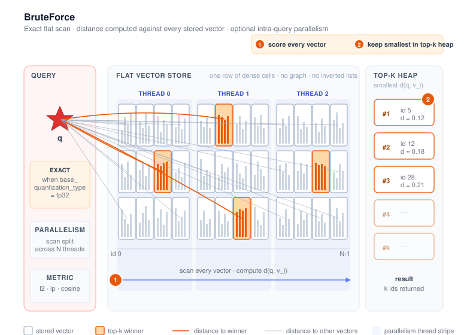
BruteForce is VSAG’s exact, flat index. At query time it scores the query against every vector in the corpus and returns the true top-k — no graph traversal, no inverted lists, no approximation. Its main role is to be the ground-truth baseline that approximate indexes (HGraph, IVF, …) are evaluated against, but it is also a reasonable production choice for small corpora or for workloads where 100% recall is mandatory.
- Source:
src/algorithm/brute_force.{h,cpp} - Example:
examples/cpp/105_index_brute_force.cpp
How it works
- Build. Vectors are stored in a single flat data cell encoded by
base_quantization_type(defaultfp32— i.e. raw). No graph, no clustering, no training is performed for the uncompressed quantizers; PQ/SQ-style quantizers that require training will still run their training pass when used. - Add. New vectors are appended to the flat store. There is no rebalancing or rebuild cost.
- Search. For each query the distance is computed against every stored vector under the
configured
metric_type(l2,ip, orcosine), then a top-k heap returns the closest ids. Search uses SIMD kernels and supports intra-query parallelism — a single query can be split across multiple threads via theparallelismsearch parameter (seeBruteForce::SearchWithRequestinsrc/algorithm/brute_force.cpp).
Because the index keeps every vector verbatim (modulo the chosen quantizer), the result is
exact when base_quantization_type is fp32 and is the standard reference used to compute
ground truth in the eval_performance tool.
Quick start
#include <vsag/vsag.h>
std::string params = R"({
"dtype": "float32",
"metric_type": "l2",
"dim": 128
})";
auto index = vsag::Factory::CreateIndex("brute_force", params).value();
// Build.
auto base = vsag::Dataset::Make();
base->NumElements(n)->Dim(128)->Ids(ids)->Float32Vectors(data)->Owner(false);
index->Build(base);
// Search — no index-specific knobs; pass an empty JSON object (or set `parallelism`).
auto query = vsag::Dataset::Make();
query->NumElements(1)->Dim(128)->Float32Vectors(q)->Owner(false);
auto result = index->KnnSearch(query, /*topk=*/10, "{}").value();
A full runnable program is at
examples/cpp/105_index_brute_force.cpp.
Build parameters
The minimal config consists of the three top-level fields (dtype, metric_type, dim).
For most uses no index_param is needed — that is the form shown in
example 105.
Advanced users can pass an index_param object to enable quantization or storage tweaks:
| Parameter | Type | Default | Description |
|---|---|---|---|
base_quantization_type | string | "fp32" | fp32, fp16, bf16, sq8, sq4, sq8_uniform, sq4_uniform, pq, pqfs, rabitq — see the Quantization chapter for per-quantizer details |
use_attribute_filter | bool | false | Enable attribute-based filtering (see Attribute Filter) |
Note on
store_raw_vector. Thestore_raw_vectorflag is parsed by the sharedInnerIndexParameterbut BruteForce does not consult it when deciding whetherGetRawVectorByIdsis available. On BruteForce, raw-vector retrieval is enabled strictly whenbase_quantization_typeisfp32and either the metric is notcosineor the quantizer is configured to hold the per-vector norms (hold_molds). Settingstore_raw_vector: trueon BruteForce currently has no observable effect on the capability flags — use HGraph or IVF if you need a quantized index that still answersGetRawVectorByIds.
Example with sq8 quantization for memory savings while keeping linear scan semantics:
{
"dtype": "float32",
"metric_type": "ip",
"dim": 128,
"index_param": {
"base_quantization_type": "sq8"
}
}
When base_quantization_type is set to a quantizer that requires training (sq8,
sq8_uniform, sq4_uniform, pq, pqfs, rabitq), Build will run the training pass on
the supplied dataset before adding vectors; the resulting recall is no longer 100%. Only
fp32, fp16, and bf16 skip training and preserve exact distances (modulo numeric
precision).
Search parameters
BruteForce does not expose any index-specific search knobs (no ef, nprobe, etc.), but the
generic IndexSearchParameter fields are honored:
| Parameter | Type | Default | Description |
|---|---|---|---|
parallelism | int | 1 | Split the linear scan of a single query across this many threads in the index’s internal thread pool. It applies to both KnnSearch and RangeSearch. Larger values cut single-query latency on large corpora at the cost of using more cores. Values <= 0 are clamped to 1. |
// Single-threaded scan (default).
auto r1 = index->KnnSearch(query, topk, "{}").value();
// Use 8 threads to scan a single query in parallel.
auto r2 = index->KnnSearch(query, topk, R"({"parallelism": 8})").value();
// RangeSearch uses the same parallelism parameter.
auto r3 = index->RangeSearch(query, radius, R"({"parallelism": 8})").value();
For range search semantics, see Range Search.
Capabilities
BruteForce advertises the following capability flags (see BruteForce::InitFeatures in
src/algorithm/brute_force.cpp):
| Capability | Notes |
|---|---|
SUPPORT_BUILD / SUPPORT_ADD_AFTER_BUILD / SUPPORT_ADD_CONCURRENT | Build once, append later, concurrent inserts. |
SUPPORT_ADD_FROM_EMPTY | Available with non-training quantizers (fp32, fp16, bf16). |
SUPPORT_KNN_SEARCH / SUPPORT_KNN_SEARCH_WITH_ID_FILTER / SUPPORT_SEARCH_CONCURRENT | Standard top-k API and id-list filters, with concurrent search. |
SUPPORT_RANGE_SEARCH / SUPPORT_RANGE_SEARCH_WITH_ID_FILTER | Available with non-training quantizers (fp32, fp16, bf16). |
SUPPORT_DELETE_BY_ID / SUPPORT_DELETE_CONCURRENT | Remove by id is supported and concurrency-safe. |
SUPPORT_CAL_DISTANCE_BY_ID | Distance lookup against stored vectors (non-training quantizers only). |
SUPPORT_GET_RAW_VECTOR_BY_IDS | Available only when base_quantization_type is fp32 and either the metric is not cosine or the underlying quantizer holds molds (hold_molds). Quantized BruteForce indexes do not advertise this flag. |
SUPPORT_CHECK_ID_EXIST / SUPPORT_CLONE / SUPPORT_ESTIMATE_MEMORY / SUPPORT_GET_MEMORY_USAGE | Standard introspection and lifecycle. |
SUPPORT_SERIALIZE_BINARY_SET / SUPPORT_SERIALIZE_FILE / SUPPORT_SERIALIZE_WRITE_FUNC | Full save surface. |
SUPPORT_DESERIALIZE_BINARY_SET / SUPPORT_DESERIALIZE_FILE / SUPPORT_DESERIALIZE_READER_SET | Full load surface. (There is no DESERIALIZE_WRITE_FUNC counterpart — read paths use READER_SET instead.) |
NEED_TRAIN | Set when base_quantization_type is one of sq8, sq4, sq8_uniform, sq4_uniform, pq, pqfs, rabitq. |
Notably not supported by BruteForce: SUPPORT_UPDATE_VECTOR_CONCURRENT,
SUPPORT_UPDATE_ID_CONCURRENT, and SUPPORT_EXPORT_MODEL.
When to use BruteForce
- Recall baseline. Compute the ground truth that approximate indexes are scored against
(this is what the
eval_performancetool does). - Tiny corpora. A few hundred to a few hundred thousand vectors, where the cost of a full scan is acceptable and you want to skip tuning altogether.
- Strict-recall requirements. Use cases that cannot tolerate any approximation error.
- Quantization experiments at small scale. Reuse the same scan pipeline but compare
different
base_quantization_typesettings without the confounding effect of a graph or inverted-list structure.
For anything larger, prefer HGraph (latency-sensitive, high recall) or IVF (throughput-oriented, memory-friendly).
See also
- Creating an Index
- k-Nearest Neighbor Search
- Range Search
- Attribute Filter (Hybrid Search)
- Evaluation Tool
Quantization
Vector quantization is the central memory/recall lever in VSAG. Every index
type stores vectors through a base quantizer (configured by
base_quantization_type), and may keep a second precise quantizer for
re-ranking (precise_quantization_type + use_reorder: true). This chapter
documents each supported quantizer: what it does, what JSON parameters it
takes, when it needs training, which metrics it supports, and when to choose
it.
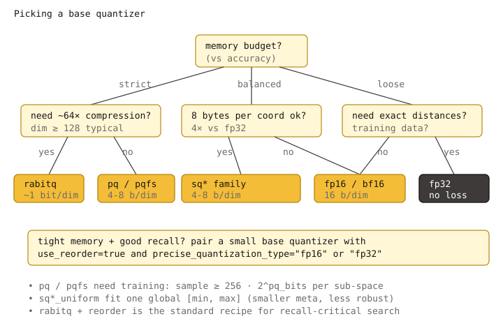
Storage and search pipeline
+---------------------+
raw vector -->| optional transform | (TQ chain: pca / rom / fht / mrle)
+----------+----------+
|
v
+---------------------+
| base quantizer | fp32 / fp16 / bf16 /
| | sq8 / sq4 / sq8_uniform /
| | sq4_uniform / pq / pqfs /
| | rabitq
+----------+----------+
|
v
+-------------------+
| index storage | (HGraph / IVF / Pyramid /
| | BruteForce / SINDI)
+---------+---------+
|
v
graph / list walk
|
+---------------+-----------------+
| |
use_reorder: false use_reorder: true
| |
v v
top-K result +---------------------+
| precise quantizer | re-rank
| (fp32 default; |
| fp16/bf16/sq8 OK) |
+----------+----------+
|
v
top-K result
use_reorder and precise_quantization_type are not specific to any single
quantizer — they apply whenever the index supports reordering (see
HGraph, IVF,
Pyramid).
Supported quantizers at a glance
The factory in src/datacell/flatten_interface.cpp dispatches to
the concrete quantizer based on the JSON type field.
base_quantization_type | Bits / dim (approx.) | Needs training | Lossless | Typical use |
|---|---|---|---|---|
fp32 | 32 | no | yes | Reference / precise reorder store |
fp16 | 16 | no | near-lossless | Half-precision storage; good default for high-dim float vectors |
bf16 | 16 | no | near-lossless | Same memory as fp16, wider dynamic range |
sq8 | 8 | yes | no | General memory-saving baseline |
sq4 | 4 | yes | no | Aggressive memory saving, expect recall drop without reorder |
sq8_uniform | 8 | yes | no | SIMD-friendly SQ8 with global min/max |
sq4_uniform | 4 | yes | no | SIMD-friendly SQ4; supports sq4_uniform_trunc_rate |
pq | ~pq_bits × pq_dim / dim | yes | no | Codebook-based, very compact |
pqfs | 4 × pq_dim / dim | yes | no | PQ FastScan — SIMD-accelerated PQ |
rabitq | 1 (+ optional 7) | yes | no | 1-bit / 1+7-bit binary quantization, strongest compression |
tq | depends on chain | depends on terminal quantizer | no | Transform Quantizer: prepend rotations / PCA before another quantizer |
int8 and sparse are not exposed as general-purpose
base_quantization_type values:
int8is selected automatically whendtype: "int8"is used; it is not a compression mode.sparsebacks the inverted lists of SINDI and is not selectable on dense indexes.
Training requirement
Quantizers marked yes above implement the NEED_TRAIN flag and require
either Build (which trains internally on the input vectors) or an explicit
Train call before Add. See Build and Train
for the full lifecycle.
For HGraph the training data is the base vectors passed to Build; for IVF
the centroids are trained first and the residuals fed to the configured
base quantizer.
Metric compatibility
All quantizers documented here support the three dense metrics
(l2 / ip / cosine). For cosine, the index normalizes vectors before
quantization, so the underlying quantizer never sees the original magnitude.
A few practical notes:
pq/pqfsperform their distance lookup tables per subspace; very lowpq_dim(≤ 4) onip/cosineis more sensitive to anisotropy thanl2.rabitqworks best when input vectors are decorrelated — either turn onrabitq_use_fht/rabitq_pca_dim, or wrap with atqchain like"pca, rom, rabitq".
Choosing a quantizer
A pragmatic decision tree:
- Need exact distances or a precise reorder store? Use
fp32. - Just want to halve memory with negligible recall loss? Use
fp16(orbf16if the data has a wide dynamic range, e.g. unnormalized embeddings). - Want ~4× memory saving and willing to enable reorder? Use
sq8(orsq8_uniformfor better SIMD throughput onl2/ip). - Memory-tight and willing to lose more recall before reorder? Use
sq4_uniform. - High-dim vectors, want strong compression with codebooks? Use
pq, orpqfswhen the platform supports the SIMD path. - Maximum compression (1-bit) and willing to pay reorder cost? Use
rabitq, ideally withrabitq_use_fht: trueor atqchain.
For every lossy quantizer above, enabling use_reorder: true with
precise_quantization_type: "fp32" is the standard way to recover recall at
the cost of extra memory; see the HGraph parameter table
for the exact behavior.
Where quantization is exposed
Not every index exposes every parameter as an external key. As of today:
- HGraph exposes the richest set:
base_quantization_type,precise_quantization_type,use_reorder,base_pq_dim,rabitq_pca_dim,rabitq_bits_per_dim_query,rabitq_bits_per_dim_base,rabitq_version,rabitq_error_rate,rabitq_use_fht,sq4_uniform_trunc_rate,tq_chain(seesrc/algorithm/hgraph.cpp). - IVF, Pyramid, BruteForce expose
base_quantization_typeand the common reorder keys; some tunables (e.g.tq_chain) are wired internally but not exposed as external keys today.
Refer to each index page for its full parameter list.
In this chapter
- FP32 (Baseline)
- Half-Precision (FP16 / BF16)
- Scalar Quantization (SQ4 / SQ8)
- Scalar Uniform (SQ4 / SQ8 Uniform)
- Product Quantization (PQ)
- PQ FastScan
- RaBitQ
- Transform Quantizer (TQ)
FP32 (Baseline)
fp32 stores every coordinate as a 32-bit IEEE-754 float — the same layout
as the input vectors. It is the only fully lossless option in VSAG and
serves as the reference baseline that all other quantizers are compared
against.
Implementation:
src/quantization/fp32_quantizer.cpp, parameter filefp32_quantizer_parameter.cpp.
When to use it
- Reorder / precise store.
precise_quantization_type: "fp32"is the default precise store whenuse_reorder: true; the graph walk uses a cheap base quantizer and the top-K candidates are re-scored exactly against the fp32 copy. - Reference / ground truth. Building an index with
base_quantization_type: "fp32"gives the highest possible recall for that index type and is the standard baseline for benchmarking other quantizers (docs/docs/en/src/resources/eval.md). - Small datasets where memory is not the bottleneck.
- BruteForce with raw-vector retrieval.
SUPPORT_GET_RAW_VECTOR_BY_IDSis only advertised whenbase_quantization_typeisfp32and the metric allows it (src/index/brute_force.cpp).
Memory cost
4 × dim bytes per vector for the codes alone. When fp32 is used as a
precise store on top of a base quantizer, the per-vector cost is
base codes + 4 × dim.
Parameters
fp32 has no quantizer-specific JSON parameters.
{
"dtype": "float32",
"metric_type": "l2",
"dim": 128,
"index_param": {
"base_quantization_type": "fp32",
"max_degree": 32,
"ef_construction": 300
}
}
Training
Not required. fp32 does not set NEED_TRAIN.
Metric compatibility
l2, ip, cosine — all supported with no special handling.
Related pages
- Quantization overview
- HGraph index — see
precise_quantization_type - Memory Management
Half-Precision (FP16 / BF16)
fp16 and bf16 store each coordinate in 16 bits instead of 32, cutting
code memory in half with near-lossless accuracy. They have no
quantizer-specific JSON parameters; the only difference is the bit layout
of the float format itself.
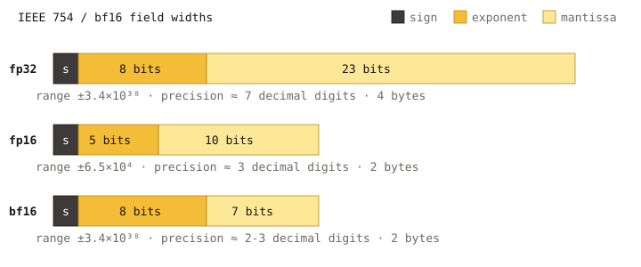
Implementation:
src/quantization/scalar_quantization/half_precision_quantizer.cppwith the type traits athalf_precision_traits.h. Runnable example:examples/cpp/321_index_fp16_hgraph.cpp.
FP16 vs BF16 at a glance
| Format | Sign | Exponent | Mantissa | Effective range | Precision |
|---|---|---|---|---|---|
fp16 | 1 | 5 | 10 | ~±6.55e4 | ~3 decimal digits |
bf16 | 1 | 8 | 7 | same as fp32 (~±3.4e38) | ~2 decimal digits |
Practical implications:
fp16keeps more mantissa bits — better precision for normalized embeddings whose values lie roughly in[-1, 1]. Standard choice for cosine-normalized vectors.bf16keeps the fullfp32exponent range — safer for raw, un-normalized features (e.g. weighted sums, accumulator-like embeddings). Loses some precision compared tofp16on values close to zero.
If you do not know which one to pick, start with fp16 for normalized
embeddings and bf16 for unnormalized or wide-range data.
When to use it
- Default “drop-in” memory saving on top of an
fp32baseline. Recall loss is typically below 1% on standard benchmarks (SIFT, GIST, Glove, sentence embeddings). - As a precise reorder store that is half the size of fp32:
precise_quantization_type: "fp16"or"bf16"withuse_reorder: true. - High-dim float vectors where 32-bit storage is the bottleneck.
Memory cost
2 × dim bytes per vector for the codes alone.
Parameters
Neither fp16 nor bf16 has quantizer-specific JSON parameters.
{
"dtype": "float32",
"metric_type": "l2",
"dim": 768,
"index_param": {
"base_quantization_type": "fp16",
"max_degree": 32,
"ef_construction": 300
}
}
Swap "fp16" for "bf16" to switch formats. The input dtype stays
"float32": the quantizer converts on the fly.
Training
Not required. Neither fp16 nor bf16 sets NEED_TRAIN.
Metric compatibility
l2, ip, cosine — all supported. cosine is implemented by
normalizing inputs before storing them at 16-bit precision.
When not to use it
- When you also need a memory-aggressive base quantizer such as
sq8orpq— those already pull the storage well below 2 bytes/dim. - When you need exact distances (use
fp32).
Related pages
- Quantization overview
- HGraph index —
precise_quantization_typetable - Memory Management
Scalar Quantization (SQ4 / SQ8)
sq8 and sq4 are per-dimension scalar quantizers: each coordinate is
mapped from float32 to an 8-bit (sq8) or 4-bit (sq4) integer using a
per-dimension [min, max] range learned during training. They share the
same implementation, parameterized by bit width, in
src/quantization/scalar_quantization/scalar_quantizer.cpp and
scalar_quantizer_parameter.h.
For SIMD-friendlier variants with a global [min, max], see
Scalar Uniform.
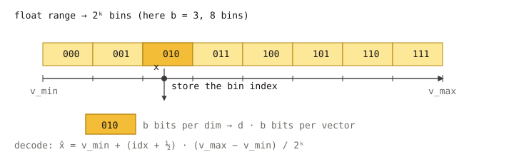
SQ4 vs SQ8 at a glance
| Type | Bits / dim | Memory vs fp32 | Typical accuracy | Notes |
|---|---|---|---|---|
sq8 | 8 | ~1/4 | minor recall loss | General memory-saving baseline |
sq4 | 4 | ~1/8 | noticeable loss without reorder | Aggressive compression; pair with use_reorder: true |
The training is per-dimension min/max, so heavy-tailed coordinates can
waste code bits. If your data is anisotropic, consider either
Scalar Uniform or a Transform Quantizer
chain like "rom, sq8_uniform" to rotate first.
Memory cost (codes only)
sq8:dimbytes per vector.sq4:ceil(dim / 2)bytes per vector.
There is also a small per-dimension range table (8 × dim bytes,
amortized across all vectors).
Parameters
Neither sq8 nor sq4 has quantizer-specific JSON parameters today
(scalar_quantizer_parameter.h:36-58). The bit width is selected by the
type string alone.
{
"dtype": "float32",
"metric_type": "l2",
"dim": 128,
"index_param": {
"base_quantization_type": "sq8",
"max_degree": 32,
"ef_construction": 300,
"use_reorder": true,
"precise_quantization_type": "fp32"
}
}
Replace "sq8" with "sq4" for 4-bit codes.
Training
NEED_TRAIN is set. Training collects per-dimension min / max from a
sample of the input vectors. Calling Build(base) trains internally; on
indexes that require an explicit Train (some IVF flows), call it before
Add. See Build and Train.
Metric compatibility
l2, ip, cosine — all supported. Distances are computed by decoding
the integer codes back to per-dimension scaled floats.
When to choose sq8 vs sq4
sq8: default memory-saving choice for graph indexes (HGraph, Pyramid) when ~4× memory reduction is the target. Recall loss is small enough thatuse_reorderis often optional, but enabling it withprecise_quantization_type: "fp32"is the safest setup.sq4: choose when memory is tight and you can afford a precise reorder store. Almost always pair withuse_reorder: true.- Pick
sq*_uniforminstead when the data is roughly homogeneous across dimensions; the uniform variants have higher SIMD throughput. - For heavy-tailed / anisotropic data, prefer a Transform Quantizer chain that rotates before quantization.
Related pages
Scalar Quantization Uniform (SQ4 / SQ8 Uniform)
sq8_uniform and sq4_uniform are scalar quantizers like
sq8 / sq4, except they learn a single global [min, max]
range that applies to every dimension. This trade-off — slightly less
adaptive per dimension, but a much simpler decode path — unlocks SIMD code
that runs significantly faster on l2 and ip distance kernels and
keeps the code layout tighter.
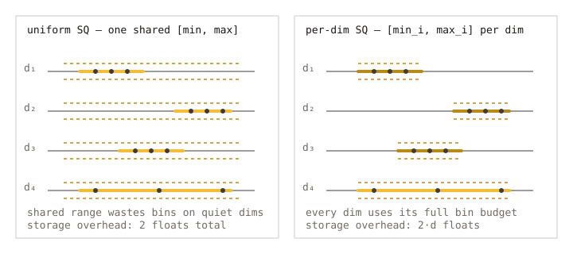
Implementation:
src/quantization/scalar_quantization/sq8_uniform_quantizer.cpp,src/quantization/scalar_quantization/sq4_uniform_quantizer.cpp.
Why it is fast: distances stay in the integer domain
This is the core reason to prefer sq*_uniform over sq* whenever it
applies. Because every dimension shares one (min, max) pair, the affine
decode x = min + code · (max - min) / (2^b - 1) has the same scale and
offset for every coordinate. That has three consequences in the hot path:
- The query is encoded once with the same global
(min, max)into a uint8 (or packed nibble) buffer, inProcessQueryImpl(src/quantization/scalar_quantization/sq8_uniform_quantizer.cpp:179). - Each base vector code is never decoded back to fp32. The kernel
SQ8UniformComputeCodesIP(uint8_t* q, uint8_t* x, dim)/SQ4UniformComputeCodesIP(...)reads both operands as raw integer codes and does the dot product on uint8 / packed nibble lanes using AVX-512 / AMX (or NEON on ARM), one cache-line at a time. There is no per-element fp dequantization in the inner loop. - The single shared scale factor and offset are applied once per
pair, after the integer reduction, to recover the fp distance. Some
metric-specific corrections (a per-vector norm or sum) are also added
outside the loop; see the trailing metadata noted in
sq8_uniform_quantizer.cpp:200and theSQ8UniformComputeCodesIPBatchbatch kernel.
In the per-dimension sq* quantizers, each coordinate has its own
(min_i, max_i) so the kernel either has to multiply by a per-dim scale
table inside the loop or decode at least one operand back to fp first.
Skipping that work is what makes uniform variants significantly faster at
the same recall.
When to use it
- HGraph / IVF / Pyramid hot paths. When the bottleneck is the
base-quantizer distance computation,
sq8_uniform/sq4_uniformare almost always faster than their non-uniform counterparts at comparable recall. - Data with similar coordinate ranges across dimensions. Normalized
embeddings (cosine), or vectors that have already been rotated (e.g.
through a Transform Quantizer
chain like
"rom, sq8_uniform"or"fht, sq8_uniform") are the ideal inputs. - As the terminal quantizer of a
tqchain. The most common chain is"pca, rom, sq8_uniform", see example 501.
SQ4 uniform vs SQ8 uniform
| Type | Bits / dim | Memory vs fp32 | Typical accuracy |
|---|---|---|---|
sq8_uniform | 8 | ~1/4 | minor recall loss |
sq4_uniform | 4 | ~1/8 | needs reorder for high recall |
Parameters
| Key | Type | Default | Applies to | Meaning |
|---|---|---|---|---|
sq4_uniform_trunc_rate | float | 0.05 | sq4_uniform only | Symmetric truncation rate for outliers (src/quantization/scalar_quantization/sq4_uniform_quantizer_parameter.h:39). Higher values clip more extreme coordinates, reducing range loss for the bulk of the data at the cost of clipping the tails. |
sq8_uniform has no quantizer-specific JSON parameters.
When using HGraph, sq4_uniform_trunc_rate is exposed as a top-level key
and mapped into the nested quantization params
(src/algorithm/hgraph.cpp:409-416).
{
"dtype": "float32",
"metric_type": "l2",
"dim": 128,
"index_param": {
"base_quantization_type": "sq4_uniform",
"sq4_uniform_trunc_rate": 0.05,
"max_degree": 32,
"ef_construction": 300,
"use_reorder": true,
"precise_quantization_type": "fp32"
}
}
Set "base_quantization_type": "sq8_uniform" and drop the trunc_rate
key for the 8-bit variant.
Training
NEED_TRAIN is set. Training estimates one global [min, max] across all
dimensions (with optional truncation for sq4_uniform). Build will
perform training internally.
Metric compatibility
l2, ip, cosine — all supported. cosine normalizes before quantizing,
which is also what makes uniform scaling close to optimal for that metric.
Choosing between uniform and non-uniform
- Data is normalized (
cosineor pre-normalizedl2) → uniform. - Data has very heterogeneous per-dimension ranges (e.g. mixed feature
blocks) → start with non-uniform
sq*, or use uniform behind a rotation transformer ("rom, sq*_uniform"). - Throughput matters more than the last bit of recall → uniform.
Related pages
Product Quantization (PQ)
Product Quantization splits a vector into pq_dim equal-sized subvectors
and quantizes each one independently against a small learned codebook of
2^pq_bits centroids. The stored code is then pq_dim × pq_bits bits per
vector — orders of magnitude smaller than fp32. Distance computations
use precomputed lookup tables (LUT) per query.
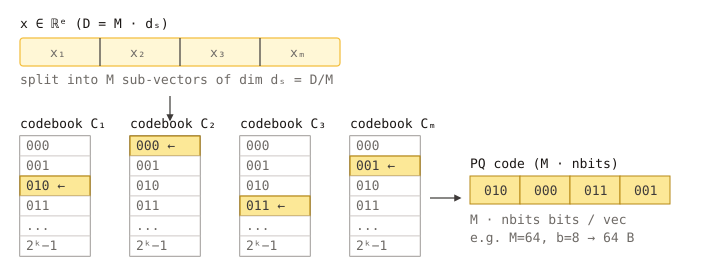
Implementation:
src/quantization/product_quantization/product_quantizer.cpp, parameter fileproduct_quantizer_parameter.cpp.
When to use it
- High-dim float vectors (≥ 256 dim) where
sq8is still too large. - Memory-tight, accuracy-acceptable workloads where ~16× compression vs fp32 is required.
- Combined with
use_reorder: trueand a smallfp16/fp32precise store, PQ is the standard “compressed graph index” recipe at large scale.
For wider SIMD throughput at pq_bits = 4, see PQ FastScan.
Memory cost (codes only)
ceil(pq_dim × pq_bits / 8) bytes per vector for the codes, plus a small
codebook stored once (pq_dim × 2^pq_bits × subspace_dim × 4 bytes).
For typical settings (pq_dim = 32, pq_bits = 8, dim = 128):
- code size =
32 × 8 / 8 = 32bytes per vector (vs128 × 4 = 512for fp32 → 16× smaller).
Parameters
| Key | Type | Default | Meaning |
|---|---|---|---|
pq_dim | int | 1 | Number of subvectors. Must divide dim. Larger values give finer quantization at the cost of more codebooks and larger codes (product_quantizer_parameter.h:38). |
pq_bits | int | 8 | Bits per subvector (1–8). With 8, each subvector is one byte. Most reliable with 8; see PQ FastScan for the 4-bit SIMD variant. |
On HGraph these are exposed as the top-level keys base_pq_dim and
pq_bits (src/algorithm/hgraph.cpp:465-472).
{
"dtype": "float32",
"metric_type": "l2",
"dim": 128,
"index_param": {
"base_quantization_type": "pq",
"base_pq_dim": 32,
"max_degree": 32,
"ef_construction": 300,
"use_reorder": true,
"precise_quantization_type": "fp16"
}
}
Training
NEED_TRAIN is set. Training runs k-means per subspace to learn the
2^pq_bits centroids; this is typically the most expensive training step
of any built-in quantizer. Use a training sample of at least 256 × 2^pq_bits vectors per subspace for stable codebooks; Build(base)
samples from the input automatically.
Metric compatibility
l2, ip, cosine — all supported. Query-time distance is computed via
a per-subspace LUT: for l2 it is squared L2 between the query subvector
and each centroid; for ip it is the dot product. Cosine reduces to ip
on pre-normalized vectors.
Tips
pq_dimshould dividedimevenly. Common ratios aredim/4ordim/8.- Very small
pq_dim(e.g.dim/16) produces very compact codes but loses recall fast; combine with reorder. - For anisotropic data, a rotation transformer in front improves PQ
recall noticeably: use Transform Quantizer
with a chain like
"rom, pq".
Related pages
PQ FastScan
pqfs is a SIMD-accelerated variant of Product Quantization that
fixes pq_bits = 4 and uses a memory layout designed for the AVX-2 /
AVX-512 “FastScan” lookup-table kernel. At the cost of being 4-bit only,
it delivers significantly higher distance-computation throughput.
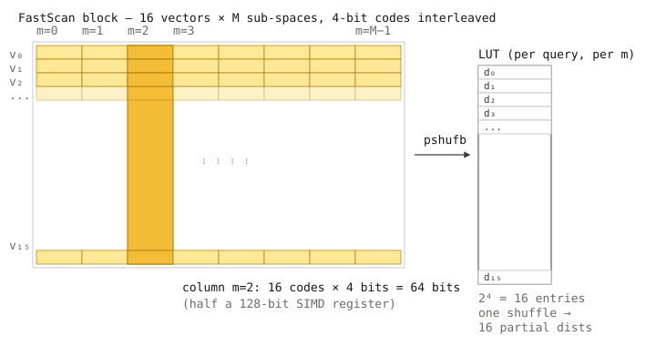
Implementation:
src/quantization/product_quantization/pq_fastscan_quantizer.cpp, parameter filepq_fastscan_quantizer_parameter.cpp.
When to use it
- The platform has AVX-2 (and ideally AVX-512); the FastScan kernel is
the main reason to choose
pqfsoverpq. - Search throughput, not just memory, matters.
- 4-bit subspace codebooks (16 centroids per subvector) are sufficient for your recall target — typically yes when combined with reorder.
If your platform does not advertise the required SIMD width, fall back to
plain pq.
Memory cost (codes only)
ceil(pq_dim / 2) = (pq_dim + 1) / 2 bytes per vector — both even and odd
pq_dim are supported (src/quantization/product_quantization/pq_fastscan_quantizer.cpp:41).
Codebooks: pq_dim × 16 × subspace_dim × 4 bytes — significantly smaller
than 8-bit pq because the codebook has only 16 centroids per subspace.
Parameters
| Key | Type | Default | Meaning |
|---|---|---|---|
pq_dim | int | 1 | Number of subvectors. Must divide dim. pq_bits is fixed to 4 internally and not configurable (pq_fastscan_quantizer_parameter.cpp:28-33). |
Exposed on HGraph as base_pq_dim (src/algorithm/hgraph.cpp:465-472).
{
"dtype": "float32",
"metric_type": "l2",
"dim": 128,
"index_param": {
"base_quantization_type": "pqfs",
"base_pq_dim": 32,
"max_degree": 32,
"ef_construction": 300,
"use_reorder": true,
"precise_quantization_type": "fp16"
}
}
Training
NEED_TRAIN is set. Trains 16-centroid codebooks per subspace; cheaper
than the 256-centroid training in pq.
Metric compatibility
l2, ip, cosine — same coverage as pq. The LUT layout is metric-
specific but transparently handled by the quantizer.
Tips
pq_dimshould be a multiple of the SIMD-batch width the kernel expects (the implementation uses 32 internally on AVX-512). When in doubt, choosepq_dim ∈ {32, 64, 96, 128}.- The benefit over
pqis throughput at the same recall, not memory (4-bit codes are inherently smaller, butpqwithpq_bits = 4would match). - For maximum recall recovery, pair with
use_reorder: trueand anfp16orfp32precise store.
Related pages
RaBitQ
rabitq is VSAG’s binary / low-bit quantizer. In its default mode each
coordinate is encoded with 1 bit, giving the highest compression ratio
of any built-in quantizer. A second mode (rabitq_version = "split_1bit_7bit") splits the representation into a 1-bit base and a
7-bit refinement to recover much of the accuracy at ~8 bits/dim, while
preserving the 1-bit fast distance kernel.
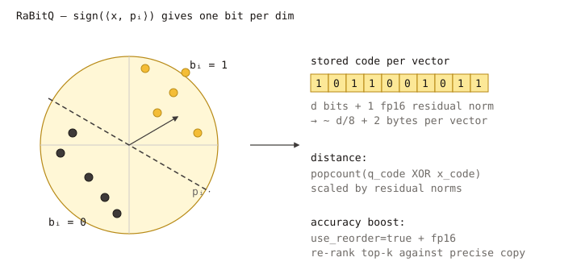
Implementation:
src/quantization/rabitq_quantization/rabitq_quantizer.cpp, parameter filerabitq_quantizer_parameter.cpp. Design notes:docs/rabitq_1xbit_new_repo_guide.md,docs/rabitq_split_1bit_7bit.md.
When to use it
- Maximum compression. 1-bit codes are the smallest possible storage for dense vectors.
- High-dim embeddings where rotation + binarization preserves enough geometry for nearest-neighbor search.
- Combined with a precise reorder store (
fp16/fp32) — the standard recipe is “RaBitQ + reorder”, because the binary distance is noisy on its own.
For best accuracy, also enable rabitq_use_fht: true or wrap with a
Transform Quantizer chain such
as "pca, rom, rabitq".
Memory cost (codes only)
rabitq_bits_per_dim_base = 1:ceil(dim / 8)bytes per vector. Withdim = 768that is 96 bytes (vs 3072 for fp32 → 32× smaller).rabitq_bits_per_dim_base = 8(split-1+7 mode stores additional bits): ~dimbytes per vector.
Parameters
| Key | Type | Default | Meaning |
|---|---|---|---|
pca_dim | int | 0 (= input dim) | Optional PCA preprocessing dimension applied inside RaBitQ. 0 means no PCA reduction (rabitq_quantizer_parameter.cpp:30-32). |
rabitq_bits_per_dim_query | int | 32 | Bits per dimension used to encode the query during search. Allowed values: 4 or 32 (rabitq_quantizer_parameter.cpp:38-43). |
rabitq_bits_per_dim_base | int | 1 | Bits per dimension for the base (stored) codes. Allowed range [1, 8] (rabitq_quantizer_parameter.cpp:45-54). Use 1 for pure 1-bit RaBitQ. |
rabitq_version | string | "standard" | One of "standard" (1-bit) or "split_1bit_7bit". The split version requires rabitq_bits_per_dim_query = 32 (rabitq_quantizer_parameter.cpp:55-67). |
rabitq_error_rate | float | 1.9 | Controls the error budget of the encoder; must be finite and positive (rabitq_quantizer_parameter.cpp:68-75). |
use_fht | bool | false | If true, applies a Fast Hadamard Transform rotation before binarization. Improves accuracy on anisotropic data with cheap O(dim log dim) cost (rabitq_quantizer_parameter.cpp:76-78). |
On HGraph these are exposed as the top-level keys rabitq_pca_dim,
rabitq_bits_per_dim_query, rabitq_bits_per_dim_base, rabitq_version,
rabitq_error_rate, and rabitq_use_fht — the last one is the HGraph
alias for the quantizer’s use_fht key and is rewritten by the index
layer (src/algorithm/hgraph.cpp:473-480, names defined in
src/constants.cpp:142-148). Pyramid exposes the same rabitq_* keys
(src/algorithm/pyramid.cpp:698-699).
{
"dtype": "float32",
"metric_type": "l2",
"dim": 768,
"index_param": {
"base_quantization_type": "rabitq",
"rabitq_use_fht": true,
"rabitq_pca_dim": 0,
"rabitq_bits_per_dim_base": 1,
"rabitq_bits_per_dim_query": 32,
"max_degree": 32,
"ef_construction": 300,
"use_reorder": true,
"precise_quantization_type": "fp32"
}
}
Swap to the higher-accuracy split mode. The split layout is selected by a
combination of two keys — rabitq_version: "split_1bit_7bit" selects the
1+7 RaBitQ encoding, and base_codes_type: "rabitq_split" switches the
storage datacell. Setting rabitq_version alone does not activate the
split datacell path; both keys must be set together (see
docs/rabitq_split_1bit_7bit.md):
{
"base_quantization_type": "rabitq",
"base_codes_type": "rabitq_split",
"rabitq_version": "split_1bit_7bit",
"rabitq_bits_per_dim_base": 8,
"rabitq_bits_per_dim_query": 32,
"rabitq_use_fht": true
}
Training
NEED_TRAIN is set. Training learns the rotation and per-dimension
statistics that make the 1-bit encoding well-balanced. The optional FHT
rotation is fixed (not learned), so it adds no extra training cost; PCA
preprocessing (when pca_dim > 0) trains a projection matrix.
Metric compatibility
l2, ip, cosine — all supported. The binary distance kernel is a
popcount over XORed code words; for ip / cosine the implementation
also tracks a residual norm so the inner-product estimate is unbiased.
Tips
- Always enable reorder unless you have validated that 1-bit recall
is acceptable on your data.
use_reorder: true+precise_quantization_type: "fp32"is the safe default. - Rotate first. For un-normalized data, set
rabitq_use_fht: trueor use atqchain that includesrom/fht. - Split mode for accuracy.
rabitq_version: "split_1bit_7bit"keeps the 1-bit fast path for graph traversal and adds a 7-bit refinement for re-ranking; expect significantly higher recall at ~8× the code size of pure 1-bit.
Related pages
- Transform Quantizer
- HGraph index
- Design notes:
docs/rabitq_1xbit_new_repo_guide.md,docs/rabitq_split_1bit_7bit.md - Quantization overview
Quantization Transform
The Transform Quantizer (base_quantization_type: "tq") chains one or more vector
transformations in front of a final quantizer. Transformations reshape vectors so a downstream
quantizer can encode them more accurately or compactly — for example, rotate vectors so their
energy is spread across dimensions (RaBitQ / SQ benefit greatly), or reduce dimensionality with
PCA before storing them.
Runnable example:
examples/cpp/501_quantization_transform.cpp.
Why a transform layer
A pure quantizer compresses vectors directly. With low-bit quantizers (e.g. sq4,
sq*_uniform, rabitq) accuracy depends heavily on the distribution of vector
coordinates: heavy-tailed or anisotropic dimensions waste code bits. A transform layer
mitigates this:
- Random rotations (
rom,fht) decorrelate coordinates so a uniform/scalar quantizer works better on each axis. - PCA (
pca) reduces dimensions while keeping most of the variance — code size shrinks proportionally. - MRLE (
mrle) is a metric-recoverable low-rank encoding tailored to L2/IP search.
The transform output then feeds a standard quantizer (fp32, sq8, sq8_uniform, rabitq,
…), which actually stores the codes. The whole chain is referred to as tq (Transform
Quantizer).
Quick start
tq is currently exposed as a public, externally configurable quantization type only by
HGraph. HGraph maps the top-level keys tq_chain and rabitq_pca_dim into the nested
base_codes.quantization_params JSON via its external-parameter mapping
(src/algorithm/hgraph.cpp:370-385). IVF, BruteForce, Pyramid and WARP all internally render
a tq_chain field into their inner JSON template, but none of them expose tq_chain (or any
other TQ parameter) in their external mapping today. CheckAndMappingExternalParam rejects
unknown external keys with invalid config param
(src/utils/util_functions.cpp:50-53), so passing tq_chain in the index_param JSON of
those indexes will fail at index construction. Configuring TQ on non-HGraph indexes
therefore requires code-side changes to add the external mapping.
std::string params = R"({
"dtype": "float32",
"metric_type": "l2",
"dim": 128,
"index_param": {
"base_quantization_type": "tq",
"tq_chain": "pca, rom, sq8_uniform",
"rabitq_pca_dim": 64,
"max_degree": 32,
"ef_construction": 300,
"use_reorder": true,
"precise_quantization_type": "fp32"
}
})";
vsag::Resource resource(vsag::Engine::CreateDefaultAllocator(), nullptr);
vsag::Engine engine(&resource);
auto index = engine.CreateIndex("hgraph", params).value();
index->Build(base);
auto result = index->KnnSearch(query, topk, search_params).value();
In the example above, base vectors are first projected from 128 to 64 dimensions (pca),
randomly rotated (rom), then quantized with sq8_uniform. Reordering is enabled, so HGraph
keeps an fp32 precise copy and re-ranks the top candidates returned by the graph search
(include/vsag/index.h; see Memory Management for the storage implications).
tq_chain syntax
tq_chain is a comma-separated string: one or more transformer names followed by exactly
one final quantizer name. Whitespace around tokens is trimmed
(src/quantization/transform_quantization/transform_quantizer_parameter.cpp:53-74).
"<transform1>, <transform2>, ..., <quantizer>"
Examples:
| Chain | Effect |
|---|---|
"rom, fp32" | Random rotation, then store as fp32 (used for tests / sanity baselines). |
"fht, sq8_uniform" | Fast Hadamard rotation, then 8-bit uniform scalar quantization. |
"pca, rom, sq8_uniform" | PCA reduction, random rotation, then 8-bit uniform — the example chain. |
"pca, rom, rabitq" | PCA + rotation feeding the RaBitQ binary quantizer. |
"mrle, fp32" | MRLE projection then store as fp32 (MRLE must be first). |
Constraints (transform_quantizer_parameter.cpp:33-45):
- The chain must contain at least one transformer + one quantizer (length ≥ 2). An empty
or single-token chain raises
INVALID_ARGUMENT. - The last token must be a quantizer that the TQ flatten path can dispatch: one of
fp32,sq8,sq8_uniform,sq4,sq4_uniform,bf16,fp16,pq,pqfs,rabitq(src/datacell/flatten_interface.cpp:126-164).TransformQuantizerParameterparses a slightly wider set of names (it also acceptssparse,int8,tq), but the flatten factory does not have a dispatch branch forint8/tqand explicitly rejectssparsewhenis_transform_quantizeris true (src/datacell/flatten_interface.cpp:166), so using any of those three as the terminal quantizer fails at index construction with an “unsupported quantization type” error. - Any unrecognized transformer name raises
INVALID_ARGUMENT: invalid transformer name(transform_quantizer.h:225-227).
Supported transformers
The factory at src/quantization/transform_quantization/transform_quantizer.h:192-227
recognizes four transformer names today:
| Name | Output dim | Description | Implementation |
|---|---|---|---|
pca | pca_dim if set, else input dim | Principal-Component-Analysis projection; reduces dim while keeping variance. | src/impl/transform/pca_transformer.h |
rom | input dim | Random Orthogonal Matrix; rotates vectors to decorrelate dimensions. | src/impl/transform/random_orthogonal_transformer.h |
fht | input dim | Fast Hadamard / KAC random rotation; cheaper variant of rom. | src/impl/transform/fht_kac_rotate_transformer.h |
mrle | mrle_dim (≤ input dim) | Metric-Recoverable Low-rank Encoding; must be the first transformer in the chain. | src/impl/transform/mrle_transformer.h |
Notes:
mrleplacement is enforced attransform_quantizer.h:155-159andmrle_dim ≤ input_dimattransform_quantizer.h:217-220.- Other strings declared in headers (
residual,normalize) are not wired into the factory and will be rejected.
Transformer parameters
The transformer JSON is read by VectorTransformerParameter::FromJson
(src/impl/transform/vector_transformer_parameter.cpp:22-35):
| Key | Type | Default | Meaning |
|---|---|---|---|
pca_dim | int | 0 (= input dim) | Output dim of the pca transformer. |
mrle_dim | int | 0 (= input dim) | Output dim of the mrle transformer. |
input_dim | int | auto | Auto-populated by the chain — do not set manually. |
HGraph external mapping
When using HGraph, two top-level shortcuts are mapped into the nested quantizer params
(src/algorithm/hgraph.cpp:370-385):
tq_chain→base_codes.quantization_params.tq_chainrabitq_pca_dim→base_codes.quantization_params.pca_dim
The name rabitq_pca_dim predates Transform Quantizer; when the chain includes pca, it
drives the pca transformer’s output dim (it is not RaBitQ-specific). When the chain
ends in rabitq without pca, the same key configures RaBitQ’s own PCA preprocessing
(src/quantization/rabitq_quantization/rabitq_quantizer_parameter.cpp:30).
Reordering and the precise codes store
Transform chains lose some information by design (rotation is lossless, but pca /
sq*_uniform / rabitq are not). Combining tq with reorder — keep a precise (typically
fp32) copy of every vector and re-rank the top candidates — restores accuracy with a
modest memory cost:
use_reorder: truemakes HGraph keep a second flatten store, the precise codes store (src/algorithm/hgraph.cpp:76-79).precise_quantization_typeselects its quantizer (fp32default; can befp16/bf16/sq8if you want to trade memory for accuracy).- At search time the graph walk uses the cheap
tqbase codes, then the top-K are re-scored against the precise codes (hgraph.cpp:978-981and surrounding sites).
use_reorder and precise_quantization_type are not specific to tq — they also apply when
base_quantization_type is sq8, pq, rabitq, etc. See the table in
HGraph index for the full per-index parameter list.
Choosing a chain
A pragmatic rule of thumb:
| Goal | Suggested chain | Notes |
|---|---|---|
| Memory-aggressive, accuracy-restored | "pca, rom, sq8_uniform" + use_reorder: true, precise_quantization_type: "fp32" | Example 501 baseline. |
| Maximum compression | "pca, rom, rabitq" + reorder | 1-bit quantization with rotation cleanup; expect noticeable accuracy loss without reorder. |
| Anisotropic data, no dim reduction | "rom, sq8_uniform" or "fht, sq8_uniform" | Use fht for lower build cost on high dim. |
| Distance-preserving low-rank | "mrle, fp32" | Metric-aware reduction, no further quantization. |
Always benchmark on your own data — the right tradeoff between tq aggressiveness and
use_reorder depends on dataset distribution, target recall, and memory budget.
Compatibility and merge
Two tq configurations are considered compatible only when the chain length, every
transformer name, and the final quantizer all match
(src/quantization/transform_quantization/transform_quantizer_parameter.cpp:99-117). This
matters for serialization round-trips and for any future merge / clone operations across
indexes — keep the chain string stable across builds you intend to combine.
Chain string equality is necessary but not sufficient. The
tq_chaintoken list does not encode transformer parameters such aspca_dim/mrle_dim(read as separate sibling JSON keys atsrc/quantization/transform_quantization/transform_quantizer.h:200-216) or the internal parameters of the terminal quantizer (e.g.pqsubspace count,rabitqrotation seed). These parameters change the effective code dimension and layout, so for two builds to be practically merge-/clone-compatible you must keep the entire transform + quantizer parameter set consistent, not just the chain string.
Related pages
- HGraph index — parameter reference for
base_quantization_type,use_reorder,precise_quantization_type. - Memory Management — memory cost of base + precise stores.
Code Structure
This page gives a quick tour of the VSAG repository layout.
Top-Level Directories
| Path | Contents |
|---|---|
include/vsag/ | Public C++ headers (index.h, engine.h, resource.h, constants.h, …) |
src/ | Core implementation and unit tests |
tests/ | Functional tests (Catch2) |
examples/cpp/ | C++ end-to-end examples |
examples/python/ | Python examples |
python/ | pyvsag packaging |
python_bindings/ | pybind11 bindings |
typescript/ | Node.js / TypeScript bindings (npm package vsag) |
tools/ | Utilities such as eval_performance, analyze_index, check_compatibility |
extern/ | Third-party dependencies (do not modify unless necessary) |
docs/ | Documentation (this site) and blog posts |
cmake/ | CMake modules |
Core Subsystems (inside src/)
- index: concrete index implementations (HNSW, HGraph, DiskANN, IVF, Pyramid, SINDI, …).
- quantization: FP32 / FP16 / BF16 / SQ4 / SQ8 / PQ quantizers with SIMD dispatch.
- graph: shared graph data structures used by HNSW/HGraph/DiskANN.
- storage: binary/reader sets, streaming serialization.
- allocator / thread pool: user-pluggable resource management.
- simd: cascaded SIMD dispatch for x86_64 and AArch64.
Naming Conventions
- Public API:
vsagnamespace, ininclude/vsag/. - Implementation:
src/, same namespace unless the file explicitly needs otherwise. - File extension:
.cpp(not.cc).
Build Artifacts
make debug / make release / make dev produce build trees:
build-debug/build-release/build-dev/
Each contains the test binaries, example executables, and libraries.
Building
This page documents how to build VSAG from source.
Prerequisites
- OS: Ubuntu 20.04+ or CentOS 7+
- Compiler: GCC 9.4.0+ or Clang 13.0.0+
- CMake: 3.18.0+
- clang-format / clang-tidy: exactly version 15 (enforced)
- Optional: HDF5 (for
tools/eval/eval_performance), libaio (for DiskANN async IO), Intel MKL.
We recommend using the official Docker dev image, which already contains the matching toolchain:
docker pull vsaglib/vsag:ubuntu
Makefile Targets
Running make help prints a concise list; the most common targets are:
debug Build debug binaries (no sanitizers; tests/tools/examples OFF by default)
release Build release binaries (tests/tools/examples OFF by default)
dev Developer build: debug + tests + tools + examples
test Build with tests enabled and run unit + functional tests
cov Build with coverage instrumentation enabled
asan Build with AddressSanitizer
tsan Build with ThreadSanitizer
fmt Run clang-format
lint Run clang-tidy
fix-lint Apply clang-tidy fix-its in-place (destructive)
pyvsag Build pyvsag for a specific Python version (PY_VERSION=...)
pyvsag-all Build pyvsag wheels for all supported Python versions
dist-pre-cxx11-abi Build redistributable tarball (pre-C++11 ABI)
dist-cxx11-abi Build redistributable tarball (C++11 ABI)
dist-libcxx Build redistributable tarball (libc++)
clean Remove build trees
Step-by-Step
git clone https://github.com/antgroup/vsag.git
cd vsag
make release
Resulting binaries from a plain make release:
- Library:
build-release/src/libvsag.{a,so}
Examples and tools are not built by default. To include them, either use make dev, or enable
the corresponding Makefile variables (VSAG_ENABLE_EXAMPLES=ON, VSAG_ENABLE_TOOLS=ON) or the
underlying CMake cache options (-DENABLE_EXAMPLES=ON, -DENABLE_TOOLS=ON).
Environment Variables / CMake Options
The Makefile exposes a few VSAG_ENABLE_* environment variables that are translated into CMake
cache options (ENABLE_*). Defaults below reflect a plain make release.
| Makefile env var | CMake option | Default | Effect |
|---|---|---|---|
VSAG_ENABLE_INTEL_MKL | ENABLE_INTEL_MKL | OFF | Use Intel MKL for BLAS kernels |
VSAG_ENABLE_LIBAIO | ENABLE_LIBAIO | ON on Linux | Enable DiskANN async IO via libaio |
VSAG_ENABLE_TOOLS | ENABLE_TOOLS | OFF | Build utilities under tools/ |
VSAG_ENABLE_EXAMPLES | ENABLE_EXAMPLES | OFF | Build sample programs under examples/cpp/ |
| n/a | CMAKE_BUILD_TYPE | driven by Makefile target | Debug / Release |
When invoking CMake directly instead of using make, use the underlying CMake cache option names:
cmake -S . -B build-release -DCMAKE_BUILD_TYPE=Release -DENABLE_INTEL_MKL=ON
cmake --build build-release -j
Python Wheel (pyvsag)
make pyvsag PY_VERSION=3.10
# Or build all supported versions in parallel:
make pyvsag-all
Wheels are emitted under python/dist/.
Distribution Tarballs
For ABI-compatible redistribution use one of:
make dist-pre-cxx11-abi # _GLIBCXX_USE_CXX11_ABI=0
make dist-cxx11-abi # _GLIBCXX_USE_CXX11_ABI=1
make dist-libcxx # libc++ (Clang)
The produced tarballs contain headers, static/shared libraries, and version metadata.
Release Publishing
To publish a new GitHub Release, use the Build and Publish Release workflow in the GitHub
Actions tab and run it manually with:
branch: the branch, tag, or commit SHA to release fromtag_name: the new release tag, such asv1.0.0prerelease: whether to mark the release as a prerelease
For a local dry run of the same packaging script, run:
COMPILE_JOBS=6 bash ./scripts/release/dist.sh
You can increase COMPILE_JOBS if your machine has enough memory, but the default is conservative
to avoid out-of-memory failures in CI runners.
Running Tests
VSAG uses Catch2 for testing, organized in two layers:
- Unit tests live next to source files under
src/. - Functional tests live under
tests/and cover cross-module, end-to-end behavior. Typical files includetest_hnsw.cpp,test_hgraph.cpp,test_diskann.cpp,test_ivf.cpp,test_pyramid.cpp,test_sindi.cpp,test_brute_force.cpp,test_multi_thread.cpp,test_memleak.cpp.
Run the Full Suite
make test configures a Debug build with tests enabled and runs the full unit + functional
suite:
make test
Note: make test does not enable coverage instrumentation. To produce a coverage report, use
make cov — it configures the build with ENABLE_COVERAGE=ON; run the test binaries afterwards
to collect and aggregate coverage data:
make cov
# then run the test binaries, e.g.:
./build-debug/tests/functional_tests
# open build-debug/coverage/index.html
Run a Single Binary
./build-debug/tests/functional_tests "[hgraph]"
./build-debug/tests/functional_tests "[hnsw][concurrent]"
Catch2 supports filtering by name, tag, and wildcards — see --help.
Coverage Expectations
Contributions are expected to keep the C++ line coverage over src/ and include/ at 90% or
higher, as measured by the make cov flow and the CI coverage job.
Memory & Concurrency
test_memleak.cpp: run under AddressSanitizer / LeakSanitizer to verify construction and destruction paths.test_multi_thread.cpp: concurrentBuild/KnnSearch/RangeSearchcorrectness.
Python Tests
make pyvsag PY_VERSION=3.10
cd tests/python && pytest -q
References
tests/directory- Makefile entries:
test,cov,asan
Contributing to VSAG
First of all, thank you for taking the time to contribute to VSAG! Contributors like you are what keep the project alive and growing. 🎉
If this is your first open-source contribution, we recommend walking through the First Contributions tutorial to get familiar with the basic workflow.
The sections below cover what you may want to know before contributing.
Ways to Contribute
- Report bugs. File a bug issue with enough detail to reproduce the problem. If you consider the issue urgent, mention the VSAG team in a comment.
- Propose features. File a feature request issue describing the expected behavior. Discuss the design with the VSAG team and the community before implementation. Once the plan is agreed, follow the contribution flow.
- Implement features or fix bugs. Pick up an open issue and follow the contribution flow. Feel free to ask for clarifications by commenting on the issue and @-mentioning the VSAG team.
Contribution Flow
We use GitHub Flow to collaborate on VSAG.
- Fork the VSAG repository on GitHub.
- Clone your fork locally:
git clone git@github.com:<yourname>/vsag.git. - Create a working branch:
git checkout -b my-topic-branch. - Make changes, run local checks, commit, and push with
git push --set-upstream origin my-topic-branch. - Open a pull request on GitHub.
If you already have a local clone, update it before starting so that merge conflicts are less likely:
git remote add upstream git@github.com:antgroup/vsag.git
git checkout main
git pull upstream main
git checkout -b my-topic-branch
Guidelines
Before opening a pull request, make sure your changes pass local checks and follow the VSAG coding style.
- New features must ship with tests that demonstrate correct behavior and guard against regressions.
- Bug fixes should add a regression test covering the triggering case; a missing test is usually what allowed the bug in the first place.
- Preserve API compatibility when editing code under
include/. - Do not include internal headers (from
src/) in public headers (underinclude/). - When contributing a new feature, remember that the maintenance cost shifts to the VSAG team by default — we evaluate contributions by weighing benefit against long-term maintenance.
Signing Off (DCO)
All contributions to this project must include a
Developer Certificate of Origin (DCO) sign-off. The sign-off
must be included in every commit message in the form
Signed-off-by: {{Full Name}} <{{email address}}> (without the {}). Contributions without a DCO
sign-off cannot be accepted.
This is my commit message
Signed-off-by: Random J Developer <random@developer.example.org>
Git provides a -s flag that appends the trailer automatically:
git commit -s -m "This is my commit message"
For contributions made with the help of an AI coding agent (OpenCode, Claude Code, Codex,
etc.), only human contributors sign off on the DCO; the AI agent must not add its
own Signed-off-by trailer, because only a human can legally certify the DCO. Each human
contributor still adds their own Signed-off-by: trailer as usual. Instead of signing off,
attribute the AI agent with an Assisted-by: trailer that follows the
Linux kernel AI Coding Assistants policy,
in the form Assisted-by: AgentName:ModelVersion. Place the human Signed-off-by: line(s) first,
followed by the Assisted-by: line, for example:
Signed-off-by: Random J Developer <random@developer.example.org>
Assisted-by: OpenCode:claude-opus-4.7
The human submitter is responsible for reviewing AI-generated changes, ensuring license compliance, and taking full responsibility for the contribution.
Commit Messages and PR Labels
- Follow Conventional Commits; common prefixes include
feat:,fix:,docs:,chore:,refactor:,test:,ci:. - If a commit must skip CI, put
[skip ci]at the beginning of the subject line, e.g.[skip ci] docs: fix typo in README. - Every PR must carry two labels (enforced by Mergify, required to merge):
kind/*:kind/bug,kind/feature,kind/improvement, orkind/documentation.version/*: the target release, e.g.version/1.0,version/0.18.
Coding Style
VSAG follows the Google C++ Style Guide with project-specific tweaks covering indentation, naming, and line width. The authoritative configuration lives in the repository:
- clang-format: https://github.com/antgroup/vsag/blob/main/.clang-format
- clang-tidy: https://github.com/antgroup/vsag/blob/main/.clang-tidy
clang-tidyenforces not only naming conventions but also style checks such as magic-number usage.
The Makefile exposes formatting targets; clang-format and clang-tidy (both version 15) must be
installed.
Format code:
make fmt
Run static analysis (fix the reported issues manually):
make lint
Some clang-tidy findings can be auto-fixed:
make fix-lint
Local Testing
Run the full test suite and make sure it passes:
make test
Build and Train
VSAG separates index construction into three stages:
- Train — fit any internal quantizers / partitioners on a sample of the data.
- Add — insert vectors into the index using those trained encoders.
- Build — convenience wrapper that does
TrainthenAddon the same dataset.
Most users only call Build. Two situations are worth knowing about explicitly:
Train+ streamingAdd. When the corpus is large or arrives incrementally, train on a representative sample first and then stream the rest viaAdd(no rebuild). Seeexamples/cpp/311_feature_train.cpp.- ODescent. An alternative graph-construction algorithm for HGraph / Pyramid that builds the
whole neighbor graph in batch instead of insertion-by-insertion. See
examples/cpp/312_feature_odescent.cpp.
The Train API
tl::expected<void, Error> Index::Train(const DatasetPtr& data);
Declared in include/vsag/index.h. Trains the index on a (typically sampled) dataset
without inserting it. Returns tl::expected<void, Error>; check .has_value().
Indexes that perform meaningful training: HGraph, IVF, BruteForce, WARP,
Pyramid. For all of them, Build(data) first trains and then inserts the vectors —
for the default NSW graph it calls the equivalent of Train(data) followed by Add(data),
while for HGraph/Pyramid configured with graph_type: "odescent" the insertion step is a
batch ODescent graph build instead of Add
(see HGraph::build_by_odescent / Pyramid::Build in src/algorithm/).
When you need to call Train explicitly
- The base quantizer requires training. The capability flag
IndexFeature::NEED_TRAINreflects this on HGraph and IVF: HGraph sets it wheneverbase_quantization_typeis not one offp32,fp16,bf16(src/algorithm/hgraph.cpp:1803); IVF always sets it (src/algorithm/ivf.cpp:316) because its centroids must be trained. Pyramid does not currently setNEED_TRAINinInitFeatures()even when its underlying HGraph quantizer would need training, so do not rely onHasFeature(NEED_TRAIN)for Pyramid — callTrainexplicitly when you choose a trainedbase_quantization_type. fp32 / fp16 / bf16 do not require training (you can still callTrain— it is a harmless no-op). - You want to insert vectors in many small batches rather than in one
Buildcall. - You plan to export the trained model and reuse it on another index instance
(via
ExportModel).
Pattern: train once, add in a stream
auto params = R"({
"dtype": "float32",
"metric_type": "l2",
"dim": 128,
"index_param": {
"max_degree": 32,
"ef_construction": 100,
"base_quantization_type": "sq8"
}
})";
auto index_result = vsag::Factory::CreateIndex("hgraph", params);
if (!index_result.has_value()) {
std::cerr << "Create index failed: " << index_result.error().message << std::endl;
return -1;
}
auto index = index_result.value();
// Step 1 — train on the whole base (or a representative sample).
auto train_result = index->Train(base);
if (!train_result.has_value()) {
std::cerr << "Train failed: " << train_result.error().message << std::endl;
return -1;
}
// Step 2 — stream vectors in one at a time (or in small batches).
for (int64_t i = 0; i < num_vectors; ++i) {
auto one = vsag::Dataset::Make();
one->NumElements(1)
->Dim(dim)
->Ids(ids + i)
->Float32Vectors(vectors + i * dim)
->Owner(false);
auto add_result = index->Add(one);
if (!add_result.has_value()) { /* handle */ }
}
The complete program is
examples/cpp/311_feature_train.cpp.
Train vs Build vs Add
| Call | Trains quantizer? | Inserts vectors? | Use it when |
|---|---|---|---|
Build(data) | yes | yes (all of data) | Bulk-load: you have the whole dataset already. |
Train(data) | yes | no | You want to insert vectors later, possibly in batches. |
Add(data) | no (requires prior Train or Build) | yes | Incremental inserts after the index is trained. |
ODescent: an alternative graph builder
By default, HGraph and Pyramid build their graphs NSW-style — every vector is inserted one
at a time and connects to the neighbors found by a search-on-insert (graph_type: "nsw").
ODescent (“Optimized NN-Descent”) is an alternative: it seeds a random k-NN graph over the
entire dataset and then iteratively refines edges using sampled candidate exchanges.
ODescent typically produces graphs with comparable recall to NSW at lower build cost for large batches, because the refinement loop parallelizes cleanly over the data and avoids per-insert search.
ODescent is implemented in src/impl/odescent/odescent_graph_builder.{h,cpp} and is currently
used by HGraph, Pyramid, DiskANN (build path), and internally by HNSW’s Merge
implementation.
Enabling ODescent on HGraph
Add graph_type: "odescent" to the HGraph index_param:
{
"dtype": "float32",
"metric_type": "l2",
"dim": 128,
"index_param": {
"base_quantization_type": "sq8",
"max_degree": 26,
"ef_construction": 100,
"graph_type": "odescent",
"graph_iter_turn": 10,
"neighbor_sample_rate": 0.3,
"alpha": 1.2
}
}
Then just call Build(data) — no other API change. The complete program is
examples/cpp/312_feature_odescent.cpp.
ODescent build parameters
These keys go under index_param alongside the usual HGraph keys:
| Parameter | Default (HGraph) | Description |
|---|---|---|
graph_type | "nsw" | Set to "odescent" to switch on this builder. |
graph_iter_turn | 30 | Number of refinement iterations. Higher → better graph quality, longer build. |
neighbor_sample_rate | 0.2 | Fraction of each node’s neighbors sampled per iteration for candidate exchange. |
alpha | 1.2 | α factor used by the diversity-aware edge pruning step. Larger alpha → sparser, more diverse edges. |
min_in_degree | 1 | Minimum in-degree enforced when repairing the graph after pruning. |
build_block_size | 10000 | Parallelization granularity (vectors per worker block). |
max_degree is inherited from the HGraph top-level setting; you do not need to repeat it under
ODescent. Upper graph layers automatically use half of max_degree.
When to use ODescent vs NSW
- Use ODescent when you have the full dataset up front and care about build throughput on a many-core machine. The batch refinement parallelizes better than insertion-by-insertion.
- Use NSW (the default) when you build incrementally or care about strictly minimal memory during the build, or when you have not measured a build-time problem.
Both choices produce a graph that is searched the same way at query time, so search-side
parameters (ef_search, pq_rerank, …) carry over unchanged.
See also
Range Search
Besides k-nearest-neighbor search (KnnSearch), VSAG also supports range search
(RangeSearch): return every result whose distance to the query vector is less than or equal to
a given radius. It is useful for threshold filtering, de-duplication, and approximate recall
scenarios.
Basic Usage
#include <vsag/vsag.h>
// 1. Create an index (HGraph in this example)
auto index = vsag::Factory::CreateIndex("hgraph", hgraph_build_params).value();
index->Build(dataset);
// 2. Prepare the query
auto query = vsag::Dataset::Make();
query->NumElements(1)->Dim(dim)->Float32Vectors(query_vec)->Owner(false);
// 3. Range search
float radius = 0.5f;
auto result = index->RangeSearch(query, radius, search_params);
if (result.has_value()) {
auto ids = result.value()->GetIds();
auto dists = result.value()->GetDistances();
int64_t n = result.value()->GetDim();
// ...
}
See
examples/cpp/302_feature_range_search.cppfor a complete example.
limited_size Parameter
RangeSearch accepts a limited_size argument that caps the number of returned results:
// Return at most 100 results within the radius
auto result = index->RangeSearch(query, radius, search_params, /*limited_size=*/100);
limited_size = -1(default): return every result inside the radius (unlimited).limited_size > 0: return at most this many results.limited_size = 0: invalid; the implementation explicitly rejects this value (CHECK_ARGUMENT(limited_size != 0, ...)).
Combining with Filter
RangeSearch has the same signature shape as KnnSearch and also accepts a filter (see
examples/cpp/301_feature_filter.cpp). The filter is applied during the search, not afterwards,
which is more efficient than post-filtering.
Support Matrix
| Index type | Supports RangeSearch |
|---|---|
| hnsw | yes |
| hgraph | yes |
| diskann | yes |
| ivf | yes |
| brute_force | yes |
| sindi | yes (sparse vectors) |
Notes
- The distance metric (IP / L2 / cosine) defines the semantics of
radius. Make sure it matches themetric_typespecified at index creation. - If
radiusis very large, the result set can be huge; combine withlimited_sizeto avoid unbounded memory usage. - For graph-based indexes (HNSW / HGraph), runtime parameters like
efshare the same meaning betweenRangeSearchandKnnSearch.
Calculate Distance by ID
Besides KnnSearch and RangeSearch, VSAG exposes APIs that compute the distance between a
query vector and already-indexed vectors referenced by their IDs. This is useful for
re-ranking external candidate sets, validating recall, or implementing custom retrieval
pipelines on top of VSAG.
Two flavors are provided:
CalcDistanceById— single ID, returns one distance.CalDistanceById— batch of IDs, returns aDatasetPtrcontaining distances.
Each flavor has two overloads: one taking a raw const float* (dense vectors) and one taking
a DatasetPtr (works for both dense and sparse vectors).
Note on naming. The batch method is currently spelled
CalDistanceById(missing thecinCalc). This is a historical typo introduced when the batch overload was first added; the two names do not indicate any semantic difference beyond single vs. batch. The current spelling is kept for backward compatibility and is expected to be deprecated in a future release in favor of a correctly spelled name (proposed:CalcDistancesById). New code is encouraged to centralize calls behind a thin wrapper to ease the eventual migration. See issue #2068 for tracking.
API Overview
// Single, dense float pointer.
tl::expected<float, Error>
CalcDistanceById(const float* vector,
int64_t id,
bool calculate_precise_distance = true) const;
// Single, DatasetPtr (dense or sparse).
tl::expected<float, Error>
CalcDistanceById(const DatasetPtr& vector,
int64_t id,
bool calculate_precise_distance = true) const;
// Batch, dense float pointer.
tl::expected<DatasetPtr, Error>
CalDistanceById(const float* query,
const int64_t* ids,
int64_t count,
bool calculate_precise_distance = true) const;
// Batch, DatasetPtr (dense or sparse).
tl::expected<DatasetPtr, Error>
CalDistanceById(const DatasetPtr& query,
const int64_t* ids,
int64_t count,
bool calculate_precise_distance = true) const;
Declarations live in
include/vsag/index.h.
calculate_precise_distance
true(default): the implementation tries to use the high-precision representation of the stored vector (e.g. full-precision float32). For DiskANN this may require reading the original vector from disk and therefore incurs I/O.false: the implementation may use the quantized / approximate representation that the index already keeps in memory. Faster, but the returned distance is approximate.
Return Semantics
- The single-ID overload returns the distance as a
float. - The batch overload returns a
DatasetPtrwhoseGetDistances()array hascountentries aligned with the inputids. A value of-1in that array indicates an invalid ID (e.g. the ID does not exist in the index). - The distance metric (IP / L2 / cosine) follows the
metric_typechosen at index construction; see Metric Semantics.
Basic Usage
#include <vsag/vsag.h>
// 1. Build an HGraph index over float32 vectors.
auto index = engine.CreateIndex("hgraph", hgraph_build_parameters).value();
index->Build(base);
// 2. Single ID.
auto d = index->CalcDistanceById(query_vector.data(), /*id=*/42);
if (d.has_value()) {
std::cout << "distance to id 42 = " << d.value() << std::endl;
}
// 3. Batch IDs.
std::vector<int64_t> ids = { 1, 2, 3, 4, 5 };
auto result = index->CalDistanceById(query_vector.data(), ids.data(), ids.size());
if (result.has_value()) {
const float* dists = result.value()->GetDistances();
for (size_t i = 0; i < ids.size(); ++i) {
if (dists[i] == -1.0f) {
std::cout << ids[i] << " -> invalid ID" << std::endl;
} else {
std::cout << ids[i] << " -> " << dists[i] << std::endl;
}
}
}
A runnable example is provided in
examples/cpp/306_feature_calculate_distance_by_id.cpp.
Sparse Vectors
For sparse-vector indexes (SINDI, SparseIndex), the const float* overloads are not
applicable. Pass the query as a DatasetPtr carrying sparse vectors via
SparseVectors(...), and use the DatasetPtr overloads:
auto query = vsag::Dataset::Make();
query->NumElements(1)->SparseVectors(&sparse_query)->Owner(false);
auto d = index->CalcDistanceById(query, /*id=*/42);
Support Matrix
| Index type | Dense overload (const float*) | DatasetPtr overload | Notes |
|---|---|---|---|
| hgraph | yes | yes | Honors calculate_precise_distance. |
| hnsw | yes | yes (default loop) | |
| ivf | yes | yes (default loop) | |
| brute_force | yes | yes (default loop) | Always precise (no quantization). |
| diskann | yes | yes (default loop) | calculate_precise_distance=true may incur disk I/O. |
| pyramid | yes | yes (default loop) | |
| sindi | no | yes | Sparse vectors only. |
| sparse_index | no | yes | Sparse vectors only. |
Indexes that do not implement the API surface for a given overload return an
UNSUPPORTED_INDEX_OPERATION error.
Notes
- The query dimension (for dense overloads) must match the index dimension.
- The batch overload has a default implementation that loops over single-ID calls; some indexes override it for batch-level optimization.
- Like all VSAG read-only APIs, these methods are safe to call concurrently with other
read-only operations (e.g.
KnnSearch).
Filtered Search
Filtered search restricts the result set of a KnnSearch or RangeSearch to vectors that
satisfy an application-defined predicate. VSAG applies the predicate during index
traversal whenever the underlying algorithm supports it, so you avoid the recall loss and
extra latency of post-filtering top-k results.
This page covers the three id-based filter APIs:
- Bitset filter — a compact bit array indexed by vector id.
- Function-callback filter — a
std::function<bool(int64_t)>. Filterobject — avsag::Filtersubclass that can also expose hints (valid ratio, distribution) to the search algorithm.
For attribute / “hybrid” search where the predicate is an SQL-like expression over typed fields, see Attribute Filter (Hybrid Search). For filtering against an opaque per-vector byte payload during graph traversal, see Extra Info.
Note: this page is unrelated to the Memory + Disk Hybrid Index, which is about DiskANN’s storage layout, not search-time filtering.
Truth-value Conventions
The three APIs disagree on how to spell “exclude this id”. Read this table carefully before mixing them.
| API | Method | Returning true means … |
|---|---|---|
Bitset | Test(id) | id is filtered out |
std::function | f(id) | id is filtered out |
Filter::CheckValid | CheckValid(id) | id is kept |
The bitset and std::function overloads are wrapped internally as a BlackListFilter
(src/impl/filter/black_list_filter.cpp): the bit being set, or the callback returning
true, marks the id as excluded. The Filter::CheckValid API inverts that polarity — true
keeps the id. If you maintain your own deletion bitmap, the bitset/function APIs are a
natural fit. If you want predicate logic with hints, the Filter form is clearer.
Bitset Filter
vsag::Bitset (include/vsag/bitset.h) is a growable, ordinal-indexed bit array.
auto invalid = vsag::Bitset::Make();
for (int64_t i = 0; i < num_vectors; ++i) {
if (ids[i] % 2 == 0) {
invalid->Set(ids[i]); // even ids are excluded
}
}
auto search_params = R"({ "hgraph": { "ef_search": 100 } })";
auto result = index->KnnSearch(query, /*topk=*/10, search_params, invalid).value();
The bitset is indexed by vector id, but ids are masked to their low 32 bits before lookup
(bit_index = id & ROW_ID_MASK in src/impl/filter/black_list_filter.cpp, where
ROW_ID_MASK = 0xFFFFFFFFLL). Two ids that share the same low 32 bits will collide in the
bitset, so keep ids within [0, 2^32) if you rely on this filter; otherwise switch to the
Filter form. The bitset is indexed by id, not by insertion order, so reused/recycled ids
must be handled by your application.
Function-callback Filter
A plain lambda or std::function<bool(int64_t)> works directly. The callback must return
true for ids that should be excluded (it is wrapped as a BlackListFilter):
// Drop even ids: return true to exclude.
std::function<bool(int64_t)> drop_even = [](int64_t id) { return id % 2 == 0; };
auto result = index->KnnSearch(query, 10, search_params, drop_even).value();
This is the easiest way to drop in a small amount of custom logic without subclassing. If
you prefer the “return true to keep” polarity, use the Filter object instead.
Filter Object
The richest API is vsag::Filter (include/vsag/filter.h). Subclass it when the search
algorithm can benefit from hints about the predicate:
class MyFilter : public vsag::Filter {
public:
bool CheckValid(int64_t id) const override {
return id % 2 == 1;
}
// Approximate fraction of ids that pass the predicate. The search uses this to
// size internal candidate buffers; an accurate estimate improves latency and recall.
float ValidRatio() const override { return 0.5F; }
// Hint whether passing ids cluster spatially. NONE means "no correlation"; use
// RELATED_TO_VECTOR if the predicate correlates with vector position (e.g. region tags).
Distribution FilterDistribution() const override { return Distribution::NONE; }
};
auto filter = std::make_shared<MyFilter>();
auto result = index->KnnSearch(query, 10, search_params, filter).value();
Important methods:
| Method | Default | Purpose |
|---|---|---|
CheckValid(int64_t id) | pure virtual | Required. true keeps the id. |
CheckValid(const char* data) | returns true | Used for in-graph filtering against the per-vector byte payload; see Extra Info. |
ValidRatio() | 1.0F | Hint, in [0, 1], of the fraction of ids that pass. |
FilterDistribution() | NONE | NONE or RELATED_TO_VECTOR. |
GetValidIds(...) | empty | Optional whitelist for very selective filters. |
Passing the wrong ValidRatio is not a correctness bug, but a poor estimate may either
inflate latency (overestimate) or hurt recall (underestimate).
Available Overloads
KnnSearch and RangeSearch both expose four filter shapes (include/vsag/index.h):
// KnnSearch
index->KnnSearch(query, topk, params); // no filter
index->KnnSearch(query, topk, params, BitsetPtr invalid);
index->KnnSearch(query, topk, params, std::function<bool(int64_t)> f);
index->KnnSearch(query, topk, params, FilterPtr filter);
// RangeSearch
index->RangeSearch(query, radius, params, limited_size); // no filter
index->RangeSearch(query, radius, params, BitsetPtr invalid, limited_size);
index->RangeSearch(query, radius, params, std::function<bool(int64_t)> f, limited_size);
index->RangeSearch(query, radius, params, FilterPtr filter, limited_size);
limited_size is the maximum number of results returned by RangeSearch:
limited_size < 0: no limit (the default-1).limited_size == 0: rejected explicitly by the API (CHECK_ARGUMENT(limited_size != 0, ...)); pass-1for “no limit”.limited_size > 0: cap the result list at this many entries.
A filtered iterator-style search is also exposed:
vsag::IteratorContext* ctx = nullptr;
index->KnnSearch(query, topk, params, filter, ctx, /*is_last_search=*/false);
// repeat with the same ctx; pass true on the final call to release resources
Index Support Matrix
All index types accept the bitset, function, and FilterPtr overloads — the inner
implementation wraps bitsets and lambdas into a FilterPtr automatically. The columns below
reflect the capability flags each index registers (see include/vsag/index_features.h),
which is what runtime feature checks return.
| Index | _KNN_SEARCH_WITH_ID_FILTER | _RANGE_SEARCH_WITH_ID_FILTER | _KNN_ITERATOR_FILTER_SEARCH |
|---|---|---|---|
| HGraph | Yes | Yes | Yes |
| HNSW | Yes | Yes | Yes |
| IVF | Yes | Yes | — |
| BruteForce | Yes | Yes | — |
| DiskANN | Yes | Yes | — |
| Pyramid | Yes | Yes | — |
| SINDI / WARP | Yes | Yes | — |
For id-based filtering, query support at runtime via
index->CheckFeature(vsag::SUPPORT_KNN_SEARCH_WITH_ID_FILTER),
SUPPORT_RANGE_SEARCH_WITH_ID_FILTER, and SUPPORT_KNN_ITERATOR_FILTER_SEARCH. The flag
SUPPORT_KNN_SEARCH_WITH_EX_FILTER is unrelated — it covers extra-info (byte-payload)
filtering, see Extra Info.
Performance Notes
- The more selective the filter (smaller
ValidRatio), the more candidates the search has to expand. For graph indexes, increaseef_searchproportionally when the filter is very selective; otherwise recall will drop sharply below ~1% selectivity. - HGraph also offers a selectivity-aware brute-force fallback: set
brute_force_threshold(e.g.0.01–0.05) in the search params so that, whenFilter::ValidRatio()is small enough, HGraph automatically skips graph traversal and runs an exact scan over the surviving ids. This is often a better choice than chasing recall by raisingef_searchto very large values. See the HGraph index page and example322_feature_hgraph_brute_force_threshold.cpp. - Bitset filters are fastest because
Test()is a single bit lookup. AFilterobject that performs heavy work inCheckValidwill be called many times per query. - For
RangeSearch, set a finitelimited_sizewhen filters can let through millions of ids — otherwise the result set may grow unbounded. - Filters compose cheaply with Attribute Filter when using
SearchRequest: all enabled filters are combined with logical AND.
Combining Filters via SearchRequest
SearchRequest (include/vsag/search_request.h) is the unified entry point used by
SearchWithRequest. It can carry a bitset filter, a Filter object, and an attribute
expression simultaneously; all are ANDed together.
vsag::SearchRequest req;
req.query_ = query;
req.mode_ = vsag::SearchMode::KNN_SEARCH;
req.topk_ = 10;
req.params_str_ = R"({ "hgraph": { "ef_search": 200 } })";
req.enable_filter_ = true;
req.filter_ = std::make_shared<MyFilter>();
req.enable_bitset_filter_ = true;
req.bitset_filter_ = invalid;
auto result = index->SearchWithRequest(req).value();
See Attribute Filter for the attribute_filter_str_ field.
Examples
- C++:
examples/cpp/301_feature_filter.cpp— bitset, function, andFilter-object styles on HNSW. - C++:
examples/cpp/320_feature_extra_info.cpp— in-graph filtering using theCheckValid(const char*)byte-buffer overload.
Python Status
Python bindings for the filter APIs are not yet exposed; the placeholder at
examples/python/todo_examples/301_feature_filter.py is intentionally empty. Use the C++
API for filtered search today.
Iterator Search
VSAG supports iterator-based search (also called iterative search): instead of asking for
the top-k results in one shot, the caller can request results in successive chunks while VSAG
preserves the internal search state between calls. Each subsequent call resumes from where the
previous one left off and returns new, non-overlapping results.
This is useful when:
- The application implements an external re-ranker or post-filter and wants to keep pulling more candidates until enough survivors are collected.
- Result consumption is lazy / streaming (e.g. UI pagination, server-side cursor).
- The eventual
kis unknown up front and may grow on demand.
How It Works
Iterator search relies on a long-lived IteratorContext object that holds:
- the current candidate heap / visited bitmap, and
- the cursor into the underlying graph or inverted lists.
The first call creates the context (when the pointer is nullptr); follow-up calls reuse it so
the search continues instead of restarting. When the caller is done, the IteratorContext object
itself must be deleted by the caller — that is what releases the iterator’s internal state.
The is_last_search flag is optional: when set to true, the index drains the candidates that
are still buffered inside the context (the “discard heap”) and returns them as the result of that
call. This is useful when the caller wants the long tail of explored-but-not-yet-emitted
candidates; if you don’t need them, you can simply skip the final call and delete the context
directly. Note that the returned set is still capped to k, so if you want all tail candidates,
pass a sufficiently large k on the finalize call.
Basic Usage (SearchParam API)
#include <vsag/vsag.h>
// 1. Build an index (HGraph in this example)
auto index = vsag::Factory::CreateIndex("hgraph", hgraph_build_params).value();
index->Build(dataset);
// 2. Prepare query
auto query = vsag::Dataset::Make();
query->NumElements(1)->Dim(dim)->Float32Vectors(query_vec)->Owner(false);
// 3. Configure SearchParam in iterator mode
nlohmann::json search_parameters = {
{"hgraph", {{"ef_search", 100}}},
};
std::string param_str = search_parameters.dump();
vsag::SearchParam search_param(
/*iter_filter_flag=*/true, // enable iterator mode
param_str,
/*filter=*/nullptr,
/*allocator=*/&allocator,
/*iter_ctx=*/nullptr, // first call: context is created internally
/*last_search_flag=*/false);
// 4. First page
auto page1 = index->KnnSearch(query, /*k=*/10, search_param).value();
// 5. Next page — context carries over, results do not overlap with page1
auto page2 = index->KnnSearch(query, /*k=*/10, search_param).value();
// 6. (Optional) drain the candidates still buffered in the context.
// Skip this call if you don't need the tail candidates; cleanup
// happens through `delete` below either way.
search_param.is_last_search = true;
auto page3 = index->KnnSearch(query, /*k=*/10, search_param).value();
// 7. The caller owns the context object — this is what releases resources.
delete search_param.iter_ctx;
Reference:
examples/cpp/313_feature_search_allocator.cppandexamples/cpp/314_feature_hgraph_search_allocator.cpp.
Alternative: Explicit IteratorContext Argument
The lower-level KnnSearch overload accepts the context pointer directly. This is the form used
by VSAG’s own tests (tests/test_index/test_index_search.cpp) when calling KnnSearch several
times in a row:
vsag::IteratorContext* iter_ctx = nullptr;
auto r1 = index->KnnSearch(query, k1, param_str, filter, iter_ctx, /*is_last_search=*/false);
auto r2 = index->KnnSearch(query, k2, param_str, filter, iter_ctx, /*is_last_search=*/false);
auto r3 = index->KnnSearch(query, k3, param_str, filter, iter_ctx, /*is_last_search=*/false);
delete iter_ctx;
Each call advances iter_ctx; the union of the returned ids is a non-overlapping continuation of
the search ordered by distance. Pass is_last_search=true on a trailing call instead if you want
the index to also emit the candidates still buffered in the context.
SearchRequestAPI.SearchRequestdeclaresenable_iterator_search_,p_iter_ctx_, andis_last_search_fields, but no in-treeSearchWithRequestimplementation currently consults them. Until that wiring lands, use one of the twoKnnSearchforms above to drive iterator search.
Combining With Filters
Iterator search composes with regular filters (label filter, attribute filter, bitset filter). A common use case is “keep iterating until enough results pass my external check”:
size_t needed = 50;
std::vector<int64_t> kept;
vsag::IteratorContext* ctx = nullptr;
while (kept.size() < needed) {
auto page = index->KnnSearch(query, 32, param_str, filter, ctx, /*is_last_search=*/false);
if (!page.has_value() || page.value()->GetDim() == 0) break;
for (int64_t i = 0; i < page.value()->GetDim(); ++i) {
if (external_check(page.value()->GetIds()[i])) {
kept.push_back(page.value()->GetIds()[i]);
}
}
}
// Release the iterator state. No `is_last_search=true` call is required —
// add one only if you also want the candidates still buffered in `ctx`.
delete ctx;
The HNSW graph supports an additional runtime parameter — skip_ratio — that controls how
aggressively the iterator skips already-explored regions during continuation. See the
HNSW section in examples/cpp/313_feature_search_allocator.cpp.
Support Matrix
Indexes that advertise the SUPPORT_KNN_ITERATOR_FILTER_SEARCH feature (queryable via
Index::CheckFeature):
| Index type | Supports iterator search |
|---|---|
| hnsw | yes |
| hgraph | yes |
| ivf | no |
| diskann | no |
| brute_force | no |
| sindi | no |
Always check index->CheckFeature(vsag::SUPPORT_KNN_ITERATOR_FILTER_SEARCH) at runtime before
relying on this capability — coverage may expand in future releases.
Notes and Pitfalls
- Ownership. The
IteratorContextis owned by the caller. Forgetting todeleteit leaks the internal search state (heap, visited bitmap, allocator scratch). Resource release is driven entirely bydelete, not byis_last_search. - Optional last call.
is_last_search = trueis not required for cleanup. Its only effect is to make the index drain the candidates that are still buffered in the context and return them as that call’s result, still capped tok. Use it only when you want those tail candidates, and pick aklarge enough not to truncate them. - Parameter stability. Do not change the query vector, distance metric, or filter between calls that share a context — results are only meaningful when the search state is reused for the same logical query.
kper call. Thekargument applies to each call individually; the returned chunks are disjoint, so the cumulative result size grows byk(or less if the index is exhausted) each iteration.- Thread safety. A single
IteratorContextmust not be used concurrently from multiple threads. Different queries should each have their own context.
Attribute Filter (Hybrid Search)
Attribute filtering — sometimes called hybrid search or filtered ANN with structured
predicates — restricts a KnnSearch / RangeSearch to vectors whose structured tags
satisfy an SQL-like expression. Compared to the id-based filters in
Filtered Search, it lets you express predicates like:
category = "electronics" AND price <= 1000 AND multi_in(tag, "promo|new", "|")
without writing a callback. VSAG builds an attribute inverted index alongside the vector index; the predicate is parsed once and evaluated during graph traversal, so candidates that cannot satisfy the predicate are pruned early.
“Hybrid search” on this page means vector + structured attributes. For DiskANN’s memory + disk index hybrid, see Memory + Disk Hybrid Index.
When to Use Each Filter API
| You want to … | Use |
|---|---|
| Exclude a known set of ids (e.g. tombstones) | Bitset / function filter |
| Run user-defined logic over an id | Filter object |
| Filter on opaque per-vector bytes inside the graph | Extra Info |
| Filter on named, typed fields with AND/OR/IN | This page |
All three can be combined inside a single SearchRequest; they are ANDed together.
Index Support
| Index | Build with use_attribute_filter | SearchWithRequest + attribute string | UpdateAttribute |
|---|---|---|---|
| HGraph | Yes | Yes | Yes |
| IVF | Yes | Yes | Yes |
| BruteForce | Yes | Yes | Yes |
| WARP (sparse) | Yes | Yes | Yes |
| HNSW / DiskANN / SINDI / Pyramid | — | id-based filters only (see Filtered Search) | — |
When use_attribute_filter is enabled, BruteForce currently rejects Remove calls
(re-add the index to delete entries).
Attribute Data Model
Attributes are defined per vector and grouped into an AttributeSet
(include/vsag/attribute.h). Each attribute has:
- a name (string),
- a value type (
AttrValueTypeenum), - a list of values — every field is multi-valued by design, so
IN-style membership works naturally for tag-like fields.
Supported value types:
enum AttrValueType {
INT8 = 5, INT16 = 7, INT32 = 1, INT64 = 3,
UINT8 = 6, UINT16 = 8, UINT32 = 2, UINT64 = 4,
STRING = 9,
};
The schema is auto-discovered from the first build/add: the (name, type) pair seen for each field is locked. Subsequent inserts must match.
Building an AttributeSet
auto* category = new vsag::AttributeValue<std::string>();
category->name_ = "category";
category->GetValue() = { "electronics" };
auto* tags = new vsag::AttributeValue<std::string>();
tags->name_ = "tag";
tags->GetValue() = { "promo", "new" }; // multi-valued
auto* price = new vsag::AttributeValue<int32_t>();
price->name_ = "price";
price->GetValue() = { 899 };
vsag::AttributeSet set;
set.attrs_ = { category, tags, price };
Lifetime of the Attribute* entries depends on the Dataset::Owner(...) flag passed to the
dataset that carries the AttributeSet:
Owner(true)(the default):DatasetImpl’s destructor willdeleteeachAttribute*anddelete[]theAttributeSetarray; do not free them yourself.Owner(false)(used in the example below): the caller retains ownership and must free theAttribute*entries (and theAttributeSetarray, if heap-allocated) afterBuild/Addreturns.
Pick one and stick with it for a given dataset to avoid double-free or leaks.
Building an Index with Attribute Support
Set index_param.use_attribute_filter to true and (optionally) tune the
attribute-inverted-index parameters under attr_params.
std::string build_params = R"(
{
"dtype": "float32",
"metric_type": "l2",
"dim": 128,
"index_param": {
"use_attribute_filter": true,
"attr_params": {
"has_buckets": false
}
}
}
)";
auto index = vsag::Factory::CreateIndex("hgraph", build_params).value();
has_buckets controls how the inverted index lays out posting lists. Defaults differ by
index:
| Index | Default has_buckets |
|---|---|
| HGraph | false |
| IVF | true |
| BruteForce | true |
Leave the defaults unless profiling indicates otherwise.
Attaching Attributes During Build / Add
Dataset::AttributeSets accepts a contiguous array of AttributeSet, one per vector
(include/vsag/dataset.h):
std::vector<vsag::AttributeSet> sets(num_vectors);
for (int64_t i = 0; i < num_vectors; ++i) {
sets[i] = build_attrs_for_row(i);
}
auto base = vsag::Dataset::Make();
base->NumElements(num_vectors)
->Dim(dim)
->Ids(ids)
->Float32Vectors(vectors)
->AttributeSets(sets.data())
->Owner(false);
index->Build(base); // or index->Add(base)
Querying with SearchRequest
Attribute filtering is only exposed via SearchWithRequest
(include/vsag/search_request.h):
vsag::SearchRequest req;
req.query_ = query;
req.mode_ = vsag::SearchMode::KNN_SEARCH;
req.topk_ = 10;
req.params_str_ = R"({ "hgraph": { "ef_search": 200 } })";
req.enable_attribute_filter_ = true;
req.attribute_filter_str_ =
"category = \"electronics\" AND price <= 1000 "
"AND multi_in(tag, \"promo|new\", \"|\")";
auto result = index->SearchWithRequest(req).value();
for (int64_t i = 0; i < result->GetDim(); ++i) {
std::cout << result->GetIds()[i] << " " << result->GetDistances()[i] << "\n";
}
You can simultaneously enable enable_filter_ (with a FilterPtr) and
enable_bitset_filter_ (with a BitsetPtr); all enabled filters are combined with
AND.
Filter Expression Language
The expression grammar is defined in src/attr/grammar/FC.g4. It is small but covers the
common needs of structured filtering.
Logical operators
| Form | Aliases |
|---|---|
| AND | AND, and, && |
| OR | OR, or, || |
| NOT | !(expr) |
| Grouping | (...) |
NOT is only available in the prefixed form !(...).
Comparison operators
For numeric fields: =, !=, >, <, >=, <=.
For string fields: only = and !=.
Numeric comparands may include arithmetic (+, -, *, /):
(price - discount) <= 100
List membership
Two forms are supported. They use the same set of keywords (IN and NOT_IN, with the
aliases listed below) but different argument shapes.
Infix bracket form — use this with a literal list:
id IN [1, 2, 3, 4]
category NOT_IN ["electronics", "clothing"]
The list members must be INTEGER literals or double-quoted strings. Single quotes are
not accepted by the grammar.
Function pipe form — use this when the candidate values are produced by string
concatenation upstream. The second argument must be a single pipe-delimited string literal,
and the third (optional) argument is the separator and must be "|":
multi_in(category, "electronics|clothing", "|")
multi_notin(uid, "1961|8669|9090", "|")
Bracket lists are not accepted in the function form (multi_in(field, [...]) is a
syntax error). Pipe strings are not accepted in the infix form.
Aliases for both forms: IN / in / MULTI_IN / multi_in,
NOT_IN / not_in / NOTIN / notin / MULTI_NOTIN / multi_notin.
A field with multiple values matches the membership predicate if any of its values is contained in the literal list.
Literals
| Kind | Examples |
|---|---|
| Integer | 42, -7 |
| Float | 3.14, 1.5e-3 |
| String | "electronics", "new" (always double-quoted) |
| Quoted integer (string) | "123" (treated as a string in multi_in) |
Identifiers match [a-zA-Z_][a-zA-Z0-9_]* and may contain dots
(namespace.field is one identifier).
Comments start with # and run to end of line.
Examples
# simple equality
category = "electronics"
# numeric range, multi-valued field
price >= 100 AND price <= 1000 AND tag IN ["promo", "new"]
# negation
!(status = "archived") AND multi_notin(region, "us-east|us-west", "|")
# arithmetic on the left side of the comparison
(end_ts - start_ts) > 3600 AND charge_type = 5
Updating Attributes
Use index->UpdateAttribute(id, new_attrs) (or the overload that also takes the previous
attribute set for cheaper inverted-index updates):
vsag::AttributeSet new_attrs = build_new_attrs();
auto status = index->UpdateAttribute(/*id=*/123, new_attrs);
The vector itself is unchanged; only the inverted index is updated. Subsequent searches see the new attribute values immediately.
Performance Notes
- The attribute inverted index adds memory roughly proportional to the average number of values per field times the number of vectors. For string fields, the dictionary cost is proportional to the number of distinct values.
- Highly selective predicates accelerate search (more candidates pruned early); very unselective predicates approach the cost of unfiltered search plus a constant overhead.
- For graph indexes, increase
ef_searchwhen predicates are very selective so the search has enough surviving candidates to converge. - Use
multi_in/INinstead of longORchains; the inverted index can resolve list membership in a single pass.
Tests as Reference
The most complete usage sample lives in the test suite:
tests/test_index.cpp—TestIndex::TestWithAttr(build attributes, search viaSearchRequest, thenUpdateAttributeand re-search).tests/fixtures/data/vector_generator.cpp—generate_attributesshows how to constructAttributeSet*arrays of mixed types programmatically.src/attr/expression_visitor_test.cpp— exhaustive grammar coverage; useful as a working reference for the DSL.
Python Status
The attribute / hybrid-search API is currently C++-only. There is no pyvsag binding yet,
and the placeholder example at examples/python/todo_examples/301_feature_filter.py is
intentionally empty.
Serialization
VSAG indexes can be serialized and deserialized through several interfaces, supporting persistence, cross-process sharing, and distributed deployment.
Three Interfaces
1. BinarySet / ReaderSet
The most flexible option. The index is split into named binary segments, and the caller owns the storage medium (object store, KV, sharded uploads, etc.).
// Save
vsag::BinarySet bs = index->Serialize().value();
for (const auto& key : bs.GetKeys()) {
auto binary = bs.Get(key);
// Write to storage
}
// Load
vsag::BinarySet bs_loaded;
// Populate bs_loaded by reading each key from storage.
auto empty = vsag::Factory::CreateIndex("hgraph", build_params).value();
empty->Deserialize(bs_loaded);
ReaderSet is similar to BinarySet but uses a user-supplied Reader to read on demand, which
avoids loading everything at once. This is useful for memory-constrained or partial-deserialization
scenarios (for example, the on-disk portion of DiskANN).
2. File Streams (std::ostream / std::istream)
The simplest option — serialize the whole index to a file or memory stream:
std::ofstream out("index.bin", std::ios::binary);
index->Serialize(out);
std::ifstream in("index.bin", std::ios::binary);
empty->Deserialize(in);
3. Custom Write Function (WriteFuncType)
For streaming or chunked backends, supply a write callback:
index->Serialize([&](const void* buf, uint64_t offset, uint64_t size) {
// Write [buf, buf+size) at offset
});
Notes
Deserializerequires an empty target index whose configuration (dim,metric_type, etc.) matches the one used at serialization time.- When upgrading across major versions, check the compatibility notes in the release notes.
- DiskANN’s disk files are managed independently;
Serializereturns the in-memory metadata side. - References:
examples/cpp/318_feature_tune.cpp,examples/cpp/401_persistent_kv.cpp,examples/cpp/402_persistent_streaming.cpp.
Memory Management
VSAG uses custom Allocator and Resource objects on its hot paths, allowing users to:
- plug in existing in-house memory pools;
- measure and cap index memory usage;
- route allocations precisely in multi-process or NUMA environments.
Custom Allocator
class MyAllocator : public vsag::Allocator {
public:
std::string Name() override { return "my_allocator"; }
void* Allocate(size_t size) override;
void Deallocate(void* p) override;
void* Reallocate(void* p, size_t size) override;
// ...
};
auto allocator = std::make_shared<MyAllocator>();
auto resource = std::make_shared<vsag::Resource>(allocator, /*thread_pool=*/nullptr);
auto engine = vsag::Engine(resource);
auto index = engine.CreateIndex("hgraph", build_params).value();
See examples/cpp/201_custom_allocator.cpp for a full example.
Per-Search Temporary Allocator
KnnSearch / RangeSearch can take a per-call Allocator that lives in a thread-local arena,
avoiding contention with the global heap:
vsag::SearchParam search_param;
search_param.allocator = thread_local_allocator.get();
auto result = index->KnnSearch(query, k, search_param);
See examples/cpp/313_feature_search_allocator.cpp and
examples/cpp/314_feature_hgraph_search_allocator.cpp.
Estimating and Querying Memory
EstimateMemory(data_num)
Index::EstimateMemory(data_num) returns a byte-level estimate of the memory the index will
occupy once data_num vectors have been inserted. It is computed from the build parameters
(dimension, quantization, max_degree, etc.) without allocating any vector storage, so it is
safe to call on an empty index and is the recommended way to size a node before ingest:
if (index->CheckFeature(vsag::SUPPORT_ESTIMATE_MEMORY)) {
uint64_t estimated = index->EstimateMemory(1'000'000); // bytes
}
See examples/cpp/308_feature_estimate_memory.cpp for a full run.
GetMemoryUsage()
Index::GetMemoryUsage() returns the current memory footprint of an index in bytes:
int64_t bytes = index->GetMemoryUsage();
Properties:
- Implemented by every index type, but only indexes that advertise
vsag::SUPPORT_GET_MEMORY_USAGEviaCheckFeatureare formally guaranteed to return a meaningful value. HGraph, IVF, BruteForce, Pyramid and WARP set the flag (seesrc/algorithm/{hgraph,ivf,brute_force,pyramid,warp}.cpp); SINDI implements the call (since the method is pure-virtual onIndex) but does not currently set the feature flag, so treat its value as informational only. - Thread-safe; can be polled concurrently with searches.
- Latency is on the order of microseconds — suitable for production-grade real-time monitoring loops.
- Reports memory attributable to the index itself (vectors, graph, quantizer state). The number
is typically smaller than the resident set size observed at the OS level, which also includes
allocator overhead, scratch buffers, and any data held outside the index (e.g. user-owned input
vectors). For SINDI in particular, call
GetMemoryUsage()after the build completes to get a representative value.
See examples/cpp/319_feature_get_memory_usage.cpp for a runnable example, including a helper
that compares the interface value with the process resident size.
Capability Flags
| Flag | Meaning |
|---|---|
vsag::SUPPORT_ESTIMATE_MEMORY | EstimateMemory(data_num) is available. |
vsag::SUPPORT_GET_MEMORY_USAGE | GetMemoryUsage() is available. |
Both flags can be checked via index->CheckFeature(...) — see
Index Introspection.
Thread Pool
Resource also accepts a user-supplied ThreadPool, which combined with a custom allocator gives
full control over parallelism and resource ownership. See
examples/cpp/203_custom_thread_pool.cpp.
Notes
- A custom allocator must be thread-safe.
- The allocator’s lifetime must outlive any index and result object referencing it.
- If nothing is configured, VSAG falls back to a default
malloc-based allocator.
Per-Search Allocator
VSAG exposes a per-call Allocator hook that is separate from the index’s own allocator,
intended for use cases such as:
- isolating per-query memory from the index’s long-lived heap;
- backing high-concurrency online traffic with a thread-local arena that has no atomic contention with neighbours;
- accounting or capping each query’s footprint independently of the index.
The hook is exposed through two surfaces — SearchRequest::search_allocator_ (recommended) and
the legacy SearchParam::allocator — but how much of a search actually consumes that
allocator depends on the index and the entry point. As of today, only HGraph::SearchWithRequest
plumbs search_allocator_ end-to-end (scratch buffers and the result Dataset); the other
SearchWithRequest implementations (IVF / BruteForce / WARP) use it for some scratch
state but still allocate the result Dataset from the index’s own allocator. See
Relationship to the Index’s Allocator below for the
per-surface breakdown.
Scope. The allocator hook is currently exposed through
KnnSearch(SearchParamoverload) andSearchWithRequest.RangeSearchdoes not have an allocator-bearing overload at this time, andSearchRequest::search_allocator_is not consulted by the range-search path.
Recommended API — SearchRequest::search_allocator_
#include "vsag/search_request.h"
vsag::SearchRequest req;
req.query_ = query;
req.mode_ = vsag::SearchMode::KNN_SEARCH;
req.topk_ = 10;
req.params_str_ = R"({"hgraph":{"ef_search":100}})";
req.search_allocator_ = thread_local_allocator.get(); // optional, may stay nullptr
auto result = index->SearchWithRequest(req).value();
SearchRequest (include/vsag/search_request.h) is the recommended, non-deprecated way to drive
a single search call. The search_allocator_ field is optional — when left at nullptr, the
index falls back to the allocator that was attached to its owning Resource.
Availability.
Index::SearchWithRequesthas a default implementation that returns an unsupported error. Only HGraph, IVF, BruteForce and WARP implement it today (src/algorithm/{hgraph,ivf,brute_force,warp}.cpp). For indexes that do not yet overrideSearchWithRequest(HNSW, DiskANN, SINDI, Pyramid, SparseIndex), use the legacySearchParampath described below.
Legacy API — SearchParam::allocator (deprecated)
#include "vsag/search_param.h"
nlohmann::json search_params = {{"hgraph", {{"ef_search", 100}}}};
std::string param_str = search_params.dump();
vsag::SearchParam search_param(/*iter_filter=*/false,
param_str,
/*filter=*/nullptr,
/*allocator=*/thread_local_allocator.get());
auto result = index->KnnSearch(query, /*k=*/10, search_param).value();
SearchParam is documented as deprecated in include/vsag/search_param.h (“Use SearchRequest
instead”) and remains only for source compatibility. The wording is currently a doc comment —
the struct itself does not carry the C++ [[deprecated]] attribute, so the compiler will not
emit deprecation warnings, but new code should still target SearchRequest /
SearchWithRequest on indexes that support it. The example
examples/cpp/313_feature_search_allocator.cpp (HNSW) and
examples/cpp/314_feature_hgraph_search_allocator.cpp (HGraph) demonstrate the legacy form.
Result Ownership
The result-Dataset ownership contract depends on which index implements SearchWithRequest:
- HGraph is the only index that currently plumbs
request.search_allocator_intocreate_fast_dataset(seesrc/algorithm/hgraph.cpp—ctx.alloc = request.search_allocator_). The resultingDatasetis markedOwner(true, allocator)and its destructor will callallocator->Deallocate(...)onids/distancesautomatically. - IVF / BruteForce / WARP currently construct the result
Datasetviacreate_fast_dataset(..., allocator_)— i.e. the index’s own allocator (src/algorithm/ivf.cpp,src/algorithm/brute_force.cpp,src/algorithm/warp.cpp).request.search_allocator_is only consulted for scratch state on those paths today; the result buffers are owned by the index’s allocator. Treat the resultDataset’s lifetime as tied to the index’s allocator on these indexes.
What this means in practice:
- Do not manually
Deallocatethe result buffers. Letting theDatasetgo out of scope is enough; double-freeing through both manualDeallocate(...)and the destructor is undefined behaviour. - Whichever allocator owns the result must outlive that result
Dataset. For HGraph that is the per-search allocator; for IVF / BruteForce / WARP that is the index allocator (always alive while the index is alive). examples/cpp/314_feature_hgraph_search_allocator.cppcurrently makes the deallocation explicit. That pattern is left over from earlier API iterations; new code that targets the current owner-tracking behaviour should rely on theDatasetdestructor instead.
The simplest safe pattern is “one allocator per thread, reset between batches”:
ArenaAllocator arena; // thread-local, big enough for one batch
for (const auto& q : batch) {
vsag::SearchRequest req;
req.query_ = q;
req.topk_ = topk;
req.params_str_ = params;
req.search_allocator_ = &arena;
auto result = index->SearchWithRequest(req).value();
consume(result);
// result Dataset destroyed here; arena frees ids/distances via its Deallocate.
}
arena.reset(); // drops every per-query buffer at once
Relationship to the Index’s Allocator
| Surface | Allocator used |
|---|---|
| Index build, insert, persistent state | Resource’s allocator (or default if none was passed). |
HGraph::SearchWithRequest scratch + result Dataset | search_allocator_ if set, otherwise the Resource’s allocator. HGraph is the only index that plumbs search_allocator_ into the result. |
IVF / BruteForce / WARP SearchWithRequest result Dataset | Always the index’s own allocator (allocator_). search_allocator_ is not consulted for result buffers today. |
IVF / BruteForce / WARP SearchWithRequest scratch state | Uses search_allocator_ for some intermediate buffers when set; otherwise the index’s allocator. |
KnnSearch(query, k, SearchParam) (legacy) | Uses SearchParam::allocator if set, on indexes whose KnnSearch honors it (e.g. HNSW, HGraph examples). Otherwise the Resource allocator. |
KnnSearch(query, k, parameters_str) | No per-search allocator hook — uses the Resource allocator. |
RangeSearch(...) (all forms) | Uses the Resource allocator; no per-search allocator hook. |
Setting a per-search allocator never affects the index’s permanent data structures. It only narrows the lifetime of memory touched by one specific search call, and only to the extent that the index/entry point actually consumes it (see the per-row notes above).
Requirements
- The allocator must be thread-safe only if it is shared across threads. A thread-local arena does not need internal synchronization.
- The allocator’s lifetime must outlive every result
Datasetit produced. Reallocate(nullptr, size)must behave likeAllocate(size). VSAG relies on this contract for its internal containers.
Runnable Examples
examples/cpp/313_feature_search_allocator.cpp— HNSW + custom allocator (legacySearchParam).examples/cpp/314_feature_hgraph_search_allocator.cpp— HGraph (sq8) + custom allocator.
See also Memory Management for the index-level Allocator / Resource setup, and
Filtered Search for combining a per-search allocator with custom filtering
in a SearchRequest.
Index Introspection
VSAG indexes expose three families of introspection APIs that let callers discover what an index can do, compute distances against existing vectors, and read back structured information about the built index without re-running a search:
CheckFeature(IndexFeature)— runtime capability discovery.CalDistanceById(...)— distance from a query to specific stored ids.GetIndexDetailInfos()/GetDetailDataByName(...)— structured per-index detail data.
These APIs are read-only and safe to call concurrently with search.
Capability Discovery — CheckFeature
index->CheckFeature(vsag::SUPPORT_*) returns true when the underlying index implementation
advertises the given feature. Use it whenever a code path takes an IndexPtr of unknown concrete
type (e.g. user-supplied configuration, polymorphic store):
if (index->CheckFeature(vsag::SUPPORT_ESTIMATE_MEMORY)) {
uint64_t est = index->EstimateMemory(100'000);
}
if (not index->CheckFeature(vsag::SUPPORT_DELETE_BY_ID)) {
// Skip / fall back to remove + re-add via a different index.
}
Feature flags cover almost every optional surface in the library: build / add /
serialize variants, concurrent combinations, metric types, attribute and extra-info filters,
Clone, ExportModel, Tune, and more. See include/vsag/index_features.h for the full
enumeration.
A runnable example is available at examples/cpp/307_feature_check_features.cpp.
Distances to Existing Ids — CalDistanceById
CalDistanceById computes the distance between a query and one or more vectors that are
already stored in the index, without running a search. This is useful for re-ranking, A/B
evaluation, ground-truth checks, or computing pairwise distances to a known shortlist.
Two overloads are provided:
// Dense vector indexes (HGraph, BruteForce, IVF, DiskANN, HNSW)
auto r = index->CalDistanceById(query_ptr, ids, count, /*calculate_precise_distance=*/true);
// Sparse vector indexes (SINDI, SparseIndex) — wrap the query in a Dataset
auto query_ds = vsag::Dataset::Make();
query_ds->NumElements(1)->SparseVectors(/* ... */);
auto r = index->CalDistanceById(query_ds, ids, count, /*calculate_precise_distance=*/true);
The result Dataset holds count distances in GetDistances(). A value of -1.0F means the
corresponding id was invalid (not present in the index).
calculate_precise_distance
The trailing bool argument trades precision for latency:
| Value | Behavior |
|---|---|
true (default) | Use the full-precision vector representation. May incur disk I/O on hybrid memory-disk indexes. |
false | Use the quantized / approximate representation cached for search. Faster, no I/O. |
A runnable example is available at examples/cpp/306_feature_calculate_distance_by_id.cpp.
Detail Data — GetIndexDetailInfos / GetDetailDataByName
GetIndexDetailInfos() returns a list of IndexDetailInfo records that describe every named
piece of structured data the index can expose. Each record carries a name, a description, and
a type enum that selects the right typed accessor on DetailData.
Support is index-dependent — there is no dedicated SUPPORT_* flag for these two APIs. The
Index base class throws std::runtime_error("Index doesn't support ...") by default
(GetIndexDetailInfos and GetDetailDataByName in include/vsag/index.h:658,674);
HGraph / IVF / BruteForce / Pyramid / SINDI / WARP implement them through
InnerIndexInterface, while HNSW only overrides GetDetailDataByName and DiskANN does not
override either. Always handle the tl::expected error path when calling these APIs.
auto infos = index->GetIndexDetailInfos().value();
for (const auto& info : infos) {
std::cout << info.name << " : " << info.description << '\n';
}
Once you know which entries are available, call GetDetailDataByName(name, info) to retrieve the
typed payload:
vsag::IndexDetailInfo info;
auto detail = index->GetDetailDataByName(vsag::INDEX_DETAIL_NAME_NUM_ELEMENTS, info).value();
int64_t n = detail->GetDataScalarInt64();
detail = index->GetDetailDataByName(vsag::INDEX_DETAIL_NAME_LABEL_TABLE, info).value();
auto table = detail->GetData2DArrayInt64(); // [row][col] int64 matrix
detail = index->GetDetailDataByName(vsag::INDEX_DETAIL_DATA_TYPE, info).value();
std::string dt = detail->GetDataScalarString();
Data Types
info.type selects which accessor on DetailData is valid:
IndexDetailDataType | Accessor |
|---|---|
TYPE_SCALAR_INT64 | GetDataScalarInt64() |
TYPE_SCALAR_DOUBLE | GetDataScalarDouble() |
TYPE_SCALAR_BOOL | GetDataScalarBool() |
TYPE_SCALAR_STRING | GetDataScalarString() |
TYPE_1DArray_INT64 | GetData1DArrayInt64() |
TYPE_2DArray_INT64 | GetData2DArrayInt64() |
Standard detail names exposed as constants in include/vsag/index_detail_info.h:
| Constant | Typical type | Meaning |
|---|---|---|
INDEX_DETAIL_NAME_NUM_ELEMENTS | TYPE_SCALAR_INT64 | Number of vectors currently in the index. |
INDEX_DETAIL_NAME_LABEL_TABLE | TYPE_2DArray_INT64 | Per-vector label table (e.g. internal-to-user id mapping). |
INDEX_DETAIL_DATA_TYPE | TYPE_SCALAR_STRING | Underlying vector data type (e.g. "float32"). |
Individual indexes may expose additional names; iterate GetIndexDetailInfos() to discover them
at runtime. A runnable example is available at examples/cpp/317_feature_get_detail_data.cpp.
Notes and Limitations
CheckFeatureis constant-time. Prefer it overtry/catcharound an unsupported call.CalDistanceByIdrequires the underlying index to retain enough information to recompute the distance. For purely quantized indexes (no raw vectors retained),calculate_precise_distance = truemay return the quantized distance instead.GetIndexDetailInfosandGetDetailDataByNameare read-only snapshots. The values returned reflect the index state at the moment of the call; concurrent mutations may invalidate them.
Extensibility
VSAG exposes a small set of stable C++ extension points so applications can plug in their own infrastructure without forking the library. This page summarizes what is extensible and what is not, and links to runnable examples.
Public extension points
| Extension point | Header | Purpose |
|---|---|---|
vsag::Allocator | vsag/allocator.h | Custom memory allocation strategy. |
vsag::Logger | vsag/logger.h | Redirect VSAG logs to your logging stack. |
vsag::ThreadPool | vsag/thread_pool.h | Reuse an external worker pool for builds and IO. |
vsag::Filter | vsag/filter.h | Custom pre-filter for KnnSearch / RangeSearch. |
vsag::Reader (+ ReaderSet) | vsag/readerset.h | Custom IO backend for deserialization. |
All five are abstract base classes. Each declares at least one pure-virtual method that you
must implement; some also declare non-pure-virtual methods with sensible defaults (for example,
Filter::CheckValid(const char*), Filter::ValidRatio(), Filter::FilterDistribution(),
Filter::GetValidIds(), and Reader::MultiRead()) that you can override only when you need
custom behaviour. Implement the required methods, wrap your instance in a std::shared_ptr
(or pass a raw pointer where the API requires it), and hand it to VSAG.
Wiring extensions into an index
There are two main entry points.
1. Per-index resources via Engine
vsag::Engine (vsag/engine.h) is the recommended way to bind a custom
Allocator and ThreadPool to every index it creates:
auto allocator = std::make_shared<MyAllocator>();
auto thread_pool = std::make_shared<MyThreadPool>();
vsag::Resource resource(allocator, thread_pool);
vsag::Engine engine(&resource);
auto index = engine.CreateIndex("hgraph", parameters).value();
// ... use index ...
engine.Shutdown();
Engine(Resource*) takes a non-owning pointer — the caller is responsible for
keeping the Resource alive for at least as long as the engine and every index
it produced (until Shutdown() returns / those indexes are destroyed). The
Resource itself owns the Allocator / ThreadPool shared pointers. See
Memory Management for the full ownership model, and
Per-Search Allocator for scoping an allocator to a
single search call.
For quick prototypes, Engine::CreateDefaultAllocator() and
Engine::CreateThreadPool(num_threads) return ready-to-use implementations.
2. Factory::CreateIndex with a raw allocator
vsag::Factory::CreateIndex(name, params, allocator)
(vsag/factory.h) accepts an optional Allocator*. This path does not take a
thread pool; new code should prefer Engine.
Filter
Implement vsag::Filter and pass a FilterPtr through SearchRequest::filter_
and set SearchRequest::enable_filter_ = true (the filter is ignored when
the flag is off). The legacy SearchParam::filter path remains supported.
Only CheckValid(int64_t id) is required; the other hooks are optional
optimizations:
CheckValid(const char* data)— filter on per-vector extra info.ValidRatio()— hint the planner about selectivity.FilterDistribution()— hint about the spatial distribution of the valid ids:NONE(default) means no hint,RELATED_TO_VECTORmeans the valid ids are correlated with vector position. Seevsag/filter.h.GetValidIds(...)— expose a precomputed valid-id list for very selective filters.
Runnable example: examples/cpp/301_feature_filter.cpp. The
Filtered Search page describes filter integration in
detail.
Reader / ReaderSet
Index::Deserialize(const ReaderSet&) lets you stream an index from any storage
backend (local file, object storage, remote FS, …) by providing a Reader per
named binary stream. Implement Read, AsyncRead, and Size at minimum;
MultiRead is optional and improves throughput when the backend supports
batched IO. vsag::Factory::CreateLocalFileReader is a reference
implementation for local files.
Runnable example: examples/cpp/102_index_diskann.cpp (DiskANN deserialization
uses ReaderSet). See Serialization for the full
serialize / deserialize matrix.
Logger
VSAG uses a single global logger configured through the Options singleton:
class MyLogger : public vsag::Logger { /* implement Trace/Debug/Info/... */ };
static MyLogger my_logger;
vsag::Options::Instance().set_logger(&my_logger);
The logger pointer is not owned by VSAG — keep it alive for the duration of
any VSAG call. Pass nullptr to fall back to the built-in logger.
Runnable example: examples/cpp/202_custom_logger.cpp.
Global tuning via Options
vsag::Options::Instance() (vsag/options.h) is a process-wide singleton for
settings that do not belong to a specific index:
| Setter | Default | Notes |
|---|---|---|
set_num_threads_io(n) | 8 | Threads used for disk-index IO during search. Must be in [1, 200]. |
set_num_threads_building(n) | 4 | Threads used while building disk indexes. |
set_block_size_limit(bytes) | 128 MiB | Maximum size of a single allocation block. Must be ≥ 256 KiB (src/options.cpp:53-57). |
set_direct_IO_object_align_bit(bits) | 9 | Direct-IO alignment, in bits. Must be ≤ 21 (alignment size up to 2 MiB; src/options.cpp:40-46). |
set_logger(Logger*) | built-in | See Logger. |
These options affect every index in the process; set them once at startup. They
do not override per-index parameters such as HGraph’s build_thread_count.
What is not publicly extensible
VSAG does not currently provide stable public interfaces for the following:
- Quantizers. Concrete quantizer types (SQ8, PQ, RaBitQ, …) are selected via index parameters; subclassing them from user code is not supported.
- Distance computers / metric types. Distance metrics are fixed to
l2,ip, andcosineper index. - DataCell / IO / storage backends inside an index. These are
implementation details. Use the
Readerinterface for custom IO at the deserialization boundary.
If you need one of these, please open an issue describing the use case.
A note on vsag::ext
The vsag/vsag_ext.h header defines a thin handle-based API (IndexHandler,
DatasetHandler, BitsetHandler, …) intended for language bindings and FFI. It is not a
user-facing extension surface; prefer the standard vsag::Index API for C++
applications.
Related examples
examples/cpp/201_custom_allocator.cppexamples/cpp/202_custom_logger.cppexamples/cpp/203_custom_thread_pool.cppexamples/cpp/301_feature_filter.cppexamples/cpp/102_index_diskann.cpp
Graph Index Enhancement
Graph-based indexes (HNSW, HGraph) may see recall drops on “hard queries” — queries that are poorly connected to their true nearest neighbors. VSAG patches these queries online or offline using a conjugate graph, noticeably improving tail recall at almost zero index-size cost.
Enabling the Conjugate Graph
At build time:
{
"hnsw": {
"max_degree": 32,
"ef_construction": 400,
"use_conjugate_graph": true
}
}
At search time, toggle it via the use_conjugate_graph_search key in the search-parameter JSON
(there is no boolean overload on KnnSearch):
std::string search_param_json = R"({
"hnsw": {
"ef_search": 100,
"use_conjugate_graph_search": true
}
})";
auto result = index->KnnSearch(query, k, search_param_json);
How It Works
The conjugate graph is built by inverting “failure paths” over the training data on the original graph and then used as additional candidate edges during greedy expansion at search time. It is a lightweight patch on the main graph, typically below 10% of the main graph’s size.
Example
examples/cpp/304_feature_enhance_graph.cpp walks through building, training, and comparing
recall end-to-end.
When to Use It
- Data distributions with sparse clusters or outliers.
- Online services sensitive to P99 recall.
- You want a recall boost without rebuilding the index.
Notes
- Build time increases slightly when enabled.
- Conjugate-graph data is serialized together with the index.
- It can be combined with
Tune— they target route quality and runtime parameters respectively.
Memory + Disk Hybrid Index (DiskANN)
“Hybrid index” on this page refers to memory + disk storage. If you are looking for vector + structured-attribute hybrid search (sometimes called hybrid search in the literature), see Attribute Filter (Hybrid Search). For id-based filtering during search, see Filtered Search.
For billion-scale vector datasets, fitting the full graph index in memory is expensive and
wasteful. VSAG’s diskann index splits storage:
- Compressed vectors (PQ) are kept in memory for fast pruning.
- Full-precision vectors and the graph structure live on disk and are fetched asynchronously along the search path.
This lets a single machine serve billion-scale nearest-neighbor queries under a limited memory budget.
Building DiskANN
std::string build_params = R"(
{
"dtype": "float32",
"metric_type": "l2",
"dim": 128,
"diskann": {
"max_degree": 32,
"ef_construction": 400,
"pq_sample_rate": 0.1,
"pq_dims": 32,
"use_async_io": true
}
}
)";
auto index = vsag::Factory::CreateIndex("diskann", build_params).value();
index->Build(dataset);
Complete example: examples/cpp/102_index_diskann.cpp.
Asynchronous IO (libaio)
On Linux, set use_async_io in the build parameters to dispatch concurrent reads through libaio.
This requires compiling with VSAG_ENABLE_LIBAIO=ON (see Building).
File Layout
diskann produces two file kinds on disk:
*.index— the graph structure.*.data— the full-precision vectors.
Both files must be reachable at deserialization time.
Notes
- Prefer NVMe SSDs; on HDDs query latency degrades dramatically.
- The compression ratio and accuracy of the in-memory PQ depend on
pq_dims; setting it too low hurts recall. - Warm up the index files on cold start (read a few MB at random) to populate the page cache.
- DiskANN does not currently support online insert/delete; rebuild the index when updates are needed.
Extra Info
extra_info is a fixed-size, opaque per-vector byte payload stored alongside vectors inside
the index. It lets you keep small pieces of non-vector metadata (e.g. timestamps, category ids,
permission tags, application-specific fields) right next to the vectors, so you can:
- Retrieve metadata by vector id without a separate KV store.
- Update a vector’s metadata in place without re-inserting the vector.
- Filter candidates during graph traversal using your own metadata, instead of post-filtering results.
The library treats the payload as raw bytes — you fully own its layout, serialization, and interpretation.
Index Support
| Index | Store on Build/Add | GetExtraInfoByIds | UpdateExtraInfo | In-graph filter (use_extra_info_filter) | Returned in search results |
|---|---|---|---|---|---|
| HGraph | Yes | Yes | Yes | Yes | Yes |
| IVF | Yes | — | — | — | — |
| SINDI | Yes | — | — | — | — |
Only HGraph advertises the related capability flags; for the richest experience use HGraph.
You can always check at runtime with index->CheckFeature(...).
Enabling Extra Info
Add the top-level integer field extra_info_size to the build parameters. The value is the size
in bytes of the payload reserved per vector. Once an index is built, the size is fixed and is
serialized together with the index.
{
"dtype": "float32",
"metric_type": "l2",
"dim": 128,
"extra_info_size": 12,
"index_param": {
"base_quantization_type": "sq8",
"max_degree": 26,
"ef_construction": 100
}
}
If extra_info_size is omitted or set to 0, the feature is disabled.
Providing Extra Info on Build / Add
Use the Dataset builder API to attach the payload. The buffer must be contiguous, with vector
i’s payload at byte offset i * extra_info_size.
auto base = vsag::Dataset::Make();
base->NumElements(num_vectors)
->Dim(dim)
->Ids(ids.data())
->Float32Vectors(vectors.data())
->ExtraInfos(extra_infos.data()) // num_vectors * extra_info_size bytes
->ExtraInfoSize(extra_info_size) // must match the index's extra_info_size
->Owner(false);
index->Build(base); // or index->Add(base)
ExtraInfoSize must equal the index’s extra_info_size; otherwise the call is rejected.
Retrieving Extra Info
From Search Results (HGraph)
When extra_info_size > 0, HGraph automatically populates the result Dataset with the matching
extra_info bytes for every returned id:
auto result = index->KnnSearch(query, k, search_params).value();
const char* infos = result->GetExtraInfos(); // length = result->GetDim() * extra_info_size
The result Dataset carries the ExtraInfos buffer but does not set ExtraInfoSize on it,
so result->GetExtraInfoSize() will return 0. Use the extra_info_size you configured at
build time to compute offsets and lengths.
By Ids (GetExtraInfoByIds)
Allocate a count * extra_info_size byte buffer and call:
if (index->CheckFeature(vsag::SUPPORT_GET_EXTRA_INFO_BY_ID)) {
std::vector<char> out(count * extra_info_size);
index->GetExtraInfoByIds(ids, count, out.data());
}
If the feature is not enabled, the call returns UNSUPPORTED_INDEX_OPERATION.
Updating Extra Info In Place
Update a single vector’s payload without touching the vector itself:
if (index->CheckFeature(vsag::SUPPORT_UPDATE_EXTRA_INFO_CONCURRENT)) {
auto upd = vsag::Dataset::Make();
upd->NumElements(1)
->Ids(&id)
->ExtraInfos(buffer.data())
->ExtraInfoSize(extra_info_size)
->Owner(false);
index->UpdateExtraInfo(upd);
}
The dataset must contain exactly one element and the size must match.
In-Graph Filtering with Extra Info (HGraph)
Post-filtering can be wasteful when the filter prunes many candidates. HGraph can call your filter on each candidate’s extra_info bytes during graph traversal, so disqualified candidates never enter the result set.
-
Override the byte-buffer overload of
vsag::Filter:class CategoryFilter : public vsag::Filter { public: CategoryFilter(uint32_t lo, uint32_t hi) : lo_(lo), hi_(hi) {} bool CheckValid(int64_t /*id*/) const override { return true; } // unused on this path bool CheckValid(const char* data) const override { uint32_t category_id; std::memcpy(&category_id, data, sizeof(category_id)); return category_id >= lo_ && category_id <= hi_; } float ValidRatio() const override { return 0.5F; } private: uint32_t lo_, hi_; }; -
Enable
use_extra_info_filterinside thehgraphblock of the search parameters and pass the filter toKnnSearch:std::string search_params = R"({ "hgraph": { "ef_search": 100, "use_extra_info_filter": true } })"; auto filter = std::make_shared<CategoryFilter>(3, 7); auto result = index->KnnSearch(query, k, search_params, filter).value();
When use_extra_info_filter is true, HGraph dispatches to CheckValid(const char*) instead of
CheckValid(int64_t). You can guard with
index->CheckFeature(vsag::SUPPORT_KNN_SEARCH_WITH_EX_FILTER).
Capability Flags
| Flag | Meaning |
|---|---|
vsag::SUPPORT_GET_EXTRA_INFO_BY_ID | GetExtraInfoByIds is available. |
vsag::SUPPORT_UPDATE_EXTRA_INFO_CONCURRENT | UpdateExtraInfo is available and thread-safe. |
vsag::SUPPORT_KNN_SEARCH_WITH_EX_FILTER | use_extra_info_filter is available in search. |
Notes and Limitations
- The payload is opaque bytes; you are responsible for serialization/deserialization. The library
only
memcpys by offset. extra_info_sizeis fixed at build time and persisted in the serialized index.- Storage cost is
extra_info_size * num_elementsbytes, accounted intoEstimateMemory. - Keep the payload compact — it is loaded into memory and walked during in-graph filtering.
- The feature is currently C++ only; there is no Python binding for
extra_info.
Example
A complete, runnable example is available at
examples/cpp/320_feature_extra_info.cpp. It demonstrates building an HGraph index with
extra_info, retrieval by id, in-graph filtering, and in-place updates.
Index Lifecycle Management
After an index is built, VSAG provides several operations that mutate the index in place or produce a new index derived from it. This page documents the full lifecycle surface:
Remove— delete vectors by id.UpdateVector/UpdateId— modify an existing vector or rename its id.Clone— produce a deep copy of an existing index.ExportModel— extract the trained model as an empty index for reuse.
Each operation is optional and is exposed only when the underlying index advertises the matching
capability flag via index->CheckFeature(...).
Capability Flags
| Operation | Capability Flag | HGraph | IVF | SINDI |
|---|---|---|---|---|
Remove | (no dedicated flag — see below) | Yes | — | — |
UpdateVector | SUPPORT_UPDATE_VECTOR_CONCURRENT | Yes | — | Yes |
UpdateId | SUPPORT_UPDATE_ID_CONCURRENT | Yes | — | Yes |
Clone | SUPPORT_CLONE | Yes | Yes | — |
ExportModel | SUPPORT_EXPORT_MODEL | Yes | Yes | — |
For the flag-gated operations, check at runtime with index->CheckFeature(vsag::SUPPORT_*) before
calling; unsupported indexes return UNSUPPORTED_INDEX_OPERATION. Remove does not currently
have a dedicated capability flag — see the next section for how to determine whether your index
supports it and which mode it supports.
Removing Vectors
Remove deletes vectors by id. HGraph supports two deletion modes with different requirements:
RemoveMode::MARK_REMOVE(the default) only writes a tombstone via the label table and works regardless ofsupport_force_remove. The id is filtered out of subsequent searches, but the underlying graph node and vector storage are kept.RemoveMode::FORCE_REMOVEphysically rewrites the graph and reclaims the slot. This mode is only available when the index was built withsupport_force_remove: trueinindex_param. That flag enables the force-remove path and its extra synchronization; callingFORCE_REMOVEon an index built withoutsupport_force_remove: truewill fail.
{
"dtype": "float32",
"metric_type": "l2",
"dim": 128,
"index_param": {
"base_quantization_type": "sq8",
"max_degree": 16,
"ef_construction": 100,
"support_force_remove": true
}
}
The JSON snippet above is only required if you intend to use FORCE_REMOVE. For MARK_REMOVE
alone you can omit the support_force_remove flag.
{
"dtype": "float32",
"metric_type": "l2",
"dim": 128,
"index_param": {
"base_quantization_type": "sq8",
"max_degree": 16,
"ef_construction": 100
}
}
// Single-id and batch overloads are available.
index->Remove(id);
index->Remove(std::vector<int64_t>{id1, id2, id3});
Remove Modes
The optional RemoveMode argument selects the deletion strategy:
| Mode | Behavior |
|---|---|
RemoveMode::MARK_REMOVE (default) | Tombstones the id; fast, no shrink or graph repair. Subsequent searches skip the id. Does not require support_force_remove: true. |
RemoveMode::FORCE_REMOVE | Physically removes the vector and repairs the graph. Heavier. Requires the index to be built with support_force_remove: true. |
Remove returns the number of ids that were successfully removed. Ids that did not exist are
silently skipped and not counted.
A runnable example is available at examples/cpp/303_feature_remove.cpp.
Updating Vectors and Ids
UpdateVector
UpdateVector(id, new_base, force_update = false) replaces the vector data of an existing id in
place. The default force_update = false mode performs a connectivity check: if the new vector
is far from the original (which would degrade graph quality), the update is rejected and the
caller is expected to fall back to Remove + Add.
std::vector<float> new_vec(dim); // populate with the replacement vector
auto upd = vsag::Dataset::Make();
upd->NumElements(1)->Dim(dim)->Ids(&id)->Float32Vectors(new_vec.data())->Owner(false);
auto status = index->UpdateVector(id, upd, /*force_update=*/false);
if (status.has_value() && *status) {
// updated in place
} else if (status.has_value() && not *status) {
// rejected: new vector is too far from the old one — fall back to remove + add
index->Remove(id);
index->Add(upd);
}
Setting force_update = true skips the check and always applies the update; use with caution as
it may degrade recall.
UpdateId
UpdateId(old_id, new_id) renames an existing id without touching the underlying vector.
Returns true on success, false if old_id was not found or new_id already exists.
index->UpdateId(123, 456);
A runnable example combining UpdateVector, Remove, and Add is available at
examples/cpp/305_feature_update.cpp.
Cloning an Index
Clone() produces a deep copy of the entire index — vectors, graph, quantizer state, and
metadata — as an independent IndexPtr. The clone can be searched, mutated, or serialized
independently of the source.
auto cloned = index->Clone().value();
// Both indexes return identical search results immediately after cloning.
auto r1 = index->KnnSearch(query, k, params).value();
auto r2 = cloned->KnnSearch(query, k, params).value();
Clone optionally accepts a custom Allocator so that the cloned index uses a different memory
region than the source — useful for handing an index off to a thread or component that owns its
own allocator. See Memory Management for allocator details.
A runnable example is available at examples/cpp/309_feature_clone.cpp.
Exporting the Trained Model
ExportModel() returns an empty index that retains all trained state (quantization codebooks,
centroids, hyperparameters) of the source but contains no vectors. It is the canonical way to
share a pre-trained model across shards, processes, or hosts without re-running training.
auto exported = index->ExportModel();
if (not exported.has_value()) {
// index does not support ExportModel — handle the error
return;
}
auto model = *exported;
// Populate the empty model with a new (potentially different) vector set.
for (int64_t i = 0; i < num_vectors; ++i) {
auto one = vsag::Dataset::Make();
one->NumElements(1)->Dim(dim)->Ids(ids + i)
->Float32Vectors(vectors + i * dim)->Owner(false);
model->Add(one);
}
The returned index behaves identically to one freshly created via Factory::CreateIndex(...) and
trained on the source data — only the per-vector storage is empty. This pattern is particularly
useful for IVF-style indexes where training (k-means on centroids) is the dominant cost.
A runnable example is available at examples/cpp/310_feature_export_model.cpp.
Notes and Limitations
Remove,UpdateVector, andUpdateIdare concurrent-safe on HGraph when the matching*_CONCURRENTcapability flag is set. The flag set also gates safe combinations with concurrent search and add (e.g.SUPPORT_ADD_SEARCH_DELETE_CONCURRENT).MARK_REMOVEdoes not free memory; useFORCE_REMOVEor rebuild periodically if you need to reclaim space.Clonecost scales linearly with index size. For large indexes prefer serialization + deserialization with a dedicated reader if you only need a snapshot on disk.ExportModelpreserves training but not any inserted vectors. The exported model can be freely serialized and shipped before any vectors are added.
Best Practices
This page gathers practical advice for running VSAG in production, as a companion to the parameter reference and performance tuning guide.
Index Selection
| Scenario | Recommended index | Rationale |
|---|---|---|
| Medium scale (≤ 10M), in-memory, recall/latency critical | hgraph | Unified high-quality graph index with multiple quantizations and Tune support |
| Compatibility with existing HNSW deployments | hnsw | Interface/parameters closest to hnswlib |
| Billion-scale vectors under limited memory | diskann | PQ in memory, full vectors on disk |
| Coarse recall / candidate layer | ivf | Trains once, parallelizes widely |
| Small scale, 100% precision required | brute_force | Exhaustive search; useful as a recall baseline |
| Multi-tenant or partitioned data | pyramid | Multiple subgraphs inside one index, supports tag-based retrieval |
| Sparse vectors (BM25 / SPLADE-style) | sindi | Dedicated sparse-vector index |
Detailed parameters: Index Parameters.
Build Time
- Pick the metric first:
l2/ip/cosinecannot be changed after the index is built. ef_construction: typically 200–500. Too small hurts recall; too large slows builds.max_degree/M: typically 16–48. Larger values mean higher recall and memory.- Quantization: latency-sensitive scenarios favor
sq8orpq; accuracy-sensitive ones favorfp32orfp16. - Parallel builds: use a custom
ThreadPool(seeexamples/cpp/203_custom_thread_pool.cpp) to control concurrency.
Search Time
ef_search: commonlytopktotopk * 10; do a QPS/recall grid search to settle on the right value.- Batch search: merging multiple queries improves cache utilization; batch at the caller or use batch-capable examples.
- Filter: use the built-in
Filter(examples/cpp/301_feature_filter.cpp) rather than post-filtering. - Per-search allocator: for high-concurrency online services, use a per-thread arena allocator; see Memory Management.
Tuning
- Use
Tuneagainst realistic query distributions. - Enable the conjugate graph for tail-heavy workloads.
- Treat
eval_performanceas a continuous regression test.
Deployment
- The official Docker image is the recommended starting point; see Installation.
- For production binaries, pick the distribution matching your ABI:
dist-pre-cxx11-abi,dist-cxx11-abi, ordist-libcxx(see Building). - Enable
VSAG_ENABLE_INTEL_MKL=ONon Intel CPUs for additional acceleration. - For DiskANN, use NVMe SSDs and compile with
VSAG_ENABLE_LIBAIO=ON.
Observability
Index::GetMemoryUsage()exposes runtime memory usage.- The search path supports a custom
Logger(examples/cpp/202_custom_logger.cpp) to integrate with your logging stack. eval_performancecan write its metrics directly to InfluxDB for long-term monitoring.
Metric Semantics in VSAG
This page explains how VSAG treats l2, ip, and cosine in practice.
Warning: VSAG’s internal metric implementations are optimized for performance and consistency. Their behavior may differ from the textbook mathematical definitions, so use the semantics described here when comparing results or preparing ground truth.
VSAG keeps all search APIs in a “smaller is better” distance model. For that reason, several internal implementations reuse squared distances, normalized vectors, or cached norms to keep behavior fast and consistent across index types.
l2
- The distance is
L2Sqr(squared L2 distance). - Internally, many kernels work with
L2Sqrfor speed. - The squared form is used for performance; ranking remains consistent with L2 distance. Returned distance values and range-search thresholds are squared.
ip
- The distance is
1 - inner_product. - Larger inner product means smaller distance.
cosine
- The distance is
1 - cosine_similarity. - For performance, implementations may normalize vectors or store extra norm information so cosine can reuse IP-oriented kernels.
Cosine search generally assumes normalized vectors on the internal compute path. Because the implementation may normalize or cache norms, the returned value is intended to behave like a distance, but floating-point error can still push it slightly outside the ideal mathematical range.
Return Value Range
l2:0to+infinityip: unbounded; values may be negative wheninner_product > 1cosine: ideally0to2when cosine similarity is in[-1, 1], but small floating-point deviations are possible
Why this matters
- Dataset ground truth, query semantics, and index internals need to agree on the same metric family.
l2,ip, andcosineare not interchangeable after an index is built.- When comparing results across tools, check whether the tool uses a distance or a similarity convention.
Related Pages
Optimizer (Tune)
For graph-based indexes (HNSW, HGraph), VSAG exposes the Tune interface, which automatically
adjusts runtime parameters based on a representative query set to get a better trade-off between
recall and latency. Internally this is the historical “ELP Optimizer”.
Basic Usage
#include <vsag/vsag.h>
auto index = vsag::Factory::CreateIndex("hgraph", build_params).value();
index->Build(base_dataset);
std::string tune_params = R"(
{
"queries_dataset": "path/or/inline/queries",
"target_recall": 0.95,
"top_k": 10
}
)";
auto ret = index->Tune(tune_params);
The second argument disable_future_tuning defaults to false, allowing repeated calls to keep
refining. Set it to true to freeze the parameters.
Relationship with the ELP Optimizer
Older literature (see Research Papers) refers to the “ELP
Optimizer”. Its implementation key is use_elp_optimizer, which now lives behind the unified
Tune API — users no longer need to flip it directly.
Supported Indexes
| Index type | Supports Tune |
|---|---|
| hnsw | yes |
| hgraph | yes |
| diskann | partial |
| ivf / sindi / brute_force | no |
Example
examples/cpp/318_feature_tune.cpp walks through an end-to-end tuning flow:
- Create the index and
Build. - Call
Tunewith a representative query set. - Serialize the tuned index for production use.
Notes
- Tuning is sensitive to the query distribution — use samples that reflect real traffic.
- Tuned parameters are persisted together with the index metadata via
Serialize/Deserializeand remain in effect after deployment.
Reference Performance
This page is the entry point and explanation for official performance numbers. For concrete figures, use the latest GitHub releases and reproduce with the performance evaluation tool in your target environment.
Reference Hardware
Official benchmarks typically run on hardware in the following class (concrete SKUs vary per release):
- CPU: mainstream x86_64 server CPUs (with AVX2 / AVX-512)
- Memory: enough DDR4/DDR5 to cover the index plus OS page cache
- Disk: NVMe SSD (for DiskANN scenarios)
- OS: Ubuntu 20.04 / 22.04 or CentOS 7 / 8
- Build:
make releaseby default; MKL is off by default (VSAG_ENABLE_INTEL_MKL=OFF). To enable it explicitly, useVSAG_ENABLE_INTEL_MKL=ON make release(or-DENABLE_INTEL_MKL=ONwhen invoking CMake directly)
Reference Datasets
Official comparisons use HDF5 datasets compatible with ann-benchmarks:
| Dataset | Dim | Metric | Size |
|---|---|---|---|
| SIFT-1M | 128 | L2 | 1,000,000 |
| GIST-1M | 960 | L2 | 1,000,000 |
| Deep-10M | 96 | L2 | 10,000,000 |
| Text-to-Image-1M | 200 | IP | 1,000,000 |
Key Metrics
- QPS (single- and multi-threaded)
- Average recall (Recall@k)
- P50 / P95 / P99 latency
- Peak memory and index size
- Build time
Reproduction
make release
./build-release/tools/eval/eval_performance --config tools/eval/eval_template.yaml
Compare the resulting JSON / Markdown output against the official figures to catch performance regressions or quantization degradations.
Contributing Numbers
Pull requests that extend this page with “results on additional hardware” sections are welcome. Please include:
- Detailed CPU / memory / disk information.
- The VSAG version (
git rev-parse HEAD). - The
eval_performanceoutput (JSON and Markdown are both helpful). - The exact build command and environment variables (e.g.
VSAG_ENABLE_INTEL_MKL).
Performance Evaluation Tool (eval_performance)
eval_performance is the command-line performance evaluation tool shipped with VSAG, under
tools/eval/. After building, the binary lives at build-release/tools/eval/eval_performance. It
is used to compare throughput, latency, and recall across different indexes or parameter
combinations.
Building
Tools are not built by default — enable them explicitly:
# via the project Makefile
VSAG_ENABLE_TOOLS=ON make release
# or: make dev
# or directly through CMake
cmake -S . -B build-release -DCMAKE_BUILD_TYPE=Release -DENABLE_TOOLS=ON
cmake --build build-release -j
# Output: ./build-release/tools/eval/eval_performance
HDF5 must be installed on the system (Ubuntu: apt install libhdf5-dev; CentOS:
yum install hdf5-devel).
Two Modes
1. Command-line mode (quick, one-off experiments)
./build-release/tools/eval/eval_performance \
--datapath /tmp/sift-128-euclidean.hdf5 \
--index_name hgraph \
--type search \
--create_params '{"dim":128,"dtype":"float32","metric_type":"l2","index_param":{"base_quantization_type":"fp32","max_degree":32,"ef_construction":300}}' \
--search_params '{"hgraph":{"ef_search":60}}' \
--topk 10
Useful flags include --search_mode (knn / range / knn_filter / range_filter),
--search-query-count, --delete-index-after-search, and the various --disable_* switches that
turn off individual metrics. The reference template at tools/eval/eval_template.yaml shows the
complete YAML shape.
2. Config-file mode (batch comparisons)
The YAML file is passed directly as a positional argument (no --config flag):
./build-release/tools/eval/eval_performance my_eval.yaml
A reference template is available at tools/eval/eval_template.yaml. A single configuration can
define multiple named cases, plus an optional global section that holds shared settings such as
thread counts, exporters, and an embedded HTTP monitor.
A minimal example:
global:
num_threads_building: 8
num_threads_searching: 16
exporters:
print-directly:
to: stdout
format: table
save-to-file:
to: "file:///tmp/eval_results.json"
format: json
eval_case1:
datapath: /tmp/sift-128-euclidean.hdf5
type: search
index_name: hgraph
create_params: '{"dim":128,"dtype":"float32","metric_type":"l2","index_param":{"base_quantization_type":"fp32","max_degree":32,"ef_construction":300}}'
search_params: '{"hgraph":{"ef_search":60}}'
index_path: /tmp/vsag_eval/hgraph_fp32
topk: 10
Note: under global.exporters, each entry is a named exporter (a YAML map), not a list item.
Supported Dimensions
- Efficiency: QPS, TPS
- Quality: average recall and quantile recall (P0/P10/P50/P90…)
- Latency: average, P50/P95/P99
- Resource: peak memory usage
Search Modes
search_mode accepts knn, range, knn_filter, and range_filter.
Output Formats and Destinations
Each exporter combines a format with a to destination.
- Formats:
table(or its aliastext),json,line_protocol(for InfluxDB). - Destinations:
stdout— print to standard output.file://<path>— write (overwrite) to a file.influxdb://<host>:<port>/<path>?<query>— POST to an InfluxDB v2 endpoint. Useformat: line_protocoland pass an authentication token viavars.token(the value must include theTokenprefix, e.g.Token <your-influxdb-token>).
If no exporter is configured, results are printed to stdout in table format by default.
HTTP Monitor (optional)
When configured, the tool starts an embedded HTTP server for the duration of a batch run and exposes live progress (current case, total cases, completion %) plus the latest metrics. This is helpful for long-running evaluations.
global:
http_server:
enabled: true
port: 8080
Datasets
Any HDF5 dataset from ann-benchmarks
(e.g. sift-128-euclidean.hdf5, gist-960-euclidean.hdf5) works out of the box.
References
- Source:
tools/eval/ - Local tool entry point:
tools/eval/README.md - Reference numbers on standard hardware: Reference Performance.
HDF5 Dataset Format
VSAG’s evaluation and benchmark tooling (most notably
eval_performance) consumes datasets in the HDF5 format used by
ann-benchmarks. This page
documents the exact layout VSAG expects so you can prepare custom datasets or
debug failing evaluations.
The dataset layout described below is the dense layout (selected by the global
attribute type="dense", or by omitting the attribute). For sparse datasets
(type="sparse"), /train and /test are flat INT8 byte streams of shape (X,)
produced by VSAG’s sparse-vector serialization (decoded by parse_sparse_vectors in
tools/eval/eval_dataset.cpp); all other datasets and attributes below still apply.
Mandatory Datasets
/train (base vectors)
- Type:
INT8orFLOAT32 - Shape:
(N, D)N— number of base vectors (number_of_base)D— feature dimensionality (dim)
- Notes: the element type is inferred from HDF5:
H5T_INTEGER(1-byte) →INT8H5T_FLOAT(4-byte) →FLOAT32
/test (query vectors)
- Type: must match
/train - Shape:
(Q, D)Q— number of query vectors (number_of_query)D— must equal/train’sD
/neighbors (ground-truth indices)
- Type:
INT64 - Shape:
(Q, K)K— number of ground-truth neighbors per query
- Content: precomputed top-
Kindices into/train.
/distances (ground-truth distances)
- Type:
FLOAT32 - Shape:
(Q, K)(identical to/neighbors) - Note: each entry must align with the same position in
/neighbors.
Global Attributes
type (vector type)
- Type: ASCII string
- Required: no (defaults to
"dense"if the attribute is missing) - Allowed values:
"dense"— dense vectors stored as standard matrices in/trainand/test"sparse"— sparse vectors stored in the serialized format produced by VSAG’s sparse-vector helpers
distance (metric definition)
The evaluation tool treats distance values as distances (smaller is better) when
comparing against the ground truth in /distances. Prepare ground-truth distances using the
formulas below.
- Type: ASCII string
- Required: yes
- Allowed values for dense vectors:
"euclidean"— L2 distance, computed assqrt(L2Sqr)"ip"— inner-product distance (1 - inner_product); data type auto-detected"angular"— cosine distance (1 - cosine_similarity)
- Allowed values for sparse vectors:
"ip"— sparse inner-product distance (1 - sparse_inner_product); other metrics are not supported for sparse vectors
- Allowed values for multi-vector:
- Same as dense vectors (
"euclidean","ip","angular"); multi-vector uses the same per-sub-vector distance function as dense vectors
- Same as dense vectors (
Optional Datasets
/train_labels and /test_labels
- Type:
INT64 - Shapes:
/train_labels:(N,)/test_labels:(Q,)
- Requirement: if labels are present, both datasets must exist.
/valid_ratios
- Type:
FLOAT32 - Shape:
(L,) - Usage: stores per-class validation ratios. The evaluation tool indexes this array
with the raw label value (
valid_ratio_[label], seetools/eval/eval_dataset.h:71), so labels must be non-negative integers andLmust be strictly greater than the maximum label value (typicallyL > max(label)with valid indices0..L-1). It is the dataset author’s responsibility to keep the array large enough to cover every label that appears in/train_labelsand/test_labels.
Multi-Vector Datasets
When type="multi_vector", the file uses a flat-expanded layout where each document’s
sub-vectors are concatenated into a single 2D matrix, and a companion vector_counts
array records how many sub-vectors belong to each document.
Additional Global Attribute
| Attribute | Type | Required | Description |
|---|---|---|---|
multi_vector_dim | INT64 | yes | Sub-vector dimensionality (number of floats per sub-vector) |
Additional Datasets
| Dataset | Shape | Type | Description |
|---|---|---|---|
/train_multi_vectors | (sum_counts_train, D) | FLOAT32 | All training sub-vectors, flat-concatenated row by row |
/test_multi_vectors | (sum_counts_test, D) | FLOAT32 | All query sub-vectors, flat-concatenated row by row |
/train_vector_counts | (N,) | UINT32 | Number of sub-vectors per training document |
/test_vector_counts | (Q,) | UINT32 | Number of sub-vectors per query document |
Dequalsmulti_vector_dim.sum_counts_trainis the sum of all values in/train_vector_counts, andsum_counts_testis the sum of all values in/test_vector_counts.
When type="multi_vector", the standard /train and /test datasets are not
required — the document count (N, Q) is derived from /train_vector_counts
and /test_vector_counts instead. All other datasets (/neighbors, /distances,
optional labels) remain mandatory.
The evaluation tool reconstructs one vsag::MultiVector per document from the
flat array plus the counts, then passes the full array to
vsag::Dataset::MultiVectors(), VectorCounts(), and MultiVectorDim().
Structural Requirements
-
Dimensional compatibility
train_shape[1] == test_shape[1](sameD)neighbors.shape == distances.shape
-
Type mapping
HDF5 Specification Internal Type Size Used In H5T_INTEGER(size=1)INT81 byte /train,/testH5T_FLOAT(size=4)FLOAT324 bytes /train,/test,/distances,/valid_ratiosH5T_INTEGER(size=8)INT648 bytes /neighbors,/train_labels,/test_labels -
Memory organization
- Row-major storage for all matrices.
- Feature vectors stored contiguously:
/traintotal size =N × D × element_size(1 or 4 bytes per element).
Sparse layout
When the global attribute type equals "sparse", /train and /test do not follow
the (N, D) dense matrix layout. They are instead stored as flat INT8
(H5T_INTEGER, size 1) datasets whose payload is a raw byte stream of packed sparse
vectors. Calling f["/train"].shape from h5py returns (X,) where X is the total
number of bytes; the int8 storage class is a transport detail only — the bytes are
not int8 vector elements.
/train, /test (sparse byte stream)
-
HDF5 type:
H5T_INTEGER, size 1 (INT8) -
HDF5 shape:
(X,), whereXis the total byte-stream length (sum of all per-vector record sizes) -
Endianness: little-endian
-
Content: a contiguous sequence of records, one per sparse vector, in order. Each record has the following fields, concatenated with no padding or separators:
Field Type Size Description lenuint324 bytes Number of non-zero entries in the vector ids[len]uint32[]4 * lenbytesFeature indices (column ids) vals[len]float32[]4 * lenbytesValues associated with idsA
len == 0record is allowed and occupies only the 4-byte length field. -
Key ordering: on load, the eval tool sorts each vector’s
idsin ascending order (and reordersvalsaccordingly). Writers may emit unordered keys, but readers should not rely on that.
/train_offsets, /test_offsets (random-access index, optional)
These two datasets store the per-record byte offsets into the matching
/train and /test sparse byte streams so that the i-th sparse vector
can be located in O(1) without scanning the stream.
- HDF5 type:
H5T_INTEGER, size 8 (UINT64) - HDF5 shape:
(N + 1,)for/train_offsetsand(Q + 1,)for/test_offsets - Content:
offsets[i]is the byte offset of recordi;offsets[N]is the sentinel and equals the total byte stream length. The size of recordiisoffsets[i + 1] - offsets[i]. The array is non-decreasing.
Both datasets are optional. VSAG writers always emit them when
writing sparse files, but legacy sparse files that only contain /train
and /test keep loading: the offsets are recomputed on load by walking
the byte stream once. When the on-disk offsets are present, they are
cross-checked against the recomputed offsets and the file is rejected as
corrupted on any mismatch.
/train_token_sequences, /test_token_sequences (optional)
These two datasets carry the original tokenized document that
produced each sparse vector. They are entirely optional: sparse HDF5
files that omit both datasets still load correctly. When present, they
must appear in lockstep with /train and /test: the i-th record in
/train_token_sequences corresponds to the i-th sparse vector in
/train (same for /test).
-
HDF5 type:
H5T_INTEGER, size 1 (INT8) -
HDF5 shape:
(X,), whereXis the total byte-stream length (sum of all per-record sizes) -
Endianness: little-endian
-
Content: a contiguous sequence of records, one per sparse vector, in the same order as
/train//test. Each record has the layout:Field Type Size Description seq_lenuint324 bytes Number of tokens in the original document term_ids[seq_len]uint32[]4 * seq_lenbytesTerm ids in tokenization order (duplicates and order are preserved) Records are concatenated with no padding or separators. A
seq_len == 0record is allowed and occupies only the 4-byte length field; readers should treat it as “no original document available for this vector”. -
Number of records: must equal the number of sparse vectors in the matching split. Readers raise an error if counts disagree or if the stream is truncated.
-
Ordering vs.
ids:term_idsare stored in the original token order (duplicates kept). This is intentionally different fromids, which the loader sorts ascending.
/train_token_sequences_offsets, /test_token_sequences_offsets (required when sequences are present)
Whenever /train_token_sequences (resp. /test_token_sequences) is
present, the paired UINT64 offset index must also be present.
- HDF5 type:
H5T_INTEGER, size 8 (UINT64) - HDF5 shape:
(N + 1,)(resp.(Q + 1,)) - Content: same contract as
/train_offsets, enabling O(1) random access to the i-th token-sequence record.
Contract: the byte-stream dataset and its offsets dataset live or die
together. Readers reject the file if exactly one of the pair exists
(either a *_token_sequences dataset without its *_offsets, or vice
versa). When both are present, the on-disk offsets are cross-checked
against the offsets rebuilt from the byte stream; a mismatch is treated
as corruption and aborts the load.
Ground truth and metric
/neighbors and /distances follow the same shape and type rules as in the dense
layout above. Only "ip" (sparse inner-product distance, 1 - sparse_inner_product)
is supported via the distance attribute.
Python helper
The Python package pyvsag ships a decoder in pyvsag.sparse:
from pyvsag.sparse import load_sparse_hdf5
data = load_sparse_hdf5("sparse.hdf5")
# data["type"] -> "sparse"
# data["distance"] -> "ip"
# data["train"] -> list[dict[int, float]] one dict per sparse vector, keys ascending
# data["test"] -> list[dict[int, float]]
# data["neighbors"] -> numpy.ndarray shape (Q, K) int64
# data["distances"] -> numpy.ndarray shape (Q, K) float32
pyvsag.sparse.decode_sparse_bytes(buffer) is also exposed for callers that already
hold the raw byte stream.
Reference implementation
The byte-stream encoder/decoder lives at
tools/eval/eval_dataset.cpp
(see parse_sparse_vectors and serialize_sparse_vectors).
References
- Public benchmark datasets compatible with this layout are available from
ann-benchmarks
(e.g.
sift-128-euclidean.hdf5,gist-960-euclidean.hdf5). - See Evaluation Tool for how datasets in this format are consumed.
Index Analysis (AnalyzeIndexBySearch & analyze_index)
VSAG ships an introspection capability for inspecting an index that has already been built or loaded, so you can diagnose recall regressions, quantization quality, graph health and search performance without rebuilding the index. This capability is exposed in two ways:
- the C++ API
Index::AnalyzeIndexBySearch(declared ininclude/vsag/index.h); - the command-line diagnostic tool
analyze_index, located undertools/analyze_index/.
The AnalyzeIndexBySearch API
// include/vsag/index.h
virtual std::string
AnalyzeIndexBySearch(const SearchRequest& request);
- Input: a
SearchRequest(query dataset +topk+ search parameter JSON). - Output: a JSON-formatted string containing dynamic, query-driven metrics.
- Supported indexes: currently
HGraph,IVF, andSINDI.Pyramidonly supports static analysis throughGetStats()— it does not yet overrideAnalyzeIndexBySearch. Indexes that do not implement this API will throw an exception when called.
It is complementary to Index::GetStats(), which reports static structural properties of the
index without needing query data. For graph-based indexes, additional graph-health details such
as degree distribution, entry-point quality, sub-index recall and low-recall hot-spots are
exposed through GetStats() rather than through AnalyzeIndexBySearch.
Static metrics from GetStats()
HGraph metrics
| Metric | Meaning |
|---|---|
total_count | Total number of vectors in the index |
deleted_count | Vectors marked for deletion |
connect_components | Connected components in the proximity graph |
maximal_component_size | Size of the largest connected component |
in_degree_distribution | Histogram of graph in-degrees |
out_degree_distribution | Histogram of graph out-degrees |
average_degree | Average graph degree over valid nodes |
duplicate_ratio | Proportion of duplicate vectors in the dataset |
avg_distance_base | Average distance on sampled base vectors |
recall_base | Self-recall on sampled base vectors |
time_cost_query | Average latency when sampled base vectors are searched as queries |
proximity_recall_neighbor | Recall of graph neighbor lists against true nearest neighbors |
quantization_bias_ratio | Quantized-distance bias against exact distance |
quantization_inversion_count_rate | Rate of distance-order inversions caused by quantization |
SINDI metrics
| Metric | Meaning |
|---|---|
total_count | Total number of sparse vectors in the index |
window_count | Number of SINDI windows |
active_term_count.mean / min / max | Per-window ratio of non-empty terms to term capacity |
active_term_count.avg_count | Average count of non-empty terms per window |
posting_length_distribution.mean / max / p95 / p99 | Distribution of non-empty posting-list lengths |
posting_length_distribution.long_tail_threshold | P99 posting-list length used as the long-tail threshold |
posting_length_distribution.long_tail_mean | Ratio of posting lists longer than the P99 threshold |
mean_doc_retained.mean | Average ratio of retained terms after document pruning |
recall_base | Self-recall using sampled base vectors as queries and exact sparse ground truth |
doc_prune_recall | Candidate recall from the doc-pruned index with query pruning disabled |
doc_prune_bias_mean | Average relative distance bias between doc-pruned distance and exact sparse distance |
doc_prune_inversion_count_rate | Candidate-pair order inversion rate introduced by document pruning |
quantization_range.min_val / max_val / diff | SQ8 quantization range, emitted only when quantization is enabled |
quantization_recall | Candidate recall from quantized coarse scoring, emitted only when quantization is enabled |
quantization_bias_ratio | Average relative distance bias between quantized distance and decoded doc-pruned distance |
quantization_inversion_count_rate | Candidate-pair order inversion rate introduced by quantization |
Metrics that require original base vectors output a skipped_reason object when the data is not
available. Original vectors are available inside the index when use_reorder=true; otherwise pass
SINDI base_path through the analyze parameters or the command-line option described below.
Dynamic metrics from AnalyzeIndexBySearch
HGraph metrics
| Metric | Meaning |
|---|---|
recall_query | Recall on the supplied query set against true nearest neighbors |
avg_distance_query | Average distance between query vectors and retrieved neighbors |
time_cost_query | Average per-query latency in milliseconds |
quantization_bias_ratio_query | Quantization bias observed during query search |
quantization_inversion_count_rate_query | Query-time ordering errors introduced by quantization |
SINDI metrics
| Metric | Meaning |
|---|---|
recall_query | Search-result recall against supplied or generated sparse ground truth |
mean_latency_ms | Average per-query latency measured while running KnnSearch |
time_cost_query | Alias of mean_latency_ms, kept consistent with other analyzers |
postings_scanned.query_term_count_after_prune_mean | Average number of query terms left after query pruning |
postings_scanned.query_term_with_posting_mean | Average number of retained query terms that hit at least one non-empty posting list |
postings_scanned.posting_hit_mean | Average hit ratio of retained query terms against non-empty posting lists |
doc_prune_recall | Recall of doc-pruned pre-rerank candidates against sparse ground truth with query pruning disabled |
doc_prune_bias_mean | Average relative distance bias between doc-pruned distance and exact sparse distance on sampled queries |
doc_prune_inversion_count_rate | Candidate-pair order inversion rate introduced by document pruning on sampled queries |
quantization_recall | Recall of quantized pre-rerank candidates, emitted only when quantization is enabled |
quantization_bias_ratio | Average relative distance bias between quantized distance and decoded doc-pruned distance |
quantization_inversion_count_rate | Candidate-pair order inversion rate introduced by quantization |
reorder_recall.before_reorder_recall_k_at_k | Recall of coarse top-k candidates before precise reorder |
reorder_recall.after_reorder_recall_k_at_k | Recall of final top-k candidates after precise reorder |
last_topk_rank_in_heap.mean / p95 / p99 / max | Rank distribution of final top-k results inside the pre-rerank candidate heap |
SINDI dynamic recall and distance-quality metrics need ground truth. Pass groundtruth_path to
reuse an existing .dev.gt file, or pass base_path so the analyzer can generate exact sparse
ground truth. save_groundtruth_path can persist generated ground truth for later runs. Without
ground truth, those fields return skipped_reason; postings_scanned still runs because it only
needs the query and index postings.
Quantization-related fields differ by index type — they are not unified across implementations:
| Index | Field | Meaning |
|---|---|---|
HGraph | quantization_bias_ratio_query | Quantization bias observed during search |
HGraph | quantization_inversion_count_rate_query | Quantization-induced ordering errors during search |
IVF | quantization_bias_ratio | Quantization bias observed during search (only when use_reorder_ is enabled) |
IVF | quantization_inversion_count_rate | Quantization-induced ordering errors during search (only when use_reorder_ is enabled) |
If you also need degree distribution, entry-point analysis or sub-index quality breakdown, look
in the GetStats() JSON instead — AnalyzeIndexBySearch focuses on dynamic, query-driven
signals.
The analyze_index Tool
analyze_index is the user-facing wrapper around the analyzer APIs. It loads a serialized VSAG
index from disk, prints its metadata and GetStats() output, and (optionally) runs
AnalyzeIndexBySearch against a query file.
Building
Tools are not built by default — enable them explicitly:
# via the project Makefile
VSAG_ENABLE_TOOLS=ON make release
# or directly through CMake
cmake -S . -B build-release -DCMAKE_BUILD_TYPE=Release -DENABLE_TOOLS=ON
cmake --build build-release -j
# Output: ./build-release/tools/analyze_index/analyze_index
Command-line arguments
| Argument | Alias | Required | Description |
|---|---|---|---|
--index_path | -i | Yes | Path to the serialized VSAG index file. |
--build_parameter | -bp | No | Build parameters (JSON) used when reloading the index. Defaults to the parameters embedded in the index file. |
--query_path | -qp | No | Binary query dataset path. If omitted, only static analysis is performed. |
--query_data_type | No | Query dataset type: auto, dense, or sparse. auto uses sparse loading for SINDI. | |
--base_path | No | Optional sparse CSR base dataset for SINDI analysis and ground-truth generation. | |
--groundtruth_path | No | Optional SINDI .dev.gt ground-truth file. If present, it is reused. | |
--save_groundtruth_path | No | Optional path for saving generated SINDI ground truth. | |
--search_parameter | -sp | No | Search parameters (JSON) used during dynamic analysis. |
--topk | -k | No | Top-K for dynamic analysis (default 100). |
The query file format is the simple binary (uint32 rows, uint32 cols, float32 data...) layout
consumed by load_query() in tools/analyze_index/analyze_index.cpp.
For SINDI, query and base datasets use CSR sparse binary layout:
int64 nrow, int64 ncol, int64 nnz, followed by int64 indptr[nrow + 1],
int32 indices[nnz], and float32 data[nnz]. SINDI ground truth uses .dev.gt layout:
uint32 query_count, uint32 topk, followed by flattened int32 ids and float32 distances.
If --groundtruth_path is not provided but --base_path is available, SINDI analysis generates
ground truth from the original sparse base vectors and can save it through --save_groundtruth_path.
Two analysis modes
1. Static analysis (no query file)
./build-release/tools/analyze_index/analyze_index \
--index_path /path/to/my_index.hgraph
Reports the index name, dimension, data type, metric, build parameters, and GetStats() JSON.
2. Static + dynamic analysis
./build-release/tools/analyze_index/analyze_index \
--index_path /path/to/my_index.ivf \
--query_path /path/to/queries.bin \
--search_parameter '{"ivf":{"scan_buckets_count":16}}' \
--topk 50
In addition to the static section, prints a Search Analyze: { ... } JSON block produced by
AnalyzeIndexBySearch.
When a serialized index only embeds index_param, analyze_index can still reload it without
--build_parameter; missing metadata fields are filled with analyzer defaults where possible.
Typical Use Cases
- Recall regression triage: confirm whether a drop is caused by quantization
(
quantization_*metrics), graph structure (connect_components,proximity_recall_neighbor), or query-side parameters (recall_queryvs.recall_base). - Capacity / health checks: detect duplicated data (
duplicate_ratio), disconnected components, or excessive deletions. - Parameter tuning: re-run
AnalyzeIndexBySearchwith differentsearch_parametervalues to pick an operating point that balancesrecall_queryandtime_cost_query— without rebuilding the index. - What-if experiments: override
--build_parameteron load to evaluate alternative settings for indexes whose parameters are not embedded in the file.
References
- API:
Index::AnalyzeIndexBySearchininclude/vsag/index.h - Implementations:
src/analyzer/{analyzer,hgraph_analyzer,pyramid_analyzer}.h - Tool source:
tools/analyze_index/ - Local tool entry point:
tools/analyze_index/README.md
Compatibility Check Tool (check_compatibility)
check_compatibility verifies whether the current VSAG build can load and search index files
created by older VSAG versions. It is mainly used in CI to catch serialization and backward
compatibility regressions.
Build
Using the project Makefile, enable tools with VSAG_ENABLE_TOOLS=ON; the underlying
CMake options are ENABLE_TOOLS=ON and ENABLE_CXX11_ABI=ON:
VSAG_ENABLE_TOOLS=ON make release
# Output: ./build-release/tools/check_compatibility/check_compatibility
When invoking CMake directly, pass both options explicitly:
cmake -S . -B build-release -DCMAKE_BUILD_TYPE=Release \
-DENABLE_TOOLS=ON -DENABLE_CXX11_ABI=ON
cmake --build build-release -j
Inputs
The command accepts one positional identifier in the form <tag>_<algo_name>, for example
v1.0.0_hnsw. For that identifier, the tool expects these files under /tmp/:
| File | Purpose |
|---|---|
/tmp/<tag>_<algo_name>.index | Serialized index produced by the older VSAG version |
/tmp/<tag>_<algo_name>_build.json | Build parameters used for that index |
/tmp/<tag>_<algo_name>_search.json | Search parameters used for the sanity check |
/tmp/random_512d_10K.bin | Test vectors used by the search verification |
These files are usually generated by compatibility fixtures from previous releases.
Usage
./build-release/tools/check_compatibility/check_compatibility v1.0.0_hnsw
The tool creates a current-version index instance, deserializes the old index file, then runs a
small KNN search. It prints <identifier> success when both load and search succeed; otherwise it
prints <identifier> failed and exits with a non-zero status.
Local Entry Point
A short local pointer is kept at tools/check_compatibility/README.md for developers browsing the
tool directory.
Release Notes
VSAG’s official release history and change notes are maintained on GitHub Releases:
Each release includes:
- Features — new functionality
- Improvements
- Bug Fixes
- Breaking Changes (when applicable)
- Contributor credits
Versioning
VSAG follows Semantic Versioning 2.0:
MAJOR.MINOR.PATCHMAJORgenerally comes with incompatible API or serialization changes.MINORadds functionality while remaining backward compatible.PATCHcontains only bug fixes and performance improvements.
Getting a Specific Version
C++ / source
git checkout vX.Y.Z
make release
Python
pip install pyvsag==X.Y.Z
Node.js / TypeScript
npm install vsag@X.Y.Z
Upgrade Guidance
- Read the Breaking Changes section of the corresponding release before upgrading across major versions.
- When the serialization format changes, validate deserialization compatibility in a staging environment first.
- Roll out gradually in production and use the performance evaluation tool to compare recall and latency.
Roadmap
As AI capabilities keep advancing and strong open-source LLMs become widespread, demand for unstructured-data retrieval has exploded. Vector algorithms are the cornerstone of unstructured retrieval, and the VSAG community will keep investing in algorithmic research to help partners improve retrieval performance, reduce latency, and cut costs.
In 2025 we plan to ship the first major release:
- VSAG 1.0 provides comprehensive support for both graph-based and inverted-index structures, as well as in-memory and memory-plus-disk hybrid retrieval modes, delivering low memory cost and outstanding search performance.
Planned algorithms and features:
- Support for common data types to cover diverse unstructured retrieval scenarios
- FP32 vectors: mainstream retrieval scenarios
- INT8, BF16, FP16 vectors: adapt to quantized embedding models without extra storage overhead
- Sparse vectors: extending text-retrieval workloads
- Fully optimized core index types covering the majority of retrieval scenarios
- Graph index HGraph: high precision and low latency
- Inverted index IVF: large K and batch query workloads
- Rich quantization options for the memory/recall trade-off
- RabitQ (BQ): ultra-high compression with minimal memory
- PQ: flexible compression ratios for accuracy-tolerant scenarios
- SQ4, SQ8: standard quantization with minor recall loss and large memory/perf gains
- Multi-platform instruction support to simplify distribution
- x86_64: SSE, AVX, AVX2, AVX-512
- ARM: NEON, SVE
- Optional matrix-multiplication libraries: Intel MKL, OpenBLAS
- Resource isolation and fine-grained runtime configurability
- Memory: per-index allocators, enabling tenant-level memory management
- CPU: injectable thread pools to boost write and search throughput
Beyond these, there is much more we want to discuss, design, and build in the open-source community — follow the VSAG project to stay up to date!
Community
VSAG is open-sourced by Ant Group and is actively maintained on GitHub. Developers, researchers, and users are all welcome to join the community.
Channels
- GitHub Issues — bug reports, feature requests, design discussions. https://github.com/antgroup/vsag/issues
- GitHub Discussions (when enabled) — long-running topics, Q&A, best practices.
- Pull Requests — every code, doc, or example change goes through a PR. See Contributing to VSAG.
- DingTalk / WeChat groups — if announced by the community, the latest invite links are pinned at the top of the repository README.
Governance
- A maintainer team owns code review, releases, and the roadmap.
- Every PR requires at least one approving review plus the required CI checks.
- Every PR must carry both a
kind/*label and aversion/*label (enforced by Mergify). See the contributors’ guide.
Ways to Contribute
More than just code:
- Docs — fix typos, add examples, translate pages.
- Examples — contribute end-to-end demos to
examples/cpp/orexamples/python/. - Benchmarks — share results on new hardware or datasets, extending the reference performance page.
- Ecosystem integrations — write bindings or adapters for other languages / databases.
- Articles — guest posts are welcome under
docs/blog/(see the repository README).
Code of Conduct
The community follows the Contributor Covenant Code of Conduct. Please participate constructively and respectfully.
Related Projects
See Related Projects.
Filing Issues with an AI Agent
You can use an AI coding agent (Claude Code, OpenCode, or Codex) together with
the VSAG repository’s built-in /create-issue slash command to draft and
submit a high-quality GitHub issue for VSAG. The agent maps your request onto
the project’s issue templates, fills in the required fields, and submits the
issue through GitHub CLI.
This page walks through the end-to-end setup. The canonical workflow that the
agent itself follows lives in
.github/agent-prompts/create-issue.md;
this page focuses on the user-facing steps.
Prerequisites
- A GitHub account.
- One of the supported AI coding agents installed and configured locally: Claude Code, OpenCode, or Codex.
gitavailable on your machine.
1. Install and sign in to GitHub CLI (gh)
First, install gh by following the official quickstart for your platform:
https://docs.github.com/en/github-cli/github-cli/quickstart
Then sign in from your terminal:
gh auth login
Choose GitHub.com, pick an authentication protocol (HTTPS is fine), and follow the browser prompts to complete sign-in.
2. Verify your gh login
gh auth status
Confirm that GitHub.com authentication is active before continuing.
3. Clone the VSAG repository
git clone https://github.com/antgroup/vsag.git
cd vsag
The /create-issue command and its prompt files live inside the repository,
so the agent must be launched from within the vsag/ working directory to
pick them up.
4. Launch your agent inside the repo
From the vsag/ directory, start one of the supported agents:
# Claude Code
claude
# OpenCode
opencode
# Codex CLI
codex
5. Run /create-issue
In the agent prompt, invoke the slash command and describe your need in natural language. For example:
/create-issue HGraph build crashes when dim=0; want a clear error instead.
The agent will:
- Pick the most appropriate template under
.github/ISSUE_TEMPLATE/. - Ask follow-up questions if required fields are missing.
- Draft the issue body with code/doc references in
path:lineform. - Show you the final draft for confirmation.
- Submit the issue via
gh issue createonce you approve.
You can iterate with the agent freely — ask it to revise wording, add reproduction steps, switch templates, or attach logs before it submits.
Tips
- Be specific: include the index type, parameters, dataset shape, error message, and platform when filing a bug.
- For feature requests, describe the use case and the expected API or behavior. The agent will mirror this into the template’s required fields.
- Issues do not carry
Signed-off-by:— DCO applies only to commits. - If you prefer to drive the workflow without an interactive agent, see the
shell wrapper at
tools/issue-helper/new-issue.sh.
See also
Related Projects
This page lists upstream and downstream projects related to or integrating with VSAG, making it easier to assemble complete stacks.
Projects Using VSAG
- OceanBase — Ant Group’s open-source distributed relational database; its vector search is powered by VSAG.
- Other vector databases / integrations — if you maintain an integration, feel free to open a PR to list it here.
Dependencies and Inspirations
- hnswlib — the canonical HNSW implementation; VSAG’s HNSW interface and algorithms were influenced by it.
- DiskANN — Microsoft Research’s large-scale on-disk
vector search work; VSAG’s
diskannindex is based on this approach. - Faiss — Meta’s vector search library; VSAG borrows ideas in IVF and quantization.
- SPANN / SPTAG — Microsoft’s large-scale retrieval system; shaped our hybrid-index approach.
Ecosystem Tooling
- ann-benchmarks — the de-facto ANN benchmark harness; VSAG’s performance evaluation tool is compatible with its dataset format.
- pybind11 — powers the
pyvsagPython binding. - napi-rs — powers the Node.js binding under
typescript/.
Bindings / Language Support
- C++ (native)
- Python —
pyvsag, source underpython_bindings/andpython/. - Node.js / TypeScript — source under
typescript/, npm package namevsag.
Pull requests to extend this list are welcome.
Research Papers
1. Effective and General Distance Computation for Approximate Nearest Neighbor Search [ICDE’25]
Approximate K-nearest-neighbor (AKNN) search in high-dimensional spaces is a key and challenging problem. Distance computation dominates AKNN runtime, and existing approaches rely on approximate distances to gain efficiency, usually at the cost of accuracy. The state-of-the-art ADSampling uses random projection to estimate distances and a correction step to mitigate accuracy loss, but is limited in both effectiveness and generality because both steps depend on random projection. This work improves distance computation by using data-aware orthogonal projections and a data-driven correction procedure decoupled from the approximation step. Extensive experiments show 1.6×–2.1× speedups over ADSampling on real-world datasets with higher accuracy.
Integrated into VSAG under the name BSA; used to reduce the amount of high-precision re-ranking data inside disk-based indexes.
2. VSAG: An Optimized Search Framework for Graph-based Approximate Nearest Neighbor Search [VLDB’25]
Approximate nearest-neighbor search (ANNS) is foundational to vector databases and AI infrastructure. Recent graph-based ANNS algorithms deliver both high accuracy and practical efficiency, but production performance is still limited by random memory access patterns and expensive distance computations. Moreover, graph-based ANNS is highly parameter-sensitive, and finding optimal parameters traditionally requires repeatedly rebuilding the index. This paper introduces VSAG, an open-source framework that targets these issues in production. VSAG is widely deployed across Ant Group services and combines three key optimizations: (i) efficient memory access via prefetching and cache-friendly vector layout to reduce L3 misses; (ii) automatic parameter tuning without rebuilding the index; and (iii) efficient distance computation leveraging modern hardware, scalar quantization, and low-precision fallbacks. On real-world datasets VSAG matches or exceeds state-of-the-art accuracy while achieving up to 4× higher throughput than HNSWlib.
Integrated into VSAG; enabled through the
TuneAPI (historically called the “ELP Optimizer” and implemented behind theuse_elp_optimizerkey).
3. EnhanceGraph: A Continuously Enhanced Graph-based Index for High-dimensional Approximate Nearest Neighbor Search [arxiv]
Driven by rapid progress in deep learning, high-dimensional ANNS has received growing attention. We observe that graph-based indexes generate large amounts of search and construction logs over their lifetime, but static indexes fail to exploit these valuable signals. This paper proposes EnhanceGraph, a framework that folds both log types into a novel structure called a conjugate graph to improve search quality. Guided by theoretical analysis and observations of the limitations of graph-based indexes, we propose several optimisations: for search logs, the conjugate graph stores edges from local optima to the global optimum to strengthen routing; for construction logs it stores edges pruned from the proximity graph to improve k-NN recall. Experiments on public and real industrial datasets show EnhanceGraph significantly improves accuracy without sacrificing search efficiency, with recall gains reaching from 41.74% to 93.42%. EnhanceGraph has been integrated into VSAG.
Integrated into VSAG on HNSW-like indexes; enable via the
use_conjugate_graphparameter.
4. SINDI: an Efficient Index for Approximate Maximum Inner Product Search on Sparse Vectors [arxiv]
Maximum inner product search (MIPS) on sparse vectors is critical for multi-way retrieval used in retrieval-augmented generation (RAG). Recent inverted-index and graph-based algorithms combine high accuracy with practical efficiency, but production performance is often limited by redundant distance computations and frequent random memory accesses. Furthermore, the compressed storage format of sparse vectors makes it hard to take advantage of SIMD acceleration. This paper presents the Sparse Inverted Non-redundant Distance Index (SINDI), which combines three key optimisations: (i) efficient inner-product computation that uses SIMD acceleration and eliminates redundant identifier lookups for batched computations; (ii) memory-friendly design that replaces random access on raw vectors with sequential access on inverted lists, greatly reducing memory-access latency; and (iii) vector pruning that keeps only the non-zero entries with larger magnitude, so query throughput improves while accuracy is preserved. On real-world datasets SINDI is state-of-the-art across scales, languages, and models. On MsMarco, for Recall@50 above 99%, SINDI delivers 4.2×–26.4× higher single-thread QPS than SEISMIC and PyANNs. SINDI has been integrated into VSAG.
SINDI is an index type inside VSAG.
Contributors
The following is the list of VSAG contributors (updated 2026-06-09), ordered by the date of their first contribution:
- 2024-07-26 Xiangyu Wang (wxyucs) from AntGroup
- 2024-08-21 Jiabao Jin (inabao) from AntGroup
- 2024-08-30 👑 Haotian Li (LHT129) from AntGroup
- 2024-09-04 Xiaoyao Zhong (ShawnShawnYou) from AntGroup
- 2024-10-23 Jiacai Liu (jiacai2050)
- 2024-10-28 Coien-rr
- 2024-12-16 Mingyu Yang (mingyu-hkustgz) from HKUST(GZ)
- 2025-01-24 Carrot-77 from OceanBase
- 2025-03-05 Deming Chu (nedchu) from AntGroup
- 2025-03-25 Liyao Xiong (lyxiong0) from OceanBase
- 2025-04-15 skylhd from OceanBase
- 2025-04-23 azl (shadowao) from OceanBase
- 2025-06-10 dasurax from AntGroup
- 2025-06-12 L J. Yun (yulijunzj) from AntGroup
- 2025-06-13 Danbaiwq from OceanBase
- 2025-06-17 jingyueob from OceanBase
- 2025-07-28 jac (jac0626)
- 2025-07-29 mly (mly5269)
- 2025-08-25 HuMing He (HeHuMing)
- 2025-10-22 cubicc from ByteDance
- 2025-10-29 Roxanne0321 from AntGroup
- 2025-11-12 baoyuan (misaka0714)
- 2025-11-20 Zihao Wang (hhy3)
- 2025-12-19 Xinger (Ningsir) from OceanBase
- 2026-02-05 stuBirdFly from OceanBase
- 2026-04-08 Sun Jiayu (pkusunjy) from AntGroup
- 2026-04-20 wei (jiaweizone) from AntGroup
- 2026-04-20 XFMENG17 from AntGroup
- 2026-05-07 liric24 from AntGroup
- 2026-05-14 LightWant from AntGroup
- 2026-06-09 mukejane
- 2026-06-09 Jiangtian Feng (jfeng18) from Alibaba